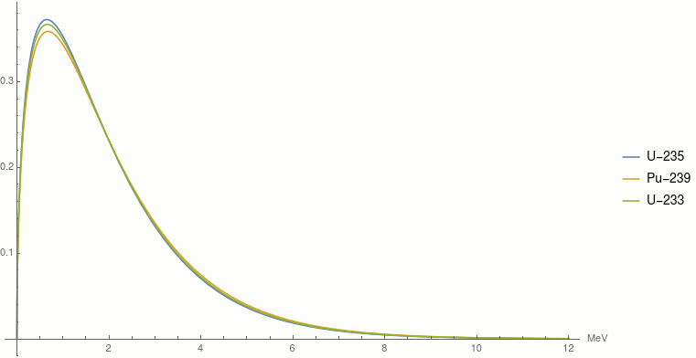
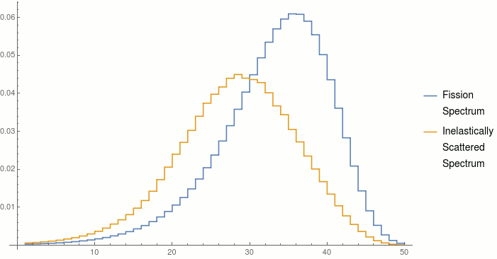
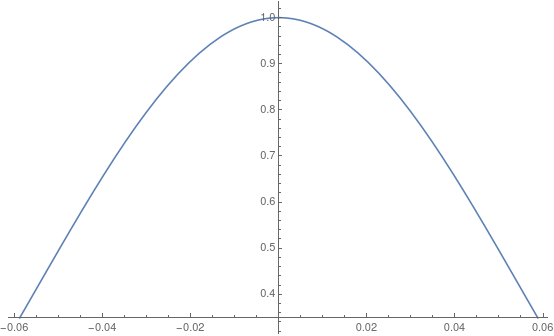
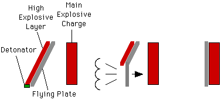
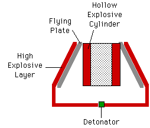
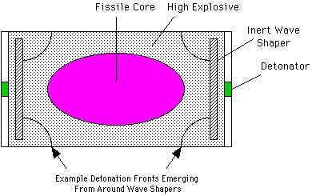

This material may be excerpted, quoted, or distributed freely provided that attribution to the author (Carey Sublette), the document name (Nuclear Weapons Frequently Asked Questions) and this copyright notice is clearly preserved, and the URL of this website is included: Nuclear Weapon Archive
Only authorized host sites may make this document publicly available on the Internet through the World Wide Web, anonymous FTP, or other means.
Unauthorized host sites are expressly forbidden.
The only authorized host site for the NWFAQ in English is the Nuclear Weapon Archive (nuclearweaponarchive)
4.1.1 Dimensional and Temporal Scale Factors
In Section 2 the properties of fission chain reactions were described using two simplified mathematical models: the discrete step chain reaction, and the more accurate continuous chain reaction model. A more detailed discussion of fission weapon design is aided by introducing more carefully defined means of quantifying the dimensions and time scales involved in fission explosions. These scale factors make it easier to analyze time-dependent neutron multiplication in systems of varying composition and geometry.
These scale factors are based on an elaboration of the continuous chain reaction model. It uses the concept of the "average neutron collision" which combines the scattering, fission, and absorption cross sections, averaged over the energies of all of the neutrons, with the total number of neutrons emitted per fission, to create a single figure of merit which can be used for comparing different assemblies (see for example "One-Speed Transport Theory" in Nuclear Reactor Theory by George I. Bell and Samuel Glasstone, Van Nostrand Reinhold, 1970).
Fission neutrons start life with a Maxwell-Boltzmann statistical energy distribution, the same distribution law as gas molecules in a room, although here the temperature is close to 1 MeV (nearly 10 billion degrees C). The distribution looks like this:
|  |
| Probability density functions of the fission neutron energies of U-235, Pu-239 and U-233. |
The most likely fission neutron energy is around 0.7 MeV, but the average value, due to the long tail to the right, is very close to 2 MeV.
Nuclear cross sections measure the likelihood of a nuclear reaction occurring, and are the effective geometric area the nucleus presents for that reaction. Larger cross sections are reactions that are more likely. Cross sections are measured in the non-SI unit called a "Barn", which is equal to 10^-24 cm^2.
The basic idea is this, when a neutron interacts with an atom we can think of it as consisting of two steps:
If the interaction is ordinary neutron capture, then no neutron is emitted from the collision. If the interaction is a scattering event, then one neutron is emitted. If the interaction is a fission event, then the average number of neutrons produced per fission is emitted (this average number is often designated by nu). By combining these we get the average number of neutrons produced per collision (also called the number of secondaries), designated by c:
Eq. 4.1.1-1 c = (cross_scatter + cross_fission*avg_n_per_fission - cross_absorption)/cross_total
the total cross section, cross_total, is equal to:
Eq. 4.1.1-2
cross_total = cross_scatter + cross_fission + cross_absorb
There are two types of scattering - elastic and inelastic.
Elastic scattering is the same process seen in the macroscopic world with billiard balls. Inelastic scattering only happens at high energies and in this case the model of the neutron being absorbed by the collision is more than conceptual, it really is absorbed froming a highly excited compound nucleus which then emits a neutron, and one of more gamma rays in the process. Elastic scattering causes energy loss, which is how moderators in reactors work, but neutrons bouncing off of heavy nuclei lose very little energy. For Pu-239 an elastic scattering event reduces the energy by only 0.84% on average.
Inelastic scattering, which converts a large part of the neutron kinetic energy into gamma rays, causes large energy losses, reducing the average fission spectrum neutron energy from 2 MeV to 1 MeV after one average inelastic scattering event. With inelastic scattering the conceptual model of scattering consisting of an absorption followed by emission is literally true. An unstable compound nucleus is formed in a very high energy state, but instead of undergoing fission it reemits a neutron at a lower energy, and disposes of the excess by emitting a gamma ray.The effect of inelastic scattering in plutonium is depicted below with the continuous distribution discretized into 50 logarithmically equal energy bands. The blue curve is the same distribution as shown above, but looks a bit different since it is plotted on a log-linear scale (the energy scale is logarithmic, the vertical probability axis is linear).
|  |
This loss of energy is important since it slows the neutron down, and fission explosions are very strongly affected by the speed of the reaction. The energy released varies by the third power of the reaction rate in fact. The cross sections also depend on the energy of the neutron, but this is a smaller effect than the energy velocity change.
Inelastic scattering causes another deviation from assumptions of diffusion theory, which supposes that all scattering events are isotropic. Inelastic scattering is not isotropic, but has a directional distribution peaked in the forward direction of neutron travel. But since all the other neutron "producing" events are isotropic, the inelastic scattering peak will also tend to be oriented isotropically. It is an established fact the diffusion theory, despite many simplifications of the real physical process, gives a very good general description of the behavior of fission weapons.
The total neutron mean free path (MFP), the average distance a neutron will travel before undergoing a collision, is given by:
Eq. 4.1.1-3
MFP = 1/(cross_total * N)
where N is the number of atoms per unit volume, determined by the density.
In computing the effective reactivity of a system we must also take into account the rate at which neutrons are lost by escape from the system. This rate is measured by the number of neutrons lost per collision. For a given geometry, the rate is determined by the size of the system in MFPs. Put another way, for a given geometry and degree of reactivity, the size of the system as measured in MFPs, is determined only by the parameter c. The higher the value of c, the smaller the assembly will be.
An indication of the effect of c on the size of a critical assembly can be gained by the following table of critical radii (in MFPs) for bare (unreflected) spheres:
|
Number of Secondaries (c) |
|
|---|---|
| Value of c | (critical radius in MFP) |
| 1.00 | infinite |
| 1.02 | 12.027 |
| 1.05 | 7.277 |
| 1.10 | 4.873 |
| 1.20 | 3.172 |
| 1.40 | 1.985 |
| 1.45 | 1.827 |
| 1.50 | 1.694 |
| 1.60 | 1.476 |
Many treatments of fission weapon physics ignore scattering and discuss only the fission mean free path and the fission neutron multiplicity (number of neutrons emitted per fission). This is fine when only considering the time-dependent behavior of the system, but scattering is crucial for understanding the critical size of the system, or the effect of a reflector. A nuclide with exactly the same fission cross section and multiplicity will have a smaller critical mass if its scattering cross section is higher. One can envision this by imagining a nuclide with an extremely high scattering cross section, in that case it is very hard for a neutron to escape as it scatters many times, and has a long "random walk" and so the critical mass must be very small.
If the composition, geometry, and reactivity of a system are specified then the size of a system in MFPs is fixed. From Eq. 4.1.1-3 we can see that the physical size or scale of the system (measured in centimeters, say) is inversely proportional to its density. Since the mass of the system is equal to volume*density, and volume varies with the cube of the radius, we can immediately derive the following scaling law:
Eq. 4.1.1-4
mcrit_c = mcrit_0/(rho/rho_0)^2 = mcrit_0/C^2
That is, the critical mass of a system is inversely proportional to the square of the density. C is the degree of compression (density ratio). This scaling law applies to bare cores, it also applies to cores with a surrounding reflector, if the reflector density has an identical degree of compression. This is usually not the case in real weapon designs, a higher degree of compression generally being achieved in the core than in the reflector.
An approximate relationship for this is:
Eq. 4.1.1-5
mcrit_c = mcrit_0/(C_c^1.2 * C_r^0.8)
where C_c is the compression of the core, and C_r is the compression of the reflector. Note that when C_c = C_r, then this is identical to Eq. 4.1.1-4. For most implosion weapon designs (since C_c > C_r) we can use the approximate relationship:
Eq. 4.1.1-6
mcrit_c = mcrit_0/C_c^1.7
These same considerations are also valid for any other specified degree of reactivity, not just critical cores.
Fission explosives depend on a very rapid release of energy. We are thus very interested in measuring the rate of the fission reaction. This is done using a quantity called the effective multiplication rate or "alpha". The neutron population at time t is given by:
Eq. 4.1.1-7
N_t = N_0*e^(alpha*t)
Alpha thus has units of 1/t, and the neutron population will increase by a factor of e (2.71...) in a time interval equal to 1/alpha. This interval is known as the "time constant" (or "e-folding time") of the system, t_c. The more familiar concept of "doubling time" is related to alpha and the time constant simply by:
Eq. 4.1.1-8
doubling_time = (ln 2)/alpha = (ln 2)*t_c
Alpha is often more convenient than t_c or doubling times since its value is bounded and continuous: zero at criticality; positive for supercritical systems; and negative for subcritical systems. The time constant goes to infinity at criticality. The term "time constant" seems unsatisfactory for this discussion though since it is hardly constant, t_c continually changes during reactivity insertion and disassembly. Therefore I will henceforth refer to the quantity 1/alpha as the "multiplication interval".
Alpha is determined by the reactivity (c and the probability of escape), and the length of time it takes an average neutron (for a suitably defined average) to traverse an MFP. If we assume no losses from the system then a maximum possible value for alpha can be calculated by:
Eq. 4.1.1-9
alpha_max = (1/tau)*(c - 1) = (v_n/total_MFP)*(c - 1)
where tau is the average neutron lifetime between collisions; and v_n is the average neutron velocity. The average velocity for neutrons directly emitted by fission is 1.8x10^9 cm/sec (corresponding to the average energy of 2 MeV), but due to inelastic scattering an average velocity of 1.4x10^9 cm/sec (1 MeV) is a better number (this is what J. Carson Mark uses in his paper Explosive Properties of Reactor-Grade Plutonium). The "no losses" assumption is an idealization. It provides an upper bound for reaction rates, and provides a good indication of the relative reaction rates in different materials. For extremely supercritical assemblies, consisting of many critical masses, neutron losses could actually become negligible and approach the alphas given below, but these conditions are not generally found in nuclear weapons, which do not usually require such degrees of supercriticality.
The factor c - 1 used above is the "neutron number", it represents the average neutron excess per collision. In real systems there is always some leakage, when this leakage is taken in account we get the "effective neutron number" which is always less than c - 1. When the effective neutron number is zero the system is exactly critical.
4.1.2 Nuclear Properties of Fissile Materials
The "temperature" of the fission neutron distribution varies very little among the various fissile nuclides, as can be seen the chart above.
Below is a table of the cross sections for the three fissile nuclides that are of primary interest, using three different values for the neutron energy to give a sense of how much variation there is in the energy range of interest. Also included is a calculation of the average cross sections for a material of considerable practical interest, weapon grade plutonium (WG-Pu) of a composition typical for the last phase of U.S. nuclear weapons production (0.012% Pu-238, 93.8% Pu-239, 5.8% Pu-240, 0.35% Pu-241, 0.022% Pu-242), alloyed with gallium (1.0% by weight, 3.5% molar), chosen since it represents the most common material found in modern nuclear weapons. The cross section for this material is given for 1 MeV, the best value to characterize fission weapon cores.
| Table 4.1.2-1 Reaction Cross Sections (Barns, 10^-24 cm^2) | ||||||||||
|---|---|---|---|---|---|---|---|---|---|---|
| Material: | ||||||||||
| Reaction Type | 1 MeV | 2 MeV | Fiss. Spectrum | 1 MeV | 2 MeV | Fiss. Spectrum | 1 MeV | 2 MeV | Fiss. Spectrum | 1 MeV |
| Total | 6.780 | 7.171 | 7.651 | 6.800 | 7.148 | 7.628 | 6.970 | 7.226 | 7.835 | 6.856 |
| Elastic | 3.860 | 3.688 | 4.474 | 3.650 | 3.452 | 4.451 | 3.665 | 3.390 | 4.396 | 3.663 |
| Inelastic | 1.002 | 1.484 | 1.208 | 1.843 | 2.349 | 1.858 | 1.545 | 1.853 | 1.581 | 1.544 |
| Total Scattering | 4.862 | 5.172 | 5.682 | 5.493 | 5.802 | 6.309 | 5.210 | 5.243 | 5.977 | 5.207 |
| Fission | 1.839 | 1.959 | 1.910 | 1.199 | 1.287 | 1.920 | 1.734 | 1.975 | 1.911 | 1.673 |
| Absorption | 0.079 | 3.981 | 0.059 | 0.108 | 0.059 | 0.087 | 0.026 | 0.008 | 0.053 | 0.0275 |
Since we are reducing all of these features of the system down to a single parameter (c) both elastic and inelastic scattering are treated the same, absorption also just reduces the effective number of secondaries.
A few observations about this table. One might suppose that the fission spectrum averaged cross section values, which use the actual initial neutron energy distribution, or 2 MeV which is the average value of this distribution, would be the best cross section values to use. But you will notice that the fission spectrum cross section of inelastic scattering and fission are roughly similar, which means that before they terminate their path in fission a large share neutrons will have scattered inelastically about once (this is almost exactly true for U-235). So an average neutron spends about half its flight at its original energy, and half after losing energy in inelastic scattering. The average value of neutron energy in the system then turns out to be about 1 MeV, and this cross section is the best of the three for our purpose here.
The actual value of alpha at a given density is the result of many interacting factors: the relative neutron density and cross sections values as a function of neutron energy, weighted by neutron velocity which in turn is determined by the fission neutron energy spectrum modified by the effects of both moderation and (principally) inelastic scattering.
Ideally the value of alpha should be determined by "integral experiments", that is, measured directly in the fissile material where all of these effects will occur naturally. Calculating tau and alpha from differential cross section measurements, adjusted neutron spectrums, etc. is fraught with potential error (although the data now available to the weapons states minimizes this problem).
In the table below are values of c, total mean free path length, and the maximum alpha at maximum uncompressed densities at 1 MeV. Compression to above normal density (achievable factors range up to 3 in weapons) reduces the MFPs, and increase alphas (and the relative, or scaled, physical dimensions of the system) proportionately. Note especially that the WG-Pu gallium alloy used in weapons under normal conditions is the lower density delta phase of plutonium, but collapses into the high density alpha phase under the low pressure (as high explosive detonation pressures go) of only 20 kilobars (2 GPa)
|
|
||||||
|---|---|---|---|---|---|---|
| Isotope | c | Cross_total (barns) | Total MFP (cm) | Density | Alpha (1/microsecond) | t_double (nanosecond) |
| U-233 | 1.41 | 6.780 | 3.08 | 18.93 | 190 | 3.69 |
| U-235 | 1.25 | 6.800 | 3.07 | 18.93 | 112 | 6.05 |
| Pu-239 | 1.50 | 6.970 | 2.87 | 19.86 | 252 | 2.86 |
| WG-Pu Alloy | 1.46 | 6.856 | 3.620 | 15.60 | 178 | 3.90 |
Values of c and total MFP can be easily calculated for mixtures of materials as I have done for WG-Pu. In real fission weapons (unboosted) effective values for alpha are typically in the range 25-250 (doubling times of 2.8 to 28 nanoseconds) due to the effects of neutron leakage in real systems.
Notice that using Table 4.1.1-1 and Table 4.1.2-2 we can immediately estimate the critical mass of a bare plutonium sphere:
mass_crit = [(2*1.694*2.867 cm)^3]*(Pi/6)*19.86 g/cm^3 = 9530 grams
The published figure for the pure isotope is about 10.2 kg, if this is thought of in terms of critical radii the difference is only 7%. Since significant amounts of physics are left out of this treatment, this is not a bad agreement.
All nations interested in nuclear weapons technology have performed integral experiments to measure alpha, but published data is sparse and in general is limited to the immediate region of criticality. Collecting data for systems at high densities requires extremely difficult high explosive experiments, and data for high alpha systems can only be done in actual nuclear weapon tests.
Some integral alpha data is available for systems near prompt critical. The most convenient measurements are of the negative alpha value for fast neutron chain reactions at delayed criticality. Since at prompt critical alpha is exactly zero, the ratio of the magnitude of this delayed critical measurement to the fraction of fission neutrons that are delayed allows the alpha value to be calculated. These were the only sort of alpha measurements available to the Manhattan Project for the design of the first atomic bombs.
The most informative values are from the Godiva and Jezebel unreflected reactor experiments. These two systems used bare metal weapon grade cores, so the properties of weapons material was being measured directly. Godiva consisted of oralloy (93.71 wt% U-235, 5.24 wt% U-238, 1.05 wt% U-234), Jezebel of weapon-grade delta-phase plutonium alloy (94.134 wt% Pu-239, 4.848 wt% Pu-240, 1.018 wt% gallium):
Table 4.1.2-2 Properties of Bare Critical Metal Assemblies
Mass, Density, and Measured Alpha are at Delayed Critical (D.C.)
Assembly Material Critical Mass Density Meas. Alpha Del. Neutron Calc. "Alpha"
Name kg (1/microsec) Fraction (1/microsec)
Godiva Oralloy 52.25 18.71 -1.35 0.0068 199
Jezebel WG-Pu 16.45 15.818 -0.66 0.0023 287
In a weapon the lifetime of a neutron, the length of time it exists in the system until it causes fission, or escapes, is the reciprocal of the weapon alpha. Most of the time the neutron will cause fission. In the bare critical assemblies referenced above we know, since they are just critical that for every fission all but one neutron will escape. Thus for plutonium, with a neutron multiplicity of 3.01, the escaping fraction is 2.01/3.01 = 67%, and for U-235 with a neutron multiplicity of 2.52, the escaping fraction is 1.52/2.52 = 60%. This means that the calculated alpha for the system is dominated by the escaping neutrons. Extracting the value for the underlying maximum alpha value requires a significant degree of modeling and calculation to remove the escaping fraction from the calculation.
The distribution of the neutron flux in Jezebel can be calculated through neutron diffusion and is show below.
|  |
The effective value of alpha (the actual multiplication rate), taking into account neutron leakage, varies with the size of the system. If the system radius R = r_c, then it is exactly one critical mass (m = M_crit), and alpha is zero. The more critical masses present, the closer alpha comes to the limiting value. This can be estimated from the relation:
Eq. 4.1.2-1
alpha_eff = alpha_max*[1 - (r_c/R)^2]
= alpha_max*[1 - (M_crit/m)^(2/3)]
This approximates the change in neutron loss from the system, which declines as the radius increases beyond the critical radius, as more mass is added, i.e. at constant density. If the increase in the r_c/R ratio is due to compression factor C then alpha_max also increases to alpha_max*C.
4.1.3 Distribution of Neutron Flux and Energy in the Core
Since neutron leakage occurs at the surface of a critical or supercritical core, the strength of the neutron flux is not constant throughout the core. Since the rate of energy release at any point in the core is proportional to the flux at that point, this also affects the energy density throughout the core. This is a matter of some significance, since it influences weapon efficiency and the course of events in terminating the divergent fission chain reaction.
4.1.3.1 Flux Distribution in the Core
For a bare (unreflected) critical spherical system, the flux distribution is given by:
Eq. 4.1.3.1-1
flux(r) = max_flux * Sin(Pi*r/(r + 0.71*MFP))/(Pi*r/(r + 0.71*MFP))
(using the diffusion approximation) where Sin takes radians as an argument.
If we measure r in MFPs, then by referring to Table 4.1.1-1 we can relate the flux distribution to the parameter c. Computing the ratio between the flux at the surface of the critical system, and the maximum flux (in the center) we find:
|
|
|
|---|---|
| Value of c | (critical radius in MFP) |
| 1.00 | 0.0 (at the limit) |
| 1.02 | 0.0587 |
| 1.05 | 0.0963 |
| 1.10 | 0.1419 |
| 1.20 | 0.2117 |
| 1.40 | 0.3182 |
| 1.60 | 0.4018 |
This shows that as c increases, the flux distribution becomes flatter with less drop in the flux near the surface.
The flux distribution function above applies only to bare critical systems. If the system is supercritical, then the flux distribution becomes flatter, since neutron production over-balances loss. The greater the value of alpha for the system, the flatter it becomes. The addition of a neutron reflector also flattens the distribution, even for the same degree of reactivity (the radius is smaller in this case). The flux distribution function is useful though, since the maximum rate of fission occurs at the moment when the core passes through second criticality (on the way to disassembling, see below).
4.1.3.2 Energy Distribution in the Core
As long as the geometry doesn't change, the relative flux distribution remains the same throughout the fission process. The fission reaction rate at any point in the core is proportional to the flux. The net burnup of fissile material (and total energy release) is determined by the reaction rate integrated over time.
This indicates that the degree of burnup (the efficiency of utilization) varies throughout the core. The outer layers of material will be fissioned less efficiently than the material near the center. The steeper the drop off in flux the greater this effect will be. We can thus expect less efficient utilization of fissile material in small cores, and in materials with low values of c. From the relatively low value of c for U-235 compared to U-233 and Pu-239, we can expect that U-235 will be used less efficiently. This is observed in pure fission tests, the difference being about 15% in nominal yield (20 kt) pure fission designs.
The energy density (energy content per unit volume) in any region of the core is determined not only by the total energy produced in that region, but also by the flow of heat in to and out from the region.
The energy present in the core rises by a factor of e (2.71...) every multiplication interval (neglecting any losses from the surface). Nearly all of the energy present has thus been produced in the last one or two multiplication intervals, which in a high alpha system is a very short period of time (10 nanoseconds or less). There is not much time for heat flow to significantly alter this energy distribution.
Close to the end point of the fission process, the energy density in the core is so high that significant flow can occur. Since most of the energy is present as a photon gas the dominant mechanism is radiation (photon) heat transport, although electron kinetic heat transport may be significant as well. This heat flow can be modelled by the diffusion approximation just like neutron transport, but in this case estimating the photon mean free path (the opacity of the material) is quite difficult. A rough magnitude estimate for the photon MFP is a few millimeters.
The major of effect of energy flow is the loss of energy from a layer about 1 photon mean free path thick (referred to as one optical thickness) at the surface of the core. In a bare core this cooling can be quite dramatic, but the presence of a high-Z tamper (which absorbs and re-emits energy) greatly reduces this cooling. Losses also occur deeper in the core, but below a few photon MFPs it becomes negligible. Otherwise, there is a significant shift in energy out of the center of the core that tends to flatten the energy distribution.
The energy density determines the temperature and pressure in the core, so there is also a variation in these parameters. Since the temperature in radiation dominated matter varies with the fourth power of the energy density, the temperature distribution is rather flat (except near the surface perhaps). The pressure is proportional to the energy density, so it varies in similar degree.
4.1.4 History of a Fission Explosion
To clarify the issues governing fission weapon design it is very helpful to understand the sequence of events that occurs in every fission explosion. The final event in the process - disassembly - is especially important since it terminates the fission energy release and thus determines the efficiency of the bomb.
4.1.4.1 Sequence of Events
Several distinct physical states can be identified during the detonation of a fission bomb. In each of these states a different set of physical processes dominates.
4.1.4.1.1 Initial State
Before the process that leads to a fission explosion is initiated, the fissile material is in a subcritical configuration. Reactivity insertion begins by increasing the average density of the configuration in some way.
4.1.4.1.2 Delayed Criticality
When the density has increased just to the point that a neutron population in the mass is self-sustaining, the state of delayed criticality has been achieved. Although nearly all neutrons produced by fission are emitted as soon as the atom splits (within 10^-14 sec or so), a very small proportion of neutrons (0.65% for U-235, 0.25% for Pu-239) are emitted by fission fragments with delays of up to a few minutes. In delayed criticality these neutrons are required to maintain the chain reaction. These long delays mean that power level changes can only occur slowly. All nuclear reactors operate in a state of delayed criticality. Due to the slowness of neutron multiplication in this state it is of no significance in nuclear explosions, although it is important for weapon safety considerations.
4.1.4.1.3 Prompt Criticality
When reactivity increases to the point that prompt neutrons alone are sufficient to maintain the chain reaction then the state of prompt criticality has been reached. Rapid multiplication can occur after this point. In bomb design the term "criticality" usually is intended to mean "prompt criticality". For our purposes we can take the value of alpha as being zero at this point. The reactivity change required to move from delayed to prompt criticality is quite small (for plutonium the prompt and delayed critical mass difference is only 0.80%, for U-235 it is 2.4%), so in practice the distinction is unimportant. Passage through prompt criticality into the supercritical state is also termed "first criticality".
4.1.4.1.4 Supercritical Reactivity Insertion
The insertion time of a supercritical system is measured from the point of prompt criticality, when the divergent chain reaction begins. During this phase the reactivity climbs, along with the value of alpha, as the density of the core continues to increase. Any insertion system will have some maximum degree of reactivity which marks the end of the insertion phase. This phase may be terminated by reaching a plateau value, by passing the point of maximum reactivity and beginning to spontaneously deinsert, or by undergoing explosive disassembly.
4.1.4.1.5 Exponential Multiplication
This phase may overlap supercritical insertion to any degree. Any neutrons introduced into the core after prompt criticality will initiate a rapid divergent chain reaction that increases in power exponentially with time, the rate being determined by alpha. If exponential multiplication begins before maximum reactivity, and insertion is sufficiently fast, there may be significant increases in alpha during the course of the chain reaction. Throughout the exponential multiplication phase the cumulative energy released remains too small to disrupt the supercritical geometry on the time scale of the reaction. Exponential multiplication is always terminated by explosive disassembly. The elapsed time from neutron injection in the supercritical state to the beginning of explosive disassembly is called the "incubation time".
4.1.4.1.6 Explosive Disassembly
The bomb core is disassembled by a combination of internal expansion that accelerates all portions of the core outward, and the "blow-off" or escape of material from the surface, which generates a rarefaction wave propagating inward from the surface. The drop in density throughout the core, and the more rapid loss of material at the surface, cause the neutron leakage in the core to increase and the effective value of alpha to decline.
The speed of both the internal expansion and surface escape processes is proportional to the local speed of sound in the core. Thus disassembly occurs when the time it takes sound to traverse a significant fraction of the core radius becomes comparable to the time constant of the chain reaction. Since the speed of sound is determined by the energy density in the core, there is a direct relationship between the value of alpha at the time of disassembly and the amount of energy released. The faster is the chain reaction, the more efficient is the explosion.
As long as the value of alpha is positive (the core is supercritical) the fission rate continues to increase. Thus the peak power (energy production rate) occurs at the point where the core drops back to criticality (this point is called "second criticality"). Although this terminates the divergent chain reaction, and exponential increase in energy output, this does not mean that significant power output has ended. A convergent chain reaction continues the release of energy at a significant, though rapidly declining, rate for a short time afterward. 30% or more of the total energy release typically occurs after the core has become sub-critical.
4.1.4.2 The Disassembly Process
The internal expansion of the core is caused by the existence of an internal pressure gradient. The escape of material from the surface is caused by an abrupt drop in pressure near the surface, allowing material to expand outward very rapidly. Both of these features are present in every fission bomb, but the degree to which each contributes to disassembly varies.
Consider a spherical core with internal pressure declining from the center towards the surface. At any radius r within the core the pressure gradient is dP/dR. Now consider a shell of material centered at r, that is sufficiently thin so that the slope of the pressure gradient does not change appreciably across it. The mass of the shell is determined by its area, density, and thickness:
m = thickness * area * density
The outward force exerted on the shell is determined by the pressure difference across the shell and the shell area:
F = dP/dR * thickness * area
From Newton's second law of motion we know that acceleration is related to force and mass by:
a = F/m
so:
a = (dP/dR * thickness * area)/(thickness * area * density)
= (dP/dR)/density
If density is constant in the core, then the outward acceleration at any point is proportional to the pressure gradient; the steeper the gradient, the greater the acceleration. The kinetic energy acquired comes at the expense of the internal energy of the expanding material.
The limiting case of a steep pressure gradient is a sudden drop to zero. In this case the acceleration is infinite, the internal energy of the material is completely converted to kinetic energy instantaneously and it expands outwards at constant velocity (escape velocity). The edge of the pressure drop propagates back into the material as a rarefaction wave at the local speed of sound. The pressure at the leading edge of the expanding material (moving in the opposite direction at escape velocity) is zero. The pressure discontinuity thus immediately changes into a continuous pressure change of steadily diminishing slope. See Section 3.6.1.1 Release Waves for more discussion of this process.
In a bare core, thermal radiation from the surface causes a large energy loss in a surface layer about one optical thickness deep. Since energy lost from the core by thermal radiation cannot contribute to expansion, this has the effect of delaying disassembly. It does create a very steep pressure gradient in the layer however, and a correspondingly high outward acceleration. Deeper in the core, the pressure gradient is much flatter and the acceleration is lower. After the surface layer has expanded outward by a few times its original thickness, it has acquired considerable velocity, and the surface pressure drop rarefaction has propagated a significant distance back into the core. At this point the pressure and density profile of the core closely resembles the early stages of expansion from an instantaneous pressure drop, the development of the profile having been delayed slightly by the time it took the surface to accelerate to near escape velocity.
A bomb core will typically be surrounded by a high-Z tamper. A layer of tamper (about one optical thickness deep) absorbs the thermal radiation emitted by the core and is heated by it. As its temperature increases, this layer begins to radiate energy back to the core, reducing the core's energy loss. In addition, the heating also generates considerable pressure in the tamper layer. The combined effect of reduced core surface cooling, and this external pressure is to create a much more gradual pressure drop in the outer layer of the core and a correspondingly reduced acceleration.
The expanding core and heated tamper layer creates a shock wave in the rest of the tamper. This has important consequences for the disassembly process. The rarefaction wave velocity is not affected by the presence of the tamper, but the rate at which the density drops after arrival of the rarefaction wave is strongly affected. The rate of density drop is determined by the limiting outward expansion velocity, this is in turn determined by the shock velocity in the tamper. The denser the tamper the slower the shock, and the slower the density decrease behind the rarefaction wave. In any case the shock velocity in the tamper is much slower than the escape velocity of expansion into a vacuum. The disassembly of a tamped core thus more closely resembles one dominated by internal expansion rather than surface escape.
4.1.4.3 Post Disassembly Expansion
The expanding core creates a radiation dominated shock wave in the tamper that compresses it by at least a factor of 7, and perhaps as high as 16 due to ionization effects. This pileup of high density material at the shock front is called the "snow plow" effect. By the time this shock has moved a few centimeters into the tamper, the rarefaction wave will have reached the center of the core and the entire core will be expanding outward uniformly.
The basic structure of the early fireball has now developed, consisting of a thin highly compressed shell just behind the shock front containing nearly all of the mass that has been shocked and heated so far. This shell travels outward at nearly the same velocity as the shock front. The volume inside this shell is a region of very low density. Temperature and pressure behind the shock front is essentially uniform though since nearly all of the energy present is contained in the radiation field (i.e. it exists as a photon gas). Since the shock wave is radiation dominated, the front does not contain an abrupt pressure jump. Instead there is a transition zone with a thickness about equal to the radiation mean free path in the high-Z tamper material (typically a few millimeters). In this zone the temperature and pressure climb steadily to their final value.
This overall explosion structure remains the same as the shock expands outward until it reaches a layer of low-Z material (a beryllium reflector, or the high explosive).
The transition zone marking the shock front remains thin as long as the shock is travelling through opaque high-Z material. Low-Z material becomes completely ionized as it is heated, and once it is completely ionized it is nearly transparent to radiation and is no longer efficiently heated. When the shock front emerges at the boundary of the high-Z tamper and the low-Z material, it spits into two regions. A radiation driven shock front moves quickly away from the high-Z surface, bleaching the low-Z material to transparency. This faster shock front only creates a partial transition to the final temperature and pressure. The transition is completed by a second shock, this one a classical mechanical shock, driven by the opaque material.
4.1.5 Fission Weapon Efficiency
Fundamental to analyzing the design of fission bombs is understanding the factors that influence the efficiency of the explosion - the percentage of fissile material actually fissioned. The efficiency and the amount of fissile material present determine the amount of energy released by the explosion - the bomb's yield.
I have organized my discussion of design principles around the issue of efficiency since it is the most important design characteristic of any fission device. Any weapon designer must have a firm grasp on the expected efficiency in order to make successful yield predictions, and a firm grasp on the factors affecting efficiency is required to make design tradeoffs.
In the discussion below (and in later subsections as well) I assume that the system under discussion is spherically symmetric, and of homogenous density, unless otherwise stated. Spherical symmetry is the simplest geometry to analyze, and also happens to be the preferred geometry for efficient nuclear weapons.
4.1.5.1 Efficiency Equations
It is intrinsically difficult to accurately predict the performance of a particular design from fundamental physical principles alone. To make good predictions on this basis requires sophisticated computer simulations that include hydrodynamic, radiation, and neutronic effects. Even here it is very valuable to have actual test data to use for calibrating these simulation models.
Nuclear weapon programs have historically relied heavily on extrapolating tested baseline designs using scaling laws like the efficiency equations I discuss below, especially in the early years of development. These equations are derived from idealized models of bomb core behavior and consequently have serious limitations in making absolute efficiency estimates. The predictions of the Theoretical Section at Los Alamos underestimated the yield of the first atomic bomb by a factor of three; an attempts a few years later to recompute the bomb efficiency using the best models, physical data, and computers available at the time led to a yield overestimate by a factor of two.
From the description of core disassembly given above we can see that two possible idealizations are possible for deriving convenient efficiency equations:
The basic approach is to model how quickly the core expands to the point of second criticality. To within a constant scaling factor, this fixes the efficiency of the explosion.
In the first modelling approach, the state of second criticality is based on the average density of the entire core. In the second approach, second criticality is based on the surface loss of excess critical masses from a residual core which remains at constant initial density.
The first efficiency equation to be developed was the Bethe-Feynmann equation, prepared by Hans Bethe and Richard Feynman at Berkeley in 1942 based on the uniform expansion model. A somewhat different efficiency equation was presented by Robert Serber in early 1943 at Los Alamos, which was also based on uniform expansion but also explicitly included the exponential growth in energy release (which the Bethe-Feynmann equation did not). A problem with these derivations is that to keep the resultant formulas relatively simple, they assume that the expanding core remains at essentially constant density during deinsertion, which is only true (even approximately) when the degree of supercriticality is small.
For the purposes of this FAQ I have taken the second approach for deriving an efficiency equation, using the surface escape model. This model has the advantage that the residual core remains at constant density regardless of the degree of supercriticality. Comparing it to the other efficiency equations provides some insight into the sensitivity of the assumptions in the various models.
4.1.5.1.1 The Serber Efficiency Equation Revisited
Let us first consider the factors that affect the efficiency of a homogenous untamped supercritical mass. In this system, disassembly begins as fissile material expands off the core's surface into a vacuum. We make the following simplifying assumptions:
If r is the initial outer radius, and r_c is the critical radius, then the reaction halts when:
Eq. 4.1.5.1.1-1
Integral[c_s(t) dt] = r - r_c
where c_s(t) is the speed of sound at time t.
If kinetic pressure is negligible compared to radiation pressure (this is true in all but extremely low yield explosions), then:
Eq. 4.1.5.1.1-2
c_s(t) = [(E(t)*gamma)/(3*V*rho)]^0.5
where E(t) is the cumulative energy produced by the reaction, V is the volume of the core, and rho is its density.
We also have:
Eq. 4.1.5.1.1-3
E(t) = (E1/(c - 1)) * e^(alpha*t)
where E1 is a constant that gives the energy yield per fission (E1 = 2.88 x 10^-4 erg/fission). Thus:
Eq. 4.1.5.1.1-4
Eff(t) = E(t)/E_total = (E1/((c - 1)*E_total)) * e^(alpha*t)
where Eff(t) is the efficiency at time t, and E_total is the energy yield at 100% efficiency.
Thus:
Eq. 4.1.5.1.1-5
r - r_c = Integral[(E(t)*gamma/(3*V*rho))^0.5 dt]
= (gamma*E1/(3*M*(c-1)))^0.5 * Integral[e^(alpha*t/2)dt]
= (gamma*E1/(3*M*(c-1)))^0.5 * 2/alpha * e^(alpha*t/2)
where M is the fissile mass.
Rearranging and squaring we get:
Eq. 4.1.5.1.1-6 e^(alpha*t) = (r - r_c)^2 * ((3M*(c-1))/(gamma*E1)) * (alpha^2)/4
Substituting into the efficiency equation:
Eq. 4.1.5.1.1-7
Eff(t) = [3*alpha^2 * M * (r - r_c)^2]/(4*gamma*E_total)
If E2 is a constant equal to fission energy/gram in ergs (7.25 x 10^17 erg/g for Pu-239), and gamma is equal to 4/3 for a photon gas, then:
Eq. 4.1.5.1.1-8
Eff(t) = [9*alpha^2 * (r - r_c)^2]/(16*E2)
We can observe at this point that efficiency is determined by the actual value of alpha and the difference between the actual radius of the assembly, and the radius of the mass just sufficient to keep the chain reaction going. Note that it is the values of these parameters WHEN DISASSEMBLY ACTUALLY OCCURS that are relevant.
Now using r = r_c(1 + delta) so that (r - r_c) = delta*r_c, we get:
Eq. 4.1.5.1.1-9
Eff(t) = [9*alpha^2 * delta^2 * r_c^2]/(16*E2)
If we let tau = (total_MFP/v_n) then:
Eq. 4.1.5.1.1-10
alpha_max = (v_n/total_MFP)*(c - 1) = (c - 1)/tau
and
Eq. 4.1.5.1.1-11
alpha_eff = ((c - 1)/tau)*[1 - (1/(1 + delta)^2)]
Now:
Eq. 4.1.5.1.1-12
Eff(t) = ((c-1)/tau)^2 * 9/(16*E2) * r_c^2 * delta^2 *[1-(1/(1+ delta)^2)]^2
= ((c-1)/tau)^2 * 9/(16*E2) * r_c^2 *[delta - (delta/(1+ delta)^2)]^2
In the range of 0 < delta < 1 (up to 8 critical masses), the expression
[delta - (delta/(1+ delta)^2)]^2
is very close to 0.6*delta^3, giving us:
Eq. 4.1.5.1.1-13
Eff(t) = 0.338*((c-1)/tau)^2 * r_c^2/E2 * delta^3
= 0.338/E2 * alpha_max^2 * r_c^2 * delta^3
This last equation is identical with the equation derived by Robert Serber in the spring of 1943 and published in The Los Alamos Primer, except that his constant is 0.667 (i.e. gives efficiencies 1.98 times higher). Serber derived his efficiency equation from rough dynamical considerations without using a hydrodynamic model of disassembly and admits that his result is 2-4 time higher than the true value. This is consistent with the above derivation.
Both the equation given above and Serber's equation differ significantly from the Bethe-Feynman equation however, which gives an efficiency relationship of:
Eq. 4.1.5.1.1-14
Eff = (1/(gamma - 1)E2) * alpha_max^2 * r_c^2 *
(delta*(1 + 3*delta/2)^2)/(1 + delta)
after reformulating to equivalent terms. This is a much more linear relationship between delta and efficiency, than the cubic relationship of Serber. Due to the crudeness of all of these derivations, the significance of this difference cannot be assessed at present.
Equation 4.1.5.1.1-13 shows that efficiency is proportional to the square of the maximum multiplication rate of the material, and the critical radius (also due to material properties), and is the cube of the excess critical radius excess delta.
Extending to larger values, we can approximate it in the range 1 < delta < 3 (up to 64 critical masses), with the expression:
Eq. 4.1.5.1.1-15
Eff(t) = 0.338/E2 * alpha_max^2 * r_c^2 * delta^(7/3)
4.1.5.1.2 The Density Dependent Efficiency Equation
The efficiency equations given above leave something to be desired for evaluating fission weapon designs. I have included it to assist in making comparisons with the available literature, but I will give it a different form below.
The choice of fissile materials available to a weapon designer is quite limited, and the nuclear and physical properties of these materials are fixed. It is desirable then to separate these factors from the factors that a designer can influence - namely, the mass of material present, and the density achieved. The density is of particular interest since it is the only factor that changes in a given design during insertion. Understanding how efficiency changes with density is essential to understanding the problem of predetonation for example.
Returning to equation Eq. 4.1.5.1.1-8:
Eff(t) = [9*alpha^2 * (r - r_c)^2]/(16*E2)
we want to reformulate it so that it consists of two parts, one that does not depend on density, and one that depends only on density.
Let the composition and mass of the system be fixed. We will normalize the radius and density so that they are expressed relative to the system's critical state. If rho_crit and r_crit are the values for density and radius of the critical state, and rho_rel and r_rel are the values of the system that we want to evaluate:
Eq. 4.1.5.1.2-1
rho_rel = rho_actual/rho_crit
and
Eq. 4.1.5.1.2-2
r_rel = r_actual/r_crit
When the system is exactly critical, rho_rel = 1 and r_rel = 1. Of course we are interested in states where rho_rel > 1, and r_rel < 1. We can relate r_rel to rho_rel:
Eq. 4.1.5.1.2-3
r_rel = (1/rho_rel)^(1/3) * r_crit
Using this notation, and letting alpha_max_c be the value of alpha_max at the critical state density, we can write:
alpha = alpha_max_c * rho_rel * (1 - (r_c/r_rel)^2)
In this case r_c refers to the effective critical radius at density rho_rel not rho_crit; that is, r_c IS NOT r_crit. Instead it is equal to r_crit/rho_rel. Using this, and the relation for r_rel above, we can eliminate r_crit:
Eq. 4.1.5.1.2-4
alpha = alpha_max_c * rho_rel * (1 - ((1/rho_rel)/(1/rho_rel)^(1/3))^2)
= alpha_max_c * rho_rel * (1 - (rho_rel)^(-4/3))
Substituting into the efficiency equation:
Eq. 4.1.5.1.2-5 Eff = (9/16*E2) * alpha^2 * (r_rel - r_c)^2
we get:
Eq. 4.1.5.1.2-6
Eff = (9/(16*E2))*(alpha_max_c*rho_rel*(1 - (rho_rel)^(-4/3)))^2 *
(r_rel - r_c)^2
Splitting constant and density dependent factors between two lines:
Eq. 4.1.5.1.2-7
Eff = (9/(16*E2)) * alpha_max_c^2 *
rho_rel^2 * (1-(rho_rel)^(-4/3))^2 * (r_rel - r_c)^2
We can eliminate r_rel and r_c, replacing them with expressions of rho_rel and r_crit:
Eq. 4.1.5.1.2-8
r_rel - r_c = (1/rho_rel)^(1/3) * r_crit) - (r_crit/rho_rel)
= ((1/rho_rel)^(1/3) - (1/rho_rel)) * r_crit
Substituting again:
Eq. 4.1.5.1.2-9
Eff = (9/(16*E2)) * alpha_max_c^2 * r_crit^2 *
rho_rel^2 * (1-(rho_rel)^(-4/3))^2 * ((1/rho_rel)^(1/3)-(1/rho_rel))^2
Recall that the rho_rel, the relative density, is not generally the compression ratio compared to normal density. This is true only if amount of fissile material in the system is exactly one critical mass at normal density (as was approximately true in the Fat Man bomb). For "sub-crit" systems, rho_rel is smaller than the actual compression of the material since compressive work is required to raise the initial sub-critical system to the critical state. For a system consisting of more than one critical mass (at normal density), rho_rel is higher than the actual compression.
By looking in turn at each of the density dependent terms we can gain insight into the significance of the efficiency equation. First note that alpha_max_c is a fundamental property of the fissile material and does not change, even though it is system dependent (being normalized to the critical density of the system).
The term (rho_rel^2) is introduced by the reduction of the MFP with increasing density and contributes to enhanced efficiency at all values of rho_rel.
The term (1-(rho_rel)^(-4/3)))^2 represents the effect of neutron leakage. At rho_rel=1 the value is 0. It has a limiting value of 1 when rho_rel is high, i.e. no leakage occurs. As this term approaches one, and leakage becomes insignificant, it ceases to be a significant contributor to further efficiency enhancement.
The term ((1/rho_rel)^(1/3)-(1/rho_rel))^2 describes the distance the rarefaction wave must travel to shut down the reaction. At rho_rel=1 it is 0. It initially increases rapidly, but soon slows down at reaches a maximum at about rho_rel = 5.196. Thereafter it declines slowly. This signifies that fact that once the critical radius of the system at rho_rel is small compared to the physical radius no further efficiency gain is obtained from this source. Instead further increases in density simply reduce the scale of the system, allowing faster disassembly.
We can provide some approximations for the efficiency equation to make the overall effect of density more apparent.
In the range of 1 < rho_rel < 2 it is approximately:
Eq. 4.1.5.1.2-10 Eff = (9/(16*E2)) * alpha_max_c^2 * r_crit^2 * ((rho_rel - 1)^3)/8
In the range of 2 < rho_rel < 4.5 it is approximately:
Eq. 4.1.5.1.2-11 Eff = ((9/(16*E2)) * alpha_max_c^2 * r_crit^2 * ((rho_rel - 1)^(2.333))/8
In the range of 4 < rho_rel < 8 it is approximately:
Eq. 4.1.5.1.2-12 Eff = (9/(16*E2)) * alpha_max_c^2 * r_crit^2 * ((rho_rel - 1)^(1.8))/5
4.1.5.1.3 The Mass and Density Dependent Efficiency Equation
The maximum degree of compression above normal density that is achievable is limited by technology. It is of interest then to consider how the amount of material present affects efficiency at a given level of compression, since it is the other major parameter that a designer can manipulate.
To examine this we would like to reintroduce an explicit term for mass. To do this we renormalize the equation to a fixed standard density rho_0 (the uncompressed density of the fissile material), and use rho_0 and the corresponding value of the critical mass M_c to replace the scale parameter r_crit. Thus:
Eqs. 4.1.5.1.3-1 through 4.1.5.1.3-5
alpha_max_crit = alpha_max_0 * (rho_crit/rho_0)
m_rel = m/M_c
rho_crit = rho_0/m_rel^(1/2)
rho_rel = rho/rho_crit = (rho/rho_0)*m_rel^(1/2)
r_crit = ((m/rho_crit)*(3/(2Pi)))^(1/3)
= (m*m_rel^(1/2)/rho_0)^(1/3) * (3/2Pi)^(1/3)
= (m^(3/2)/(M_c^(1/2) * rho_0))^(1/3) * (3/2Pi)^(1/3)
= m^(1/2) * (M_c^(1/2) * rho_0)^(-1/3) * (3/2Pi)^(1/3)
Assuming the density rho >= rho_crit, we get:
Eq. 4.1.5.1.3-6
Eff = (9/(16*E2))*(3/(2Pi))^(2/3) * alpha_max_0^2 *
(rho_crit/rho_0)^2 * (rho/rho_crit)^2 *
(m^(1/2) * (M_c^(1/2) * rho_0)^(-1/3))^2 *
(1-((rho_0/rho)^(4/3) * m_rel^(-2/3)))^2 *
(((rho_0/rho)^(1/3) * m_rel^(-1/6)) - ((rho_0/rho) * m_rel^(-1/2)))^2
Simplifying:
Eq. 4.1.5.1.3-7
Eff = (9/(16*E2))*(3/(2Pi))^(2/3) * alpha_max_0^2 *
(rho/rho_0)^2 * m/(M_c^(1/3) * rho_0^(2/3)) *
(1-((rho_0/rho)^(4/3) * m_rel^(-2/3)))^2 *
m_rel^(-1) * (((rho_0 * m_rel)/rho)^(1/3) - (rho_0/rho))^2
Then:
Eq. 4.1.5.1.3-8
Eff = (9/(16*E2))*(3/(2Pi))^(2/3) * alpha_max_0^2 * m/(M_c^(1/3)) * (M_c/m)
(rho^2)/(rho_0^(8/3)) * (1 - ((rho_0/rho)^(4/3) * m_rel^(-2/3)))^2 *
(((rho_0 * m_rel)/rho)^(1/3) - (rho_0/rho))^2
And finally:
Eq. 4.1.5.1.3-9
Eff = (9/(16*E2))*(3/(2Pi))^(2/3) * alpha_max_0^2 * M_c^(2/3) *
(rho/(rho_0^(4/3)))^2 * (1 - ((rho_0/rho)^(4/3) * m_rel^(-2/3)))^2 *
(((rho_0 * m_rel)/rho)^(1/3) - (rho_0/rho))^2
The first line of this equation consists entirely of constants, some of them fixed by the choice of material and reference density. From the next two lines it is clear that the density dependency is the same. The effect of increasing the mass of the system is to modestly reduce leakage and retard disassembly.
4.1.5.1.4 The Mass Dependent Efficiency Equation
It is useful to also have an equation that considers only the effect of mass. Including this as the only variable allows presenting a simplified form that makes the effect of varying the mass in a particular design easier to visualize. Also in gun-type designs no compression occurs, so the chief method of manipulating yield is by varying the mass of fissile material present.
Taking the mass and density dependent equation, we can set the density to a fixed nominal value, rho, and then simplify. Let rho = rho_0:
Eq. 4.1.5.1.4-1
Eff = (9/16*E2)*(3/2Pi)^(2/3) * alpha_max_0^2 * M_c^(2/3) *
(rho_0/(rho_0^(4/3))^2 *(1 - ((rho_0/rho_0)^(4/3) * m_rel^(-2/3)))^2 *
(((rho_0 * m_rel)/rho_0)^(1/3) - (rho_0/rho_0))^2
= (9/16*E2)*(3/2Pi)^(2/3) * alpha_max_0^2 * M_c^(2/3) *
rho_0^(-2/3) * (1 - m_rel^(-2/3))^2 * ((m_rel)^(1/3) - 1)^2
Since M_c/rho_0 is the volume of a critical assembly (m_rel = 1):
Eq. 4.1.5.1.4-2
Eff = (9/16*E2)*(3/2Pi)^(2/3) * alpha_max_0^2 * vol_crit^(2/3) *
(1 - m_rel^(-2/3))^2 * ((m_rel)^(1/3) - 1)^2
And finally:
Eq. 4.1.5.1.4-3
Eff = (9/16*E2)*(2^(2/3)) * alpha_max_0^2 * r_crit^2 *
(1 - m_rel^(-2/3))^2 * ((m_rel)^(1/3) - 1)^2
Again the top line consists of numeric and material constants, the second of mass dependent terms. This equation shows that efficiency is zero when m_rel = 1, as expected. Efficiency is negligible when m_rel < 1.05, similar to the power of conventional explosives. It climbs very quickly however, increasing by a factor of 400 or so between 1.05 and 1.5, where efficiency becomes significant. The Little Boy bomb had m_rel = 2.4. If its fissile content had been increased by a mere 16%, its yield would have increased by 75% (whether this could be done while maintaining a safe criticality margin is a different matter).
4.1.5.1.5 Limitations of the Efficiency Equations
These formulas provide good scaling laws, and a rough means to calculate efficiency. But we should return to the simplifying assumptions made earlier to understand their limitations.
It is obvious that alpha is not constant during disassembly. As material blows off, the size of the core and the value of alpha both decrease, which has a negative effect on efficiency. This is the most important factor not accounted for, and results in a lower effective coefficient in the efficiency equation.
The assumption about uniform temperature, and no energy loss is also not really true. The energy production rate in any region of the core is proportional to the neutron flux density. This density is highest in the center and lowest at the surface (although not dramatically so). Furthermore, the high radiation energy density in the core corresponds to a high radiation loss rate from the surface. Based on the Stefan-Boltzmann law it would seem that the loss rate from a bare core could eventually match the energy production rate. This doesn't really occur because of the high opacity of ionized high-Z material; thermal energy from inside the core cannot readily reach the surface. But by the same token, the surface can cool dramatically. Since core expansion starts at the surface, and the rate is determined by temperature, this surface cooling can significantly retard disassembly.
When scaling from known designs, most of these issues have little significance since the deviations from the theoretical model used for the derivations affects both system similarly.
The efficiency equations also breaks down at very small yields. To eliminate gamma from the equations I assumed that the core was radiation dominated at the time of disassembly. When yields drop to the low hundreds of tons and below, the value of gamma approximates that of a perfect gas which changes only the constant term in the equations, reducing efficiency by 20%. When yields drop to the ton range then the properties of condensed matter (like physical strength, heat of vaporization, etc.) become apparent. This tends to increase the energy release since these properties resist the expansion effects.
There is another factor that imposes an effective upper limit on efficiency regardless of other attempts to enhance yield. This is the decrease in fissile content of the core. The alert reader may have noticed that it is possible to calculate efficiencies that are greater than 1 using the equations. This is because energy release is represented as an exponentially increasing function of time without regard for the amount of energy actually present in the fissile material. At some point, the fact that the fission process depletes the fissile material present must have an effect on the progress of the chain reaction.
The limiting factor here is due to the dilution of the fissile material by the fission products. Most isotopes have roughly the same absorption cross section for fast neutrons, a few barns. The core initially consists of fissile material, but as the chain reaction proceeds each fission event replaces one fissile nucleus with two fission product nuclei. When 50% of the material has fissioned, for every 100 initial fissile atoms there are now 50 remaining, and 100 non-fissile atoms, i.e. the fissile content has declined to only 33%. This parasitic absorption will eventually extinguish the reaction entirely, regardless of what yield enhancement techniques are used (generally at an efficiency substantially below 50%).
4.1.5.2 Effect of Tampers and Reflectors on Efficiency
So far I have been explicitly assuming a bare fissile mass for efficiency estimation. Of course, most designs surround the core with layers of material intended to scatter escaping neutrons back into the fissile mass, or to retard the hydrodynamic expansion.
I use the term "reflector" to refer to the neutron scattering properties of the surrounding material, and "tamper" to refer to the effect on hydrodynamic expansion. The distinction is logical because the two effects are fundamentally unrelated, and because the term tamper was borrowed from explosive blasting technique where it refers only to the containment of the blast. This distinction is not usually made in US weapons programs, from Manhattan Project on. The custom is to use "tamper" to refer to both effects, although "neutronic tamper" and "reflector" are used if the neutron reflection effect alone is intended.
4.1.5.2.1 Tampers
In the bare core, the fissile material that has been reached by the inward moving rarefaction wave expands outward very rapidly. In radiation dominated matter, expansion into a vacuum reaches a limiting speed of six times the local speed of sound in the material (this is the velocity at the outer surface of the expanding sphere of material). The density of matter behind the rarefaction front (which moves toward the center of the core) thus drops very rapidly and is almost immediately lost to the fission reaction.
If a layer of dense material surrounds the core then something very different occurs. The fissile material is not expanding into a vacuum, instead it has to compress and accelerate matter ahead of it. That is, it creates a shock wave. The expansion velocity of the core is then limited to the velocity of accelerated material behind the expanding shock front, which is close to the shock velocity itself. If the tamper and fissile core have similar densities, then this expansion velocity is similar to the speed of sound in the core and only 1/6 as fast as the unimpeded expansion velocity.
This confining effect means that the drop in alpha as disassembly proceeds is not nearly as abrupt as in a vacuum. It thus reduces the importance of the inaccurate assumption of constant alpha used in deriving the efficiency equation.
Another important effect is caused by the radiation cooling of the core. In a vacuum this energy is lost to free space. An opaque tamper absorbs this energy, and a layer of material one mean free path thick is heated to nearly the temperature and pressure of the core. The expansion shock wave then arises not at the surface of the core, but some distance away in the tamper (on the order of a few millimeters). A rarefaction wave must then propagate back to the surface of the core before its expansion even begins. In effect, this increases size of the expansion distance term ((1/rho_rel)^(1/3)-(1/rho_rel))^2 in the efficiency equation.
4.1.5.2.2 Reflectors
In a bare core, any neutron that reaches the surface of the core is lost forever to the reaction. A reflector scatters the neutrons, a process that causes some fraction of them to eventually reenter the fissile mass (usually after being scattered several times). Its effect on efficiency then can be described simply by reducing the neutron leakage term (rho_rel)^(-4/3) by a constant factor, or by reducing the reference density critical mass terms.
The leakage or critical mass adjustments must take into account time absorption effects. This means that leakage cannot simply be reduced by the probability of a lost neutron eventually returning, and the reflected critical mass cannot be based simply on the steady state criticality value. For example when an efficiently reflected assembly is only slightly supercritical, then multiplication is dependent mostly (or entirely) on the reflected neutrons that reenter the core. On average each of these neutrons spends quite a lot of time outside the core before being scattered back in. The relevant value for alpha_max in this system is not the value for the fissile material, but is instead:
alpha _max = 1/(average neutron life outside of core)
This is likely to be at least an order of magnitude larger than the core material alpha_max value.
4.1.5.3 Predetonation
An optimally efficient fission explosion requires that the explosive disassembly of the core occur when the neutron multiplication rate (designated alpha) is at a maximum. Ideally the bomb will be designed to compress the core to this state (or close to it) before injecting neutrons to initiate the chain reaction. If neutrons enter the mass after criticality, but before this ideal time, the result is predetonation (or preinitiation): disassembly at a sub-optimal multiplication rate, producing a reduced yield.
How significant this problem is depends on the reactivity insertion rate. Something like 45 multiplication intervals must elapse before really significant amounts of energy are released. Prior to this point predetonation is not possible. The number of these intervals that occur during a period of time is obtained by integrating alpha over the period. When alpha is effectively constant it is simply alpha*t.
During insertion, alpha is not constant. When insertion begins its value is zero. If a neutron is injected early in insertion and insertion is slow, we can accumulate 45 multiplication intervals when alpha is still quite low. In this case a dramatic reduction in yield will occur. On the other hand, if it were possible for insertion to be so fast that full insertion is achieved before accumulating enough multiplication intervals to disassemble the bomb then no predetonation problem would exist.
To evaluate this problem let us consider a critical system with initial radius r_0 undergoing uniform spherical compression, with the radius decreasing at a constant rate v, then alpha is:
Eq. 4.1.5.3-1
alpha = alpha_max_0 * ((r_0/(r_0 - v*t))^3 - ((r_0 - v*t)/r_0))
Integrating, we obtain:
Eq. 4.1.5.3-2 Int[alpha] = alpha_max_0*(r_0^3/(2v*(r_0-v*t)^2) - (t-(v*t^2)/(2*rc)))
Which allows to compute the number of elapsed multiplication intervals between times t_1 and t_2.
For example, consider a system with the following parameters with a critical radius r = 4.5 cm, a radial implosion velocity v = 2.5x10^5 cm/sec, and alpha_max_0 = 2.8x10^8/sec. Figure 4.1.5.3-1 shows the accumulation of elapsed neutron multiplication intervals (Y axis) as implosion proceeds (seconds on X axis).
Recall that disassembly occurs when the speed of sound, c_s, integrated over the life of the chain reaction is equal to r - r_c, the difference between the outer radius and the critical radius. Since c_s is proportional to the square root of the energy released, it increases by a factor of e every 2 multiplication intervals. Disassembly thus occurs quite abruptly, effectively occurring over a period of two multiplication intervals. The condition for disassembly is thus:
Eq. 4.1.5.3-3
r(t) - r_c(t) = 2*c_s(t)/alpha(t) for some time t.
Since r - r_c is a polynomial function, and c_s is a transcendental (exponential) function, no closed form means of calculating t is possible. However these functions are monotonically increasing in the range of values of interest so numeric and graphical techniques can easily determine when the disassembly condition occurs. The value of alpha at that point then determines efficiency.
Taking our previous example (r = 4.5 cm, v = 2.5x10^5 cm/sec, alpha_max = 2.8x10^8/sec) we can plot the net implosion distance (r - r_c) and the integrated expansion distance (2*c_s/alpha) against the implosion time. This is shown in the log plot in Figure 4.1.5.3-2 for the period between 1 and 1.3 microseconds. Distance is in centimeters (Y axis) and time is in seconds (X axis). If a neutron is present at the beginning of insertion, we see that the disassembly condition occurs at t = 1.25x10^-6 sec. At this point 52 multiplication intervals have elapsed, and the effective value of alpha is 8.6x10^7/sec. The corresponding yield is about 0.5 kt.
The parameters above approximately describe the Fat Man bomb. This shows that even in the worst case, neutrons being present at the moment of criticality, quite a substantial yield would have been created. Predetonation does not necessarily result in an insignificant fizzle. It is not feasible though to make a high explosive driven implosion system fast enough to completely defeat predetonation through insertion speed alone (radiation driven implosion and fusion boosting offer means of overcoming it however).
The likelihood of predetonation occurring depends on the neutron background, the average rate at which neutron injection events occur. I use the term "neutron injection event" instead of simply talking about neutrons for a specific reason: the major source of neutrons in a fission device is spontaneous fission of the fissile material itself (or of contaminating isotopes). Each spontaneous fission produces an average of 2-3 neutrons (depending on the isotope). However, these neutrons are all released at the same moment, and thus either a fission chain reaction is initiated at the moment, or they all very quickly disappear. Each fission is a single injection event, neutrons from other sources are uncorrelated and are thus individual injection events.
Now neutron injection during insertion is not guaranteed to initiate a divergent chain reaction. At criticality (alpha equals zero), each fission generates on average one fission in the next generation. Since each fission produces nu neutrons (nu is in the range of 2-3 neutrons, 2.9 for Pu-239), this means that each individual neutron has only 1/nu chance of causing a new fission. At positive values of alpha, the odds are better of course, but clearly we must consider then the probability that each injection actually succeeds in creating a divergent chain reaction. This probability is dependent on alpha, but since non-fission capture is a significant possibility in any fissile system, it does not truly converge to 1 regardless of how high alpha is (although with plutonium it comes close).
Near criticality the probability of starting a chain reaction (P_chain) for a single neutron is thus about 34% for plutonium, and 40% for U-235. Since spontaneous fission injects multiple neutrons, the P_chain for this injection event is high, about 70% for both Pu-239 and U-235.
If the average rate of neutron injection is R_inj, then the probability of initiating a chain reaction during an insertion time of length T is the Poisson function: Eqs. 4.1.5.3-4 P_init = 1 - e^((-T/R_inj)*P_chain) If T is much smaller than R_inj then this equation reduces approximately to P_init = (T/R_inj)*P_chain.
When T is much smaller than R_inj predetonation is unlikely, and the yield of the fission bomb (which will be the optimum yield) can be predicted with high confidence. As the ratio of T/R_inj becomes larger yield variability increases. When (T/R_inj)*P_chain is equal to ln 2 (0.693...) then the probability of predetonation and no predetonation is equal, although when predetonation occurs close to full assembly the yield reduction is small. As T/R_inj continues to increase predetonation becomes virtually certain. With a large enough value to T/R_inj the yield becomes predictable again, but this time it is the minimum yield that results when neutrons are present at the beginning of insertion. For an implosion bomb a typical spread between the optimum and minimum yields is something like 40:1.
In the Fat Man bomb the neutron source consisted of about 60 g of Pu-240, which produced an average of one fission every 37 microseconds. The probability of predetonation was 12% (from a declassified Oppenheimer memo), assuming an average P_chain of 0.7 we can estimate the insertion time at 6.7 microseconds, or 4.7 microseconds if P_chain was close to 1. The chance of large yield reduction was much smaller than this however. There was a 6% chance of a yield < 5 kt, and only a 2% chance of a yield < 1 kt. As we have seen, in no case would the yield have been smaller than 0.5 kt or so.
Spontaneous fission is not the only cause for concern, since neutrons can enter the weapon from outside. Natural neutron sources are not cause for concern, but in a combat situation very powerful sources of neutrons may be encountered - other nuclear weapons.
One kiloton of fission yield produces a truly astronomical number of excess neutrons - about 3x10^24, with a fluence of 1.5x10^10 neutrons/cm^2 500 m away. A kiloton of fusion yields 3-4 times as many. The fission reaction itself emits all of its neutrons in less than a microsecond, but due to moderation these neutrons arrive at distant locations over a much longer period of time. Most of them arrive in a pulse lasting a millisecond, but thermal neutrons can continue to arrive for much longer periods of time. This is not the whole problem though. Additional neutrons called "delayed neutrons" continue to be emitted for about a minute from the excited fission products. These amount to only 1% or so of the prompt neutrons, but this is still an average arrival rate of 2.5x10^6 neutrons/cm^2-sec for a kiloton of fission at 500 m. With weapons sensitive to predetonation, careful spacing of explosions in distance and time may be necessary. Neutron hardening - lining the bomb with moderating and neutron absorbing materials - may be necessary to hold predetonation problems to a tolerable level (it is virtually impossible to eliminate it entirely in this way).
4.1.6 Methods of Core Assembly
The principal problem in fission weapon design is how to rapidly assemble or compress the fissile material from a subcritical state to a supercritical one. Methods of doing this can be classified in two ways:
Subsonic assembly means that shock waves are not involved. Assembly is performed by adiabatic compression, or by continuous acceleration. As a practical matter, only one subsonic assembly scheme needs to be considered: gun assembly.
Supersonic assembly means that shock waves are involved. Shock waves cause instantaneous acceleration, and naturally arise whenever the very large forces required for extremely rapid assembly occur. The are thus the natural tools to use for assembly. Shocks are normally created by using high explosives, or by collisions between high velocity bodies (which have in turn been accelerated by high explosive shocks). The term "implosion" is generally synonymous with supersonic assembly. Most fission weapons have been designed with assembly schemes of this type.
Assembly may be performed by compressing the core along one, two, or three axes. One-D compression is used in guns, and plane shock wave compression schemes. Two and three-D compression are known as cylindrical implosion and spherical implosion respectively. Plane shock wave assembly might logically be called "linear Implosion", but this term has been usurped (in the US at any rate) by a variant on cylindrical implosion (see below). The basic principles involved with these approaches are discussed in detail in Section 3.7, Principles of Implosion.
To the approaches just mentioned, we might add more some difficult to classify hybrid schemes such as: "pseudo-spherical implosion", where the mass is compressed into a roughly spherical form by convergent shock waves of more complex form; and "linear implosion" where a compressive shock wave travels along a cylindrical body (or other axially symmetric form - like an ellipsoid), successively squeezing it from one end to the other (or from both ends towards the middle). Schemes of this sort may be used where high efficiency is not called for, and difficult design constraints are involved, such as severe size or mass limitations. Hybrid combinations of gun and implosion are also possible - firing a bullet into an assembly that is also compressed.
The number of axes of assembly naturally affect the overall shape of the bomb. One-D assembly methods naturally tend to produce long, thin weapon designs; 2-D methods lead to disk-shaped or short cylindrical systems; and 3-D methods lead to spherical designs.
The subsections detailing assembly methods are divided in gun assembly (subsonic assembly) and implosion assembly (supersonic assembly). Even though it superficially resembles gun assembly, linear implosion is discussed in the implosion section since it actually has much more in common with other shock compression approaches.
The performance of an assembly method can be evaluated by two key metrics: the total insertion time and the degree of compression. Total insertion time (and the related insertion rate) is principally important for its role in minimizing the probability of predetonation. The degree of compression determines the efficiency of the bomb, the chief criteria of bomb performance. Short insertion times and high compression are usually associated since the large forces needed to produce one also tend to cause the other.
4.1.6.1 Gun Assembly
This was the first technique to be seriously proposed for creating fission explosions, and the first to be successfully developed. The first nuclear weapon to be used in war was the gun-type bomb called Little Boy, dropped on Hiroshima. Basic gun assembly is very simple in both concept and execution. The supercritical assembly is divided into two pieces, each of which is subcritical. One of these, the projectile, is propelled into the other, called the target, by the pressure of propellant combustion gases in a gun barrel. Since artillery technology is very well developed, there are really no significant technical problems involved with designing or manufacturing the assembly system.
The simple single-gun design (one target, one projectile) imposes limits on weapon, mass, efficiency and yield that can be substantially improved by using a "double-gun" design using two projectiles fired at each other. These two approaches are discussed in separate sections below. Even more sophisticated "complex" guns, that combine double guns with implosion are discussed in Hybrid Assembly techniques.
Gun designs may be used for several applications. They are very simple, and may be used when development resources are scarce or extremely reliability is called for. Gun designs are natural where weapons can be relatively long and heavy, but weapon diameter is severely limited - such as nuclear artillery shells (which are "gun type" weapons in two senses!) or earth penetrating "bunker busters" (here the characteristics of a gun tube - long, narrow, heavy, and strong - are ideal).
Single guns are used where designs are highly conservative (early US weapon, the South African fission weapon), or where the inherent penalties of the design are not a problem (bunker busters perhaps). Double guns are probably the most widely used gun approach (in atomic artillery shells for example).
4.1.6.1.1 Single Gun Systems
We might conclude that a practical limit for simple gun assembly (using a single gun) is a bit less than 2 critical masses, reasoning as follows: each piece must be less than 1 critical mass, if we have two pieces then after they are joined the sum must be less than 2 critical masses.
Actually we can do much better than this. If we hollow out a supercritical assembly by removing a chunk from the center like an apple core, we reduce its effective density. Since the critical mass of a system is inversely proportional to the square of the density, we have increased the critical mass remaining material (which we shall call the target) while simultaneously reducing its actual mass. The piece that was removed (which will be called the bullet) must still be a bit less than one critical mass since it is solid. Using this reasoning, letting the bullet have the limiting value of one full critical mass, and assuming the neutron savings from reflection is the same for both pieces (a poor assumption for which correction must be made) we have:
Eq. 4.1.6.1.1-1
M_c/((M - M_c)/M)^2 = M - M_c
where M is the total mass of the assembly, and M_c is the standard critical mass. The solution of this cubic equation is approximately M = 3.15 M_c. In other words, with simple gun assembly we can achieve an assembly of no more than 3.15 critical masses. Of course a practical system must include a safety factor, and reduce the ratio to a smaller value than this.
The weapon designer will undoubtedly surround the target assembly with a very good neutron reflector. The bullet will not be surrounded by this reflector until it is fired into the target, its effective critical mass limit is higher, allowing a larger final assembly than the 3.15 M_c calculated above.
Looking at U-235 critical mass tables for various candidate reflectors we can estimate the achievable critical mass ratios taking into account differential reflector efficiency. A steel gun barrel is actually a fairly good neutron reflector, but it will be thinner and less effective than the target reflector. M_c for U-235 (93.5% enrichment) reflected by 10.16 cm of tungsten carbide (the reflector material used in Little Boy) is 16.5 kg, when reflected by 5.08 cm of iron it is 29.3 kg (the steel gun barrel of Little Boy was an average of 6 cm thick). This is a ratio of 1.78, and is probably close to the achievable limit (a beryllium reflector might push it to 2). Revising Eq. 4.1.6.1.1-1 we get:
Eq. 4.1.6.1.1-2
M_c/((M - (1.78 M_c))/M)^2 = M - (1.78 M_c)
which has a solution of M = 4.51 M_c. If a critical mass ratio of 2 is used for beryllium, then M = 4.88 M_c. This provides an upper bound on the performance of simple gun-type weapons.
Some additional improvement can be had by adding fast neutron absorbers to the system, either natural boron, or boron enriched in B-10. A boron-containing sabot (collar) around the bullet will suppress the effect of neutron reflection from the barrel, and a boron insert in the target will absorb neutrons internally thereby raising the critical mass. In this approach the system would be designed so that the sabot is stripped of the bullet as it enters the target, and the insert is driven out of the target by the bullet. This system was apparently used in the Little Boy weapon.
Using the M_c for 93.5% enriched U-235, the ratio M/M_c for Little Boy was (64 kg)/(16.5 kg) = 3.88, well within the limit of 4.51 (ignoring the hard-to-estimate effects of the boron abosrbers). It appears then that the Little Boy design (completed some six months before the required enriched uranium was available) was developed with the use of >90% enrichment uranium in mind. The actual fissile load used in the weapon was only 80% enriched however, with a corresponding WC reflected critical mass of 26.5 kg, providing an actual ratio of 64/26.5 = 2.4.
The mass-dependent efficiency equation shows that it is desirable to assembly as many critical masses as possible. Applying this equation to Little Boy (and ignoring the equation's limitations in the very low yield range) we can examine the effect of varying the amount of fissile material present:
1.05 80 kg 1.1 1.2 tons 1.2 17 tons 1.3 78 tons 1.4 220 tons 1.5 490 tons 1.6 930 tons 1.8 2.5 kt 2.0 5.2 kt 2.25 10.5 kt 2.40 15.0 kt LITTLE BOY 2.5 18.6 kt 2.75 29.6 kt 3.0 44 kt 3.1
If its fissile content had been increased by a mere 25%, its yield would have tripled.
The explosive efficiency of Little Boy was 0.23 kt/kg of fissile material (1.3%), compared to 2.8 kt/kg (16%) for Fat Man (both are adjusted to account for the yield contribution from tamper fast fission). Use of 93.5% U-235 would have at least doubled Little Boy yield and efficiency, but it would still have remained disappointing compared to the yields achievable using implosion and the same quantity of fissile material.
4.1.6.1.2 Double Gun Systems
Significant weight savings a possible by using a "double-gun" - firing two projectiles at each other to achieve the same insertion velocity. With all other factors being the same (gun length, projectile mass, materials, etc.) the mass of a gun varies with the fourth power of velocity (doubling velocity requires quadrupling pressure, quadrupling barrel thickness increases mass sixteen-fold). By using two projectiles the required velocity is cut by half, and so is the projectile mass (for each gun). On the other hand, to keep the same total gun length though, the projectile must be accelerated in half the distance, and of course there are now two guns. The net effect is to cut the required mass by a factor of eight. The mass of the breech block (which seals the end of the gun) reduces this weight saving somewhat, and of course there is the offsetting added complexity.
A double gun can improve on the achievable assembled mass size since the projectile mass is divided into two sub-critical pieces, each of which can be up to one critical mass in size. Modifying Eq. 4.1.6.1.1-1 we get:
Eq. 4.1.6.1.1-3
M_c/((M - 2M_c)/M)^2 = M - 2M_c
with a solution of M = 4.88 M_c.
Taking into account the effect of differential reflector efficiency we get mass ratios of ratios of 3.56 (tungsten carbide) and 4 (beryllium) which give assembled mass size limits of M = 7.34 M_c and M = 8 M_c respectively.
|
In 2016 Joseph Thompson suggested to me a more complex gun design that could increase the number of crits achievable to a very high level. If instead of a single solid piece being taken out of the supercritical assembly, the idea is that both the target and projectile consist of multiple concentric cylindrical shells that nest together to make a solid mass. Then on average each piece is 1/2 the density of the supercritical assembly, and thus 1/4 of the number of crits. Thus each piece separately can be slightly less than one crit. When a second piece is added to it, it doubles the mass, but also doubles the density, leading to a total of nearly eight crits. An interesting aspect to his scheme is that since the two pieces are equivalent it makes it easy to reason about the insertion, or assembly, time problem - the fact that the mass becomes critical before the two pieces begin to insert or even meet. This is also addressed in "Section 4.1.6.1.3 Weapon Design and Insertion Speed" below. Since the two pieces are of identical properties when they are adjacent (just before physical insertion begins) they are in effect a single half density piece of about two crits, but with a length of 2L, where L is the length of each piece. There is an adjustment, called the "shape factor", that must be made since this is not the optimal compact cylinder with an L/D ratio of 1, but a cylinder of L/D=2. Shape factor curves from criticality tests of highly reflected HEU show that the reduction here is 17%, so that we really have 1.70 crits. For these two pieces not to form a critical assembly they must be separated. We can make an estimate of how large this separation must be by treating the separation as a reduction in density. For two critical masses to become one the density must decrease by a factor of 1/SQRT(1.72), or the the opposite ends must be 2*SQRT(1.70)L apart which means that the gap is 2*SQRT(1.70)L - 2L, or about 0.608L. Of course this increases the shape factor effect, but only by about 4.5, so the gap is really slightly less than this. Thus the entire insertion time during which predetonation could occur for this system is the time it takes to travel 1.6L. This idea of pieces that are effectively homogenous low density nesting components that assemble like a puzzle to form a solid mass can be extended to a double gun and three pieces. While a scheme to support a set of two concentric cylindrical shells is easily imagined (supporting them on one end of the piece, how to do it with the central piece to allow insertion from both sides would be more of a trick. But assuming on has such a system, then each piece has 1/3 the mass, and 1/3 the density, so when the whole system is assembled you get to 27 crits! In this case the whole assembly will need a length of about 4.3L to avoid being critical, but the insertion gaps on either end are only modestly larger, about 0.65L. |
Another variant of the double gun concept is to still only have two fissile masses - a hollow mass and a cylindrical core as in the single gun - but to drive them both together with propellant. One possible design would be to use a constant diameter gun bore equal to the target diameter, with the smaller diameter core being mounted in a sabot. In this design the target mass would probably be heavier than the core/sabot system, so one end of the barrel might be reinforced to take higher pressures. Another more unusual approach would be to fire the target assembly down an annular (ring shaped) bore. This design appears to have been used in the U.S. W-33 atomic artillery shell, which is reported to have had an annular bore.
These larger assembled masses give significantly more efficient bombs, but also require large amounts of fissile material to achieve them. And since there is no compression of the fissile material, the large efficiency gains obtainable through implosive compression is lost. These shortcomings can be offset somewhat using fusion boosting, but gun designs are inherently less efficient than implosion designs when comparing equal fissile masses or yields.
4.1.6.1.3 Weapon Design and Insertion Speed
In addition to the efficiency and yield limitations, gun assembly has some other significant shortcomings:
First, guns tend to be long and heavy. There must be sufficient acceleration distance in the gun tube before the projectile begins insertion. Increasing the gas pressure in the gun can shorten this distance, but requires a heavier tube.
Second, gun assembly is slow. Since it desirable to keep the weight and length of the weapon down, practical insertion velocities are limited to velocities below 1000 m/sec (usually far below). The diameter of a core is on the order of 15 cm, so the insertion time must be at least a 150 microseconds or so.
In fact, achievable insertion times are much longer than this. Taking into account only the physical insertion of the projectile into the core underestimates the insertion problem. As previously indicated, to maximize efficiency both pieces of the core must be fairly close to criticality by themselves. This means that a critical configuration will be achieved before the projectile actually reaches the target. The greater the mass of fissile material in the weapon, the worse this problem becomes. With greater insertion distances, higher insertion velocities are required to hold the probability of predetonation to a specified value. This in turn requires greater accelerations or acceleration distances, further increasing the mass and length of the weapon.
In Little Boy a critical configuration was reached when the projectile and target were still 25 cm apart. The insertion velocity was 300 m/sec, giving an overall insertion time of 1.35 milliseconds.
Long insertion times like this place some serious constraints on the materials that can be used in the bomb since it is essential to keep neutron background levels very low. Plutonium is excluded entirely, only U-235 and U-233 may be used. Certain designs may be somewhat sensitive to the isotopic composition of the uranium also. High percentages of even-numbered isotopes may make the probability of predetonation unacceptably high.
The 64 kg of uranium in Little Boy had an isotopic purity of about 80% U-235. The 12.8 kg of U-238 and U-234 produced a neutron background of around 1 fission/14 milliseconds, giving Little Boy a predetonation probability of 8-9%. In contrast to the Fat Man bomb, predetonation in a Little Boy type bomb would result in a negligible yield in nearly every case.
The predetonation problem also prevents the use of a U-238 tamper/reflector around the core. A useful amount of U-238 (200 kg or so) would produce a fission background of 1 fission/0.9 milliseconds.
Gun-type weapons are obviously very sensitive to predetonation from other battlefield nuclear explosions. Without hardening, gun weapons cannot be used within a few of kilometers of a previous explosion for at least a minute or two.
Attempting to push close to the mass limit is risky also. The closer the two masses are to criticality, the smaller the margin of safety in the weapon, and the easier it is to cause accidental criticality. This can occur if a violent impact dislodges the projectile, allowing it to travel toward the target. It can also occur if water leaks into the weapon, acting as a moderator and rendering the system critical (in this case though a high yield explosion could not occur).
Due to the complicated geometry, calculating where criticality is achieved in the projectile's travel down the barrel is difficult, and calculating the effective value of alpha vs time as insertion continues is even harder. Computation intensive Monte Carlo techniques are required, but with general purpose Monte Carlo transport codes now available, and modern computers, this is not longer a serious problem. In the development of Little Boy these things had to be extrapolated from measurements made in scale models.
4.1.6.1.4 Initiation
Once insertion is completed, neutrons need to be introduced to begin the chain reaction. One route to doing this is to use a highly reliable "modulated" neutron initiator, an initiator that releases neutrons only when triggered. The sophisticated neutron pulse tubes used in modern weapons are one possibility. The Manhattan Project developed a simple beryllium/polonium 210 initiator named "Abner" that brought the two materials together when struck by the projectile.
If neutron injection is reliable, then the weapon designer does not need to worry about stopping the projectile. The entire nuclear reaction will be completed before the projectile travels a significant distance. On the other hand, if the projectile can be brought to rest in the target without recoiling back then an initiator is not even strictly necessary. Eventually the neutron background will start the reaction unaided.
A target designed to stop the projectile once insertion is complete is called a "blind target". The Little Boy bomb had a blind target design. The deformation expansion of the projectile when it impacted on the stop plate of the massive steel target holder guaranteed that it would lodge firmly in place. Other designs might add locking rings or other retention devices. Because of the use of a blind target design, Little Boy would have exploded successfully without the Abner initiators. Oppenheimer only decided to include the initiators in the bomb fairly late in the preparation process. Even without Abner, the probability that Little Boy would have failed to explode within 200 milliseconds was only 0.15%; a delay as long as one second was vanishingly small - 10^-14.
Atomic artillery shells have tended to be gun-type systems, since it is relatively easy to make a small diameter, small volume package this way (at the expense of large amounts of U-235). Airbursts are the preferred mode of detonation for battlefield atomic weapons which, for an artillery shell travelling downward at several hundred meters per second, means that initiation must occur at a precise time. Gun-type atomic artillery shells always include polonium/beryllium initiators to ensure this.
4.1.6.2 Implosion Assembly
High explosive driven implosion assembly uses the ability of shock waves to instantaneously compress and accelerate material to high velocities. This allows compact designs to rapidly compress fissile material to densities much higher than normal on a time scale of microseconds, leading to efficient and powerful explosions. The speed of implosion is typically several hundred times faster than gun assembly (e.g. 2-3 microseconds vs. 1 millisecond). Densities twice the normal maximum value can be reached, and advanced designs may be able to do substantially better than this (compressions of three and four fold are often claimed in the unclassified literature, but these seem exaggerated). Weapon efficiency is typically an order of magnitude better than gun designs.
The design of an implosion bomb can be divided into two parts:
The high explosive system may be essentially unconfined (like that in the Fat Man bomb), but increased explosive efficiency can be obtained by placing a massive tamper around the explosive. The system then acts like a piston turned inside out, the explosive gases are trapped between the outer tamper and the inner implosion hardware, which is driven inward as the gases expand. The added mass of the tamper is no doubt greater than the explosive savings, but if the tamper is required anyway (for radiation confinement, say) then it adds to the compactness of the design.
If you have not consulted Section 3.7 Principles of Implosion, it may be a good idea to do so.
4.1.6.2.1 Energy Required for Compression As explained in Section 3.4 Hydrodynamics, shock compression dissipates energy in three ways:
Only the first of these is ultimately desirable for implosion, although depending on the system design some or all of the kinetic energy may be reclaimable as compressive work. The energy expended in entropic heating is not only lost, but also makes the material more resistant to further compression.
Shock compression always dissipates some energy as heat, and is less efficient than gentle isentropic (constant entropy) compression. Examining the pressure and total energy required for isentropic compression thus provides a lower bound on the work required to reach a given density.
Below are curves for the energy required for isentropic and shock compression of uranium up to a compression factor of 3. For shock compression only the energy the appears as internal energy (compression and heating) are included, kinetic energy is ignored.
The energy expenditure figures on the X axis are in ergs/cm^3 of uncompressed uranium, the y axis gives the relative volume change (V/V_0). Shock compression, being less efficient, is the upper curve. It can be seen that as compression factors rise above 1.5 (a V/V_0 ratio of 0.67), the amount of work required for shock compression compared to isentropic compression rises rapidly. The kink in the shock compression curve at V/V_0 of 0.5 is not a real phenomenon, it is due to the transition from experimental data to a theoretical Thomas-Fermi EOS.
It is interesting to note that to double the density of one cubic centimeter of uranium (18.9 grams) 1.7 x 10^12 ergs is required for shock compression. This is the amount of energy found in 40 grams of TNT, about twice the weight of the uranium. The efficiency of an implosion system at transferring high explosive energy to the core is generally not better than 30%, and may be worse (possibly much worse if the design is inefficient). This allows us the make a good estimate of the amount of explosive required to compress a given amount of uranium or plutonium to high density (a minimum of 6 times the mass of the fissile material for a compression factor of 2).
These curves also show that very high shock compressions (four and above) are so energetically expensive as to be infeasible. To achieve a factor of only 3, 7.1x10^11 ergs/g of uranium is required. Factoring implosion efficiency (30%), the high explosive (if it is TNT) must have a mass 56 times that of the material being compressed. Reports in the unclassified literature of compressions of four and higher can thus be safely discounted.
Compression figures for plutonium are classified above 30 kilobars, but there is every reason to believe that they are not much different from that of uranium. Although there are large density variations from element to element at low pressure, the low density elements are also the most compressible, so that at high pressures (several megabars) the plot of density vs atomic number becomes a fairly smooth function. This implies that what differences there may be in behavior between U and Pu at low pressure will tend to disappear in the high pressure region.
Actually, even in the low pressure region the available information shows that the difference in behavior isn't all that great, despite the astonishingly large number of phases (six) and bizarre behavior exhibited by plutonium at atmospheric pressure. The highest density phases of both metals have nearly identical atomic volumes at room pressure, and the number of phases of both metals drops rapidly with increasing pressure, with only two phases existing for both metals above 30 kilobars. The lowest density phase of plutonium, the delta phase, in particular disappears very rapidly. The amount of energy expended in compression at these low pressures is trivial. The compression data for uranium is thus a good substitute for plutonium, especially at high pressures and high compressions.
The shock and isentropic pressures required corresponding to the compression energy curves are shown below. The pressures shown on the X axis are in kilobars, the y axis gives the relative volume change (V/V_0).
Since the compression energies of interest vary by many orders of magnitude over compressions ranging up to 3, it is often more convenient to look at logarithmic plots or energy. Figure 4.1.6.2.1-3, below, gives the isentropic curve from 10^7 ergs/cm^3 to 10^12 ergs/cm^3. Since the energy for shock compression is virtually identical to the isentropic value at small compressions, the curve for shock compression is given for compression energies of 10^10 erg/cm^3 (V/V_0 ~ 0.9)
4.1.6.2.2 Shock Wave Generation Systems
The only practical means of generating shock waves in weapons is through the use of high explosives. When suitably initiated, these energetic materials support detonation waves: a self-sustaining shock wave that triggers energy releasing chemical reactions, and is driven by the expanding gases that are produced by these reactions.
Normally a high explosive is initiated at a single point. The detonation propagates as a convex detonation wave, with a more or less spherical surface, from that point.
To drive an implosion, a divergent detonation wave must be converted into a convergent one (or a planar one for linear implosion). Three approaches can be identified for doing this.
4.1.6.2.2.1 Multiple Initiation Points
In this approach, the high explosive is initiated simultaneously by a large number of detonators all over its surface. The idea is that if enough detonation points exist, then it will approximate the simultaneous initiation of the entire surface, producing an appropriately shaped shock from the outset.
The problem with this approach is that colliding shock waves do not tend to "smooth out", rather the reverse happens. A high pressure region forms at the intersection of the waves, leading to high velocity jets that outrun the detonation waves and disrupting the hoped for symmetry.
The multiple detonation point approach was the first one tried at Los Alamos during the Manhattan Project to build a spherical implosion bomb. Attempts were made to suppress the jetting phenomenon by constantly increasing the number of points, or by inserting inert spacers at the collision points to suppress the jets. The problems were not successfully worked out at the time.
Since the war this approach has been used with reasonable success in laboratory megagauss field experiments employing the simpler cylindrical geometry. There is also evidence of continuing US interest in this approach. It is not clear whether this technique has been successfully adapted for use in weapons.
4.1.6.2.2.2 Explosive Lenses
The basic idea here is to use the principle of refraction to shape a detonation wave, just as it is used in optics to shape a light wave.
Optical lenses use combinations of materials in which light travels at different speeds. This difference in speed gives rise to the refractive index, which bends the wave when it crosses the boundary between materials.
Explosive lenses use materials that transmit detonation or shock waves at different speeds. The original scheme used a hollow cone of an explosive with a high detonation velocity, and an inner cone of an explosive with a low velocity. The detonator initiates the high velocity explosive at the apex of the cone. A high velocity detonation wave then travels down the surface of the hollow cone, initiating the inner explosive as it goes by. The low velocity detonation wave lags behind, causing the formation of a concave (or planar) detonation wave.
With any given combination of explosives, the curvature of the wave produced is determined by the apex angle of the lens. The narrower the angle, the greater the curvature. However, for a given lens base area the narrower angle, the taller the lens, and the greater its volume. Both of these are undesirable in weapons, since volume and mass are at a premium.
To create a spherical implosion wave, a number of inward facing lenses need to be arranged on the surface of a sphere so that the convergent spherical segments that each produces merge into one wave. There is substantial advantage in using a large number of lenses. Having many lenses means that each lens has a small base area, and needs to produce a wave with a smaller curvature, both of which reduce the thickness of the lens layer. A more symmetrical implosion can probably be achieved with more lenses also.
It is important to have the lens detonation points (and optical axes) spaced as regularly as possible to minimize irregularities, and to make the height of each lens identical. The largest number of points that can be spaced equidistantly from their neighbors on the surface of a sphere is 20 - corresponding to the 20 triangular facets of an icosahedron (imagine the sphere encased in a circumscribed polyhedron, with each facet touching the sphere at one point). The next largest number is 12 - corresponding to the 12 pentagonal facets of the dodecahedron.
12 lenses, even 20 lenses, is an undesirably small number (although some implosion systems have used the 20 point icosahedral layout). A close approximation to strict regularity can be achieved with more points by interleaving a dodecahedron and icosahedron to produce a polyhedron tiled with hexagonal and pentagonal facets, 20 hexagons and 12 pentagons, for a total of 32 points. This pattern is the same familiar one found on a soccer ball, and was used as the original implosion system lens layout in Gadget, and other early US nuclear weapons.
Designs with 40, 60, 72, and 92 lenses have also been used (although these do not rely on Platonic solids for providing the layout pattern). More lenses lead to a thinner, less massive explosive lens shell, and greater implosion uniformity. The penalty for more lenses is more fabrication effort, and a more powerful and complex initiation system (not a trivial problem originally, but greatly simplified by modern pulse power technology). A simple implosion system could be very massive. The 32 point systems used in early US nuclear weapons had an external diameter of 1.4 m and weighed over 2000 kg. Current systems may be less than 30 cm, and weigh as little as 20 kg, but probably do not follow the same design approach as earlier weapons.
To a degree these multi-lens systems all suffer from the same shortcoming as the basic multi-point detonation approach: strict uniformity of the spherical implosion wave is unachievable. The detonation wave spreads out radially from each detonation point, so each wave produces a circular segment of a spherical wave. If you consider an icosahedron or a "soccer ball", you can see that when circles are inscribed in each of the regular polygons they touch each of their neighbor circles at one point. This marks the moment when the individual wavelets start to merge into a single wave. The gaps left between the inscribed circles however are irregular areas where distortions are bound to arise as the wave edges spread into them, possibly even leading to jetting.
Since the shock wave created by the lens exits from it at the velocity of the slow (and relatively weak) explosive, it desirable to have a layer of powerful explosive inside the lens system (perhaps the same one used as the fast lens component). This layer provides most of the driving force for the implosion, for the most part the lens system (which may well be much more massive) simply provides a mechanism for spherical initiation.
Ideally, the best combination of explosives is the fastest and slowest that are available. This provides the greatest possible refractive index, and thus bending effect, and allows using a wider lens angle. The fastest and slowest explosives generally known are HMX (octogen) and baratol respectively. HMX has a detonation velocity of 9110 m/sec (at a pressed density of 1.89), the dense explosive baratol (76% barium nitrate/24% TNT) has a velocity of 4870 m/sec (cast density 2.55). Explosives with slightly slower detonation velocities include the even denser plumbatol - 4850 m/sec (cast density 2.89) for a composition of 70% lead nitrate/30% TNT; and the relatively light boracitol - 4860 m/sec (cast density 1.55) for a composition of 60% boric acid/40% TNT. Mixtures of TNT with glass or plastic microspheres have proven to be an effective, light weight, and economical slow explosive in recent unclassified explosive lens work (I don't have data on their velocities though).
During WWII Los Alamos developed lenses using combination of Composition B (or Comp B) for the fast explosive (detonation velocity of 7920 m/sec, at a cast density 1.72), and baratol for the slow explosive.
Later systems have used the very fast HMX as a fast explosive, often as a plastic bonded mixture consisting almost entirely of HMX. Plumbatol, a denser and slightly slower explosive, may have been used in some later lens system designs. Boracitol is definitely known to have been used, probably in thermonuclear weapon triggers and perhaps in other types of weapons as well.
The idea of explosives lenses appears to have originated with M. J. Poole of the Explosives Research Committee in England. In 1942 he prepared a report describing a two-dimensional arrangement of explosives (RDX and baratol) to create a plane detonation wave. This idea was brought to Los Alamos in May 1944 by James Tuck, where he expanded it by suggesting a 3-D lens for creating a spherical implosion wave as a solution to making an implosion bomb. A practical lens design was proposed separately by Elizabeth Boggs of the US Explosives Research Laboratory, and by Johann Von Neumann. The Boggs proposal was the earlier of the two, although it was Von Neumann's proposal who directly influenced the Manhattan Project.
The task of developing a successful spherical implosion wave system is extremely difficult. Although the concept involved is simple, actually designing a lens is not trivial. The detonation wave velocity is affected by events occurring some distance behind the front. When the wave crosses from the fast explosive into the slow explosive it does not instantly assume the steady state detonation velocity of the slow explosive. Unlike the analogy with light, the velocity change is gradual and occurs over a significant distance. Since energy can be lost through the surface of the lens, thus reducing the fast wave velocity, the test environment of the lens also affects its performance. The behavior of a lens can only be calculated using sophisticated 2 and 3-D hydrodynamic computer codes that have been validated against experimental data.
Practical lens development generally requires a combination of experimentation, requiring precision explosive manufacture and sophisticated instruments to measure shock wave shape and arrival times, and numerical modelling (computer simulation) to extrapolate from test results. An iterative design, test, and redesign cycle allows the development of efficient, high-performance lenses.
During the Manhattan Project, due to the primitive state of computers and high explosive science and instrumentation, lenses could only be designed by trial and error (guided to some extent by scaling laws deduced from previous experiments). This required the detonation of over 20,000 test lens (and for each one tested, several were fabricated and rejected). When successful sub-scale implosion systems were scaled up to full size, it was discovered that the lenses had to be redesigned.
Assembling the lenses into a complete implosion system aggravates the design and development problems. To avoid shock wave collisions that disrupt symmetry, the surfaces of the lenses need to be aligned very accurately. In a spherical system, the implosion wave that is created is completely hidden by the layer of detonating explosive. The chief region of interest is a small region in the center with perhaps < 0.1% the volume of the whole system. Very expensive diagnostic equipment and difficult experiments are required to study the implosion process, or even to verify that it works at all. Hemispherical tests can be quite useful though to validate lens systems before full spherical testing.
4.1.6.2.2.3 Advanced Wave Shaping Techniques
The conical lens design used by the Manhattan Project and early U.S. nuclear weapons is not the only lens design possible, or even the best. It had the crucial advantage of being simple in form (eliminating the need to design or fabricate complex shapes), and of having a single design variable - the cone apex angle. This made it possible to devise workable lenses with the crude methods then available. Other geometric arrangements of materials that transmit shocks slowly can be used to shape a convex shock into a concave one.
The shock slowing component of a lens, such as the inner cone of a conical explosive lens, does not really need to be another explosive. An inert substance that transmits a shock more slowly than the fast explosive detonation wave will also work. The great range of materials available that are not explosives gives much greater design flexibility. An additional (potential) advantage is that shock waves attenuate as they travel through non-explosive materials, and slow down. This can make lens design more complex, since this attenuation must be taken into account, but the reduced velocity can also lead to a more compact lens. Care must be taken though to insure that the attenuated shock remains strong enough to initiate the inner explosive layer.
By consulting the equation for shock velocity we can see that a high compressibility (low value of gamma) and a high density both lead to low shock wave velocities. An ideal material would be a highly compressible material of relatively high density. This describes an unusual class of filled plastic foams that have been developed at the Allied-Signal Kansas City Plant (the primary supplier of non-nuclear components for US nuclear weapons). It is quite possible that these foams were developed for use as wave shaping materials.
By extending the idea of custom tailoring the density and compressibility of materials, we can imagine that different arrangements of materials of varying properties can be used to reshape shock waves in a variety of ways.
Inserting low density materials, like solid or foam plastics, into explosives can also inhibit detonation propagation and allow the designer to "fold" the path the detonation wave must take. If suitable detonation inhibiting bodies are arranged in a grid inside a cone of high explosive, the same effect as the high explosive lens can be obtained with a lower lens density and with a larger apex angle.
French researchers have described advanced lens systems using alternating layers of explosive and inert material. This creates an anisotropic detonation velocity in the system, very slow across the layers, but fast along the them. A compact lens for producing spherically curved waves has been demonstrated using a cylindrical version of this system, with a slow explosive between the inert layers, and a curved "nose cone"-like surface covered by fast explosive.
It is possible to completely and uniformly cover a sphere with circles if the number of lenses (and circles) is less than or equal to two. A single lens capable of bending a single detonation wave into a complete spherically convergent wave can, in principle, be made so that the resulting wave is entirely uniform. This extends the principle of the explosive lens to its most extreme form. It is also possible to use two lenses, each covering a hemisphere, which meet at the equator of the sphere and can smoothly join two hemispherical implosion waves.
The single point detonation system is illustrated below. This idea makes use of a cardioid-like logarithmic spiral:
fffffff
fssssssssssf
fsssssssssssssf
fCsssssssssssssfD <- Detonator
fsssssssssssssf
fssssssssssf f = fast explosive
fffffff s = slow explosive
C = core
This not a very practical design as given. The thickness of the slow explosive on the detonator side would have to be considerable to achieve the necessary bending. Inserting detonation path folding spacers in the explosive could also dramatically reduce the size (but making manufacturing extremely difficult). A variation on this using the French layered explosive approach has also been proposed.
It is unlikely that a slow explosive would really be used for the inner slow lens component, since the velocity differential is not that great. The high degree of shock bending required strongly encourages using something that transmits shocks as slowly as possible such as an advanced inert material.
Such an implosion system would be extremely difficult to design and possibly to manufacture. The continuously varying 3-D surfaces would require considerable experimentation to perfect, and the surfaces would be a nightmare to machine. Once an acceptable shape were developed, and suitable molds or dies were made, the actual manufacture might be quite easy, requiring only pressing of explosives and plastics into molds, or forming metal sheet in a die. The system would remain quite intolerant in any imperfections in dimensions or material however.
The difficulty in making compact and light implosion systems can be judged by the US progress in developing them. The initial Fat Man implosion system had a diameter of almost 60 inches. A significantly smaller system (30 inches) was not tested until 1951, a 22 inch system in mid-1952, and a 16 inch system in 1955. By 1955 a decade had passed since the invention of nuclear weapons, and hundreds of billions of dollars (in today's money) had been spent on developing and producing bombs and bomb delivery systems. These later systems must have used some advanced wave shaping technologies, which have remained highly classified. Clearly developing them is not an easy task (although the difficulty may be conceptual as much as technological).
4.1.6.2.2.4 Cylindrical and Planar Shock Techniques
Cylindrical and planar shock waves can be generated using the techniques previously described, making allowances for the geometry differences. A cylindrical shock can be created using the 2-D analog of the explosive lens, a wedge shaped lens with the same cross section as the conical version. A planar shock is simply a shaped shock with zero curvature.
A complete cylindrical implosion would require several parallel wedge-shaped explosive lenses arranged around the cylinder axis to form a star shape. To make the implosion truly cylindrical (as opposed to conical) it is necessary to detonate each of these lenses along the entire apex of the wedge simultaneously. This can be done by using a lens made out of sheets of high explosive (supported by a suitable backing) to create a plane shock. The edge of this sheet lens would join the apex of the wedge. This sheet lens need not extend out radially, it can join at an angle so that it folds into the space between the star points.
Some special techniques are also available based on the peculiar characteristics of the 1-D and 2-D geometries. The basic principle for these techniques is the "flying plate line charge", illustrated below. 
A metal plate is covered on one side with a sheet of explosive. It is detonated on one edge, and the detonation wave travels across the plate. As it does so the detonation accelerates the plate, driving it to the right. After the explosive has completely detonated the flying plate will be flat again. The angle between the original stationary plate and the flying plate is determined by the ratio between the detonation velocity, and the velocity of the accelerated plate. When this high velocity plate strikes the secondary explosive charge the shock will detonate it, creating a planar detonation.
As described above, the system doesn't quite work. A single detonator will actually create a circular detonation front in the explosive sheet, expanding from the initiation point. This can be overcome by first using a long, narrow flying plate (a flying strip if you will) to detonate the edge of wide plate. This wide plate can then be used to initiate the planar detonation.
The flying strip approach can also be used to detonate the cylindrical lens system described above in place of the sheet lens.
The flying plate scheme can be easily extended to create cylindrical detonations. 
This is a cross section view of a hollow truncated cone covered by a layer of explosives. The wide end of the cone is joined to a sheet of explosives with a detonator in the center.
The single detonator located on the axis causes an expanding circular detonation in the explosive sheet. When the shock wave reaches the perimeter, it continues travelling along the surface of the cone. The cone collapses starting at the wide end. The angle of the cone is such that a cylindrical flying plate is created that initiates a cylindrical detonation in the secondary explosive.
Flying plate systems are much easier to develop than explosive lenses. Instrumentation for observing their behavior is relatively simple. Multiple contact pins and an oscilloscope can easily measure plate motion, and well established spark gap photography can image the plate effectively.
4.1.6.2.2.5 Explosives
The choice of explosives in an implosion system is driven by the desire for high performance, safety, ease of fabrication, or sometimes by special properties like the slow detonation velocity needed in explosive lenses.
The desire for high performance leads to the selection of very energetic explosives that have very high detonation velocities and pressures (these three things are closely correlated). The highest performance commonly known explosive is HMX. Using HMX as the main explosive will provide the greatest compression. HMX was widely used in US weapons from the late fifties on into the 1970s, often in a formula called PBX-9404 (although this particular formulation proved to have particularly serious safety problems - causing eight fatalities in a six month period in 1959 among personnel fabricating the explosive). HMX is known to be the principal explosive in many Soviet weapon designs since Russia is selling the explosive extracted from decommissioned warheads for commercial use. The chemically related RDX is a close second in power. It was the principal explosive used in most early US designs, in the form of a castable mixture called Composition B.
In recent years the US has become increasingly concerned with weapon safety, following some prominent accidents in which HE detonation caused widespread plutonium contamination and in the wake of repeated fatal explosions during fabrication. Many of the high energy explosives used, such as RDX and HMX, are rather sensitive to shock and heat. While normally an impact on the order of 100 ft/sec is required to detonate one these explosives, if a sliding or friction-producing impact occurs then these explosives can be set off by an impact as slow as 10 ft/sec (this requires only a drop of 18 inches)! This has led to the use of explosives that are insensitive to shock or fire. Insensitive explosives are all based on TATB, the chemical cousin DATB lacks this marked insensitivity. These explosives have very unusual reaction rate properties that make them extremely insensitive to shock, impact, or heat. TATB is reasonably powerful, being only a little less powerful than Comp B. A composition known as PBX-9504 has been developed that adds 15% HMX to a TATB mixture, creating a compromise between added power and added sensitivity.
Another very strong explosive called PETN has not been used much (or at all) as a main explosive in nuclear weapons due to its sensitivity, although it used in detonators.
Fabricating explosives for implosion systems is a demanding task, requiring rigid quality control. Many explosive components have complex shapes, most require tight dimensional tolerances, and all require a highly uniform product. Velocity variations cannot be greater than a few percent. Achieving such uniformity means carefully controlling such factors as composition, purity, particle size, crystal structure, curing time and curing temperature.
Casting was the first method used for manufacturing implosion components since a very homogenous product can be produced in fairly complex shapes. Unfortunately the most desirable explosives do not melt, which makes casting of the pure explosive impossible. The original solution adopted by the US to this problem was to use castable mixtures of the desired explosive and TNT. TNT is the natural choice for this, being the only reasonably powerful, easily melted explosive available. Composition B, the first explosive used, typically consisted of 63% RDX, 36% TNT, and 1% wax (cyclotol, a mixture with a higher proportion of RDX to TNT, was used later). Great care must be taken to ensure that the slurry of solid explosive and melted TNT is uniform since settling occurs. Considerable attention must be paid to controlling the particle size of the solid explosive, and to monitoring the casting, cooling, and curing processes. Mold making is also a challenging task, requiring considerable experimentation at Los Alamos before an acceptable product could be made.
Pressing is a traditional way of manufacturing explosives products, but its inability to make complex shapes, and problems with density variations and voids prevented its use during WWII. Plastic explosives (that is - soft, pliable explosives) can be pressed into uniform complex shapes quite easily, but their lack of strength make them unattractive in practical weapon designs.
During the forties and fifties advances in polymer technology led to the creation of PBXs (plastic bonded explosives). These explosives use a polymer binder that sets during or after fabrication to make a rigid mass. The first PBX was developed at Los Alamos in 1947, an RDX-polystyrene formulation later designated PBX 9205. Some early work used epoxy binders that harden after fabrication through chemical reactions, but current plastic binders are thermosetting resins (possibly in combination with a plasticizer). Explosive granules are coated with the plastic binder and formed by pressing, usually followed by machining of the billet.
The desire for maximum explosive energy has led to the selection of polymers and plasticizers that actively participate in the explosion, releasing energy through chemical reactions. Emphasis on this has led to undesirable side effects - like sensitization of the main explosive (as occurred with PBX-9404), or poor stability. In the 1970s the W-68 warhead, the comprising large part of the U.S. submarine warhead inventory, developed problems due to decomposition of the LX-09 PBX being used, requiring the rebuilding of 3,200 warheads. LX-09 also exhibited sensitivity problems similar to PBX-9404, in 1977 three men were killed at the Pantex plant in Amarillo from a LX-09 billet explosion.
Normally the explosive and polymer binder are processed together to form a granulated material called a molding powder. This powder is formed using hot pressing - either isostatic (hydrostatic) or hydraulic presses, using evaluated molds (1 mm pressure is typical). The formed material may represent the final component, but normally additional machining to final specifications is required.
PBXs contain a higher proportion of the desired explosive, possess greater structural strength, and also don't melt. These last two properties make them easier to machine to final dimensions. Plastic bonding is very important in insensitive high explosives (IHEs), since mixing the insensitive explosives with the more sensitive TNT would defeat the purpose of using them.
PBX was first used in a full-scale nuclear detonation during the Redwing Blackfoot shot in June 1956. PBXs have replaced melt castable explosives in all US weapons. The PBX compositions that have been used by the U.S. include PBX-9404, PBX-9010, PBX-9011, PBX-9501, LX-04, LX-07, LX-09, LX-10, LX-11. Insensitive PBXs used are PBX-9502 and LX-17.
Table 4.1.6.2.2.5-1. Basic Properties Of Explosives Used In Us Nuclear Weapons
EXPLOSIVE DETONATION DENSITY SENSITIVITY
VELOCITY PRESSURE
m/sec kilobars
HMX 9110 390 1.89/pressed Moderate
LX-10 8820 375 1.86/pressed Moderate
LX-09 8810 377 1.84/pressed Moderate
PBX-9404 8800 375 1.84/pressed Moderate
RDX 8700 338 1.77/pressed Moderate
PETN 8260 335 1.76/pressed High
Cyclotol 8035 - 1.71/cast Low
Comp B 63/36 7920 295 1.72/cast Low
TATB 7760 291 1.88/pressed Very Low
PBX-9502 7720 - 1.90/pressed Very Low
DATB 7520 259 1.79/pressed Low
HNS 7000 200 1.70/pressed Low
TNT 6640 210 1.56/cast Low
Baratol 76/24 4870 140 2.55/cast Moderate
Boracitol 60/40 4860 - 1.55/cast Low
Plumbatol 70/30 4850 - 2.89/cast Moderate
4.1.6.2.2.6 Detonation Systems
Creating a symmetric implosion wave requires close synchronization in firing the detonators. Tolerances on the order of 100 nanoseconds are required.
Conventional detonators rely on electrically heating a wire, which causes a small quantity of a sensitive primary explosive to detonate (lead azide, mercury fulminate, etc.). The primary usually then initiates a secondary explosive, like PETN or tetryl, which fires the main charge.
The process of resistively heating the wire, followed by heat conduction to the primary explosive until it reaches detonation temperature requires a few milliseconds, with correspondingly large timing errors. Conventional detonators thus lack the necessary precision for firing an implosion system.
One approach to reducing the duration of action of the detonator is to send a sudden, powerful surge of current through a very fine wire (made of gold or platinum), heating it to the point of vaporization. This technique, called an exploding wire or exploding bridge wire (EBW) detonator, was invented by Luis Alvarez at Los Alamos during the Manhattan Project. Current surge rise times of a fraction of a microsecond are feasible, with a spread in detonation times of a few nanoseconds.
An exploding wire detonator can be used to initiate a primary explosive (usually lead azide), as in a conventional detonator. But if the current surge is energetic enough, then the exploding wire can directly initiate a less sensitive booster explosive (usually PETN). The advantage of doing this is that the detonation system is extremely safe from accidental activation by heat, stray currents, or static electricity. Only very powerful, very fast current surges can fire the detonators. This type of exploding wire detonator is one of the safest types of detonators known. The disadvantage is the need to supply those very powerful, very fast current surges. A typical EBW requires 5 KV, with a peak current of at least 500-1000 amps. A few kiloamps is more typical of most EBW detonators, but a multi-EBW system would probably try to minimize the required current. With sufficient care in detonator design and construction, inherent detonator accuracies of better than 10 nanoseconds are achievable.
Since WWII, a number of detonator designs based on exploding foils have been developed. Exploding foil detonators could be used to fire the booster explosive directly, as in EBW detonators, but generally this implies the use of different concept called a "slapper" detonator. This idea (developed at Lawrence Livermore) uses the expanding foil plasma to drive another thin foil or plastic film to high velocities, which initiates the explosive by impacting the surface. Normally the driving energy is provided entirely by heating of the foil plasma from the current passing through it, but more sophisticated designs may use a "back strap" to create a magnetic field that drives the plasma forward. Slappers are fairly efficient at converting electrical energy into flyer kinetic energy, it is not hard to achieve 25-30% energy transfer.
A typical slapper detonator consists of an explosive pellet pressed to a high density for maximum strength (plastic bonded explosives can also be used). Next to the explosive pellet is an insulation disk with a hole in the center which is set against the explosive pellet. An insulating "flyer" film, such as Kapton or Mylar with a metal foil etched to one side is placed against the disk. A necked down section of the etched foil acts as the bridgewire. The high current firing pulse causes vaporization of the necked down section of the foil. This then shears the insulated flyer which accelerates down the barrel of the disk and impacts the explosive pellet. This impact energy transmits a shock wave into the explosive causing it to detonate.
Another possible advantage of a slapper detonator is the ability to initiate an area of explosive surface rather than a point. This may make compact implosion systems easier to design.
This system has several advantages over the EBW detonator. These include:
Exploding wire detonators were used in the first atomic device, but have since been replaced in the U.S. arsenal by foil slappers, and very probably in all other arsenals as well. Due to the ability of slapper detonators to use insensitive primary explosives, these are almost certainly used with all insensitive high explosive equipped warheads (unless supplanted by an even more advanced technology - like laser detonators).
More recently laser detonating systems have been developed. These use a high power solid state laser to deliver sufficient energy in the form of a short optical pulse to initiate a primary or booster explosive. The laser energy is conducted to the detonator by a fiber optic cable. This is a safe detonator system, but the laser and its power supply is relatively heavy. A typical system might use a 1 W solid state laser to fire a single detonator. It is not known if this system has been used in any nuclear weapons.
Another fast detonator is the spark gap detonator. This uses a high voltage (approx. 5 KV) spark across a narrow gap to initiate the primary explosive. If a suitably sensitive primary explosive is used (lead azide, or the especially sensitive lead styphnate) then the current required is quite small, and a modest capacitor can supply sufficient power (10-100 millijoules per detonator). The chief disadvantage of this detonator design is that it is one of the least safe known. Static charges, or other induced currents, can very easily fire a spark gap detonator. For this reason they have probably never been used in deployed nuclear weapons.
Detonation systems require a reasonably compact and light high speed pulse power supply. To achieve accurate timing and fast response requires a powerful power source capable of extremely fast discharge, as well as fast, accurate, and reliable switching components, and close attention to managing the inductance of the entire system.
The normal method of providing the power for an EBW multi-detonator system is to discharge a high capacitance, high voltage, low inductance capacitor. Voltage range is several kilovolts, 5 KV is typical. Silicone oil filled capacitors using Kraft paper, polypropylene, or Mylar dielectrics are suitable types, as are ceramic-type capacitors. Compact power supplies for charging capacitors are readily available.
The capacitor must be matched with a switch that can handle high voltages and currents, and transition from a safe non-conducting state to a fully conducting one rapidly without adding undue inductance to the circuit. A variety of technologies are available: triggered spark gaps, krytrons, thyratrons, and explosive switches are some that could be used.
The current rise time of the firing pulse can actually be much longer than the required timing accuracy since the firing of an EBW detonator is basically determined by achieving a threshold current. As long as the current rise is synchronous for all detonators, they will fire simultaneously. Still a rise time of no more than 2-3 microseconds is desirable.
The capacitance required for a 5 KV EBW is on the order of 1 microfarad per detonator. A 32 detonator system (like Fat Man) thus requires at least 32 mF and to produce a 32 kA current surge. For a rise time of 3 microseconds this requires no more than 100 nanohenries of total inductance. A modern plastic cased capacitor of 40 microfarads, rated at 5 KV, with 100 nanohenries of inductance weighs about 4 kg.
Triggered spark gaps are sealed devices filled with high pressure air, argon, or SF6. A non-conducting gap between electrodes is closed by applying a triggering potential to a wire or grid in the gap. Compact versions of these devices are typically rated at 20-100 KV, and 50-150 kiloamps. The triggering potential is typically one-half to one-third the maximum voltage, with switch current rise times of 10-100 nanoseconds.
Krytrons are a type of cold cathode trigger discharge tube. Krytrons are small gas filled tubes. Some contain a small quantity of Ni-63, weak beta emitter (92 yr half-life, 63 KeV) that keeps the gas in a slightly ionized state. Applying a trigger voltage causes an ionization cascade to close the switch. These devices have maximum voltage ratings from 3 to 10 KV, but peak current rating of only 300-3000 amps making them unsuitable for directly firing multiple EBW detonators. They are small (2 cm long), rugged, and accurate (jitter 20-40 nanoseconds) however, and are triggered by voltages of only 200-300 V. They are very convenient then for triggering other high current devices, like spark gaps, by discharging through a pulse current transformer (they can, in turn, be conveniently triggered using a small capacitor, pulse transformer, and a thyristor). Krytrons are used commercially in powerful xenon flash lamp systems, among other uses. Krytrons have faster response times than other types of trigger discharge tubes. A vacuum tube relative of the krytron, the sprytron, is very similar and has very high radiation resistance. It is probably the sprytron that is actually used in U.S. nuclear weapons. The only manufacturer of krytrons and sprytrons is EG&G, the same company that provided the spark gap cascades for Gadget, Fat Man, and other early atomic weapons.
Other switching techniques that have been developed are explosive switches, and various other vacuum or gas-filled tube devices like hydrogen thyratrons and arc discharge tubes. An explosive switch uses the shock wave from an explosive charge to break down a dielectric layer between metal plates. Both this technique and the thyratron were under development at Los Alamos at the end of WWII.
Detonators are wired in parallel for reliability and to minimize inductance. For additional reliability, redundant detonation circuits may be used. In the Fat Man bomb the detonators were wired in parallel in spark gap triggered circuits. There were four detonating circuits, any two of which provided sufficient power for all 32 detonators. Each detonator was wired to two different circuits so that the failure of any one detonator circuit (and up to two of them) would not have affected the implosion. The whole system was fired by a spark gap cascade - the trigger spark gap supplied a current surge to fire the four main circuits simultaneously.
With sufficient care timing accuracies of 10 nanoseconds are achievable, which is probably better than practical implosion systems require (100 nanosecond accuracy is more typical).
Although the types of switches and capacitors mentioned here are, for the most part, available from many commercial sources and have many commercial uses, they are nonetheless subject to dual use export controls. Attempts to export of krytrons illegally has been especially well publicized over the years, but they are not the only such devices suitable for these applications.
The detonator bridge wire used in EBWs is typically made of high purity gold or platinum, 20-50 microns wide and about 1 mm long. PETN is invariably used as the explosive, possibly with a tetryl booster charge. Slapper detonators use metal foils (usually aluminum, but gold foil would work well also) deposited on a thin plastic film (usually Kapton). A wider variety of primary explosives can be used. PETN or HMX may have been used in slappers used in earlier weapon systems, but weapons using IHE probably use the highly heat stable HNS.
A possible substitute for a capacitor bank in a detonation system is an explosive generator, also called a flux compression generator (FCG). This consists of a primary coil that is energized to create a strong magnetic field by a capacitor discharge. At the moment of maximum field strength an explosive charge drives a conducting plate into the field, rapidly compressing it. The rising magnetic field induces a powerful high voltage current in a secondary coil. Any of the switching technologies mentioned above can then be used to switch the load to the detonating system. A substantial fraction of the chemical energy of the explosive can be converted to electrical power in this way.
FCGs can potentially provide ample power for detonators and external neutron initiators at a very modest weight. Extensive research on these generators has been conducted at Los Alamos and Lawrence Livermore, and they are known to have been incorporated into actual weapon designs (possibly the Mk12, which had 92 initiation points).
4.1.6.2.3 Implosion Hardware Designs
Once created implosion shocks can be used to drive different implosion hardware systems. By implosion hardware, I mean systems of materials that are inert from the viewpoint of chemical energy release: the fissile material itself, and any reflectors, tampers, pushers, drivers, buffers, etc.
One approach to designing an implosion hardware system is to simply use the direct compression of the explosive generated shock wave to accomplish the desired reactivity insertion. This is the "solid pit design" used in Gadget and Fat Man.
A variety of other designs make use of high velocity collisions to generate the compressive shocks for reactivity insertion. These velocities of course are obtained from the energy provided by the high explosive shocks.
4.1.6.2.3.1 Solid Pit Designs
Since shock waves inherently compress the material through which they pass, an obvious way of using the implosion wave is simply to let it pass through the fissile core, compressing it as it converges on the center. This technique can (and has) been used successfully, but it has some inherent problems not all of which can be remedied.
First, the detonation pressure of available explosives (limit 400 kilobars) is not high enough for much compression. A 25% density increase is all that can be obtained in uranium at this pressure, delta-phase plutonium can reach 50% due to the low pressure delta->alpha phase transformation. This pressure can be augmented in two ways: by reflecting the shock at high impedance interfaces, and by convergence.
Since the fissile material is about an order of magnitude denser than the explosive itself, the first phenomenon is certain to occur to some extent. It can be augmented by inserting one or more layers of materials of increasing density between the explosive and the dense tamper and fissile material in the center. As a limit, shock pressure can double when reflected at an interface. To approach this limit the density increase must be large, which means that no more than 2 or 3 intermediate layers can be used.
The second phenomenon, shock convergence, is limited by the ratio of the fissile core radius to the outer radius of the implosion hardware. The intensification is approximately proportional to this ratio. A large intensification thus implies a large diameter system - which is bulky and heavy.
Another problem with the solid pit design is the existence of the Taylor wave, the sharp drop in pressure with increasing distance behind the detonation front. This creates a ramp-shaped shock profile: a sudden jump to the peak shock pressure, followed by a slope down to zero pressure a short distance behind the shock front. Shock convergence actually steepens the Taylor wave since the front is augmented by convergence to a greater degree than the material behind the front (which is at a larger radius). If the Taylor wave is not suppressed, by the time the shock reaches the center of the fissile mass, the outer portions may have already expanded back to their original density.
The use of intermediate density "pusher" layers between the explosive and the tamper helps suppress or flatten the Taylor wave. The reflected high pressure shock reinforces the pressure behind the shock front so that instead of declining to zero pressure, it declines to a pressure equal to the pressure jump at the reflection interface. That is, if P is the initial shock pressure, and P -> 0 indicates a drop from P to zero through the Taylor wave, then the reflection augments both by p:(P + p) -> (0 + p).
The Gadget/Fat Man design had an intermediate aluminum pusher between the explosive and the uranium tamper, and had a convergence factor of about 5. As a rough estimate, one can conclude that the 300 kilobar pressure of Composition B could be augmented by a factor of 4 by shock reflection (doubling at the HE/Al interface, and the Al/U interface), and a factor of 5 by convergence, leading to a shock pressure of 6 megabars at the plutonium core. Assuming an alpha phase plutonium equation of state similar to that of uranium this leads to a compression of a bit less than 2, which when combined with the phase transformation from delta to alpha gives a maximum density increase of about 2.5. The effective compression may have been significantly less than this, but it is generally consistent with the observed yield of the devices.
4.1.6.2.3.2 Levitated Core Designs
In the solid pit design, the Taylor wave is reduced but not eliminated. Also, the kinetic energy imparted by the convergent shock is not efficiently utilized. It would be preferable to achieve uniform compression throughout the fissile core and tamper, and to be able to make use of the full kinetic energy in compressing the material (bringing the inward motion of material in the core to a halt at the moment of maximum compression).
This can be accomplished by using a shell, or hollow core, instead of a solid one (see Section 3.7.4 Collapsing Shells). The shell usually consists of an outer layer of tamper material, and an inner layer of fissile material. When the implosion wave arrives at the inner surface of the shell, the pressure drops to zero and an unloading wave is created. The shock compressed material (which has also been accelerated inward) expands inward to zero pressure, converting the compression energy into even greater inward directed motion (approximately doubling it). In this way energy loss by the outward expansion of material in the Taylor wave region is minimized.
Simply allowing this fast imploding hollow shell to collapse completely would achieve substantial compression. In practice this is never done. It is more efficient to allow the collapsing shell to collide with a motionless body in the center (the "levitated core"), the collision creating two shock waves - one moving inward to the center of the stationary levitated core (accelerating it inward), and one moving outward through the imploding shell (decelerating it). The pressure between these two shocks is initially constant so that when the converging shock reaches the center of the core, the region extending from the center out to the location of expanding shock has achieved reasonably even and efficient compression.
I use word "reasonably" because the picture is a bit more complicated than just described. First, by the time the shell impacts the levitated core it has acquired the character of a thick collapsing shell. The inner surface will be moving faster than the outer surface, and a region close to the inner surface will be somewhat compressed. Second, the inward and outward moving shocks do not move at constant speed. The inward moving shock is a classical converging shock with a shock velocity that accelerates and strengthens all the way to the center. The outward moving shock is a diverging or expanding shock that slows down and weakens.
In the classical converging shock region (the levitated core, and the innermost layer of the colliding shell) high compression is achieved and the material is brought to a halt when the shock reaches the center. In the outer diverging region, only about half of the implosion velocity is lost when the diverging shock compresses and decelerates it, and there is insufficient time for inward flow to bring it to a halt before the converging shock reaches the center. Thus the outer region is still collapsing (slowly) when the inner shock reaches complete convergence (assuming that the outer shock has not yet reached the surface of the pit (tamper shell plus core) and initiated an inward moving release wave).
Immediately after the converging shock reaches the center, the shock rebound begins. This is an outward moving shock that accelerates material away from the center, creating an expanding low density region surrounded by a layer compressed to an even greater degree than in the initial implosion. Once the rebound shock expands to a given radius the average density of the volume within that radius falls rapidly.
For a radius well outside the classical converging shock region, the true average density may continue to increase due to the continuing collapse of the outer regions until the rebound shock arrives. The structure of the shell/core system at the time of rebound shock arrival is actually hollow - a low density region in the center with a highly compressed shell, but the average density is at a maximum. Whether this configuration is acceptable or not depends on the weapon design, it may be acceptable in a homogenous un-boosted core but will not be acceptable in a boosted or a composite core design where high density at the center is desired.
Since the divergence of the outward shock is not great, and it is offset somewhat by the slower collapse velocity of the outer surface of the thick shell, we can treat it approximately as a constant speed shock traversing the impacting shell. The converging shock can be treated by the classical model (see Section 3.7.3 Convergent Shocks). This allows us to estimate the minimum shell/levitated core mass ratio for efficient compression, the case in which the shock reaches the surface of the shell, and the center simultaneously.
If the shell and levitated core have identical densities and compressibilities, then the two shocks will have the same initial velocity (the velocity change behind the shock front in both cases will be exactly half the impact velocity). If the shell has thickness r_shell, then the shock will traverse the shell in time:
Eq. 4.1.6.2.3.2-1
t_shell = r_shell/v
If the levitated core has radius r_lcore, the shock will reach the center in time:
Eq. 4.1.6.2.3.2-2
t_lcore = (r_lcore/v)*alpha
Alpha is this case is the convergent shock scaling parameter (see Section 3.7.3). For a spherical implosion, and a gamma of 3 (approximately correct for most condensed matter, and for uranium and plutonium in particular), alpha is equal to 0.638 (the exact value will be somewhat higher than this).
Since we want t_shell = t_lcore:
Eq. 4.1.6.2.3.2-3
r_shell = alpha * r_lcore = 0.638 r_lcore
That is, the thickness of the shell is smaller than the radius of the core by a factor of 0.638. But since volume is proportional to the cube of the radius:
Eq. 4.1.6.2.3.2-4
m_shell = density*(4*Pi/3)*[(r_shell + r_lcore)^3 - r_lcore^3]
and
Eq. 4.1.6.2.3.2-5
m_lcore = density*(4*Pi/3)*r_lcore^3
This gives us the mass ratio:
Eq. 4.1.6.2.3.2-6
m_shell/m_lcore = ((1.638)^3 - 1^3)/1^3 = 3.4
Thus we want the impacting shell to have at least 3.4 times as much mass as the levitated core. The ratio used may be considerably larger.
Now it is important to realize that in principle the shell/levitated core mass ratio is unrelated to the tamper/fissile material mass ratio. The boundary between tamper and fissile material can be located in the shell (i.e. the shell is partly tamper and partly fissile, the levitated core entirely fissile), it can be located between the shell and core (i.e. the shell is tamper and the core is fissile), or it can be located in the core (i.e. the shell is tamper, and the core is partly tamper and partly fissile). The tamper/fissile material ratio is determined by neutron conservation, hydrodynamic confinement, and critical mass considerations.
It appears however that the initial practice of the US (starting with the Mk4 design and the Sandstone test series) was to design levitated core weapons so that the shell was the uranium tamper, and the levitated portion was a solid fissile core. The mass of the tamper would have been similar to that used in the Gadget (115 kg), a large enough mass to allow the use of different pit sizes and compositions while ensuring sufficient driver mass. These early pure fission bombs were designed to use a variety of pits to produce different yields, and to allow the composition (U-235/Pu-239 ratio) to be varied to match the actual production schedules of these materials.
Levitation is achieved by having some sort of support structure that will not disrupt the implosion symmetry. The most widely used approach seems to be the use of truncated hollow cones (or conically tapered thin walled tubes if you prefer), usually made out of aluminum. Six of these are used, pairs on opposite sides of the levitated core for each axis of motion. Supporting wires (presumably under tension) have also been used.
The levitated core of the Hurricane device (the first British test) used "caltrops" (probably six of them) for support. A caltrops is a four pronged device originally used in the Middle Ages as an obstacle against soldiers and horses, and more recently against vehicle tires. Each of the prongs can be thought of as the vertex of a tetrahedron, with the point where they all join as the tetrahedral center. A caltrops has the property that no matter how you drop it, three of the prongs forms a tripod with the fourth prong pointed straight up. Dimples on the core might be used to seat the support prongs securely.
Another possibility is to use a strong light weight foam to fill the gap between shell and core (such foams have been produced at the Allied-Signal Kansas City Plant). A significant problem with using a foam support is that plastic foams are usually excellent thermal insulators, which could cause severe problems from self-heating in a plutonium levitated core.
A serious problem with hollow shell designs is the tensile stress generated by the Taylor wave (see Section 3.6.1.1.2 Free Surface Release Waves in Solids). As the release wave moves out from the inner shell surface, it encounters declining pressure due to the Taylor wave. The "velocity doubling" effect generates a pressure drop equal in magnitude to the shock peak pressure. If the pressure that the release wave encounters is below this pressure, a negative pressure (tension) is created (you can think of this as the faster moving part of the plate pulling the slower part along). This tensile stress builds up the farther back the release wave travels. If it exceeds the strength of the material it will fracture or "spall". This can cause the entire inner layer of material to peel off, or it may simply create a void. A new release wave will begin at the spall surface.
Spalling disrupts implosion symmetry and can also ruin the desired collision timing. It was primarily fears concerning spalling effects that prevented the use of levitated core designs in the first implosion bombs.
One approach to dealing with spalling is simply to make sure that excessive tensile stresses do not appear in the design. This requires strong materials, and at least one of the following:
Another approach is to adopt the "if you can't beat'em, join'em" strategy. Instead of trying to prevent separation in the shell, accommodation for the phenomenon is included in the design. This can be done by constructing the shell from separate layers. When the release wave reaches the boundary between shell layers (and tensile stress exists at that point), the inner layer will fly off the outer layer, and a new release wave will begin. This will create a series of imploding shells, separated by gaps.
As each shell layer converges toward the center, the inner surface will accelerate while the outer surface will decelerate. This will tend to bring the layers back together. If they do not rejoin before impact occurs with the core, a complicated arrangement of shocks may develop. The design possibilities for using these multiple shocks will not be considered here.
The concept of the levitated core and colliding shells can be extended to multiple levitation - having one collapsing shell collide with a second, which then collides with the levitated core. The outer shell, due to the concentration of momentum in its inner surface and the effects of elastic collision, could enhance the the velocity of the inner shell. This idea requires a large diameter system to be practical. It is possible that the "Type D" pit (that is, the hardware located between the explosive and fissile core) developed in the early fifties for the 60 inch diameter HE assemblies then in the US arsenal was such a system. It considerably increased explosive yields with identical cores.
It seems almost certain that the most efficient kiloton range pure fission bomb ever tested - the Hamlet device detonated in Upshot-Knothole Harry (19 May 1953) - used multiple levitation. It was described as being the first "hollow core" device, presumably the use of a fissile core that itself was an outer shell and an inner levitated core. A TX-13D bomb assembly (a 60 inch implosion system using a Type D pit) was used with the core. The yield was 37 kt.
4.1.6.2.3.3 Thin Shell (Flying Plate) Designs
Thin shell, or flying plate designs, take the hollow core idea to an extreme. In these designs a very thin, but relatively large diameter shell is driven inward by the implosion system. As with the regular hollow core design, a levitated core in the center is used.
The advantages of a flying plate design are: a greatly increased efficiency in the utilization of high explosive energy; and a higher collision speed - leading to faster insertion and greater compression for a given amount of explosive. Thin shell flying plate designs are standard now in the arsenals of the nuclear weapon states.
A thin plate, a few millimeters thick, is thinner than the Taylor wave of an explosive shock. The shock acceleration, followed by full release, is completed before the Taylor wave causes a significant pressure drop. The maximum initial shock acceleration is thus achieved.
Even greater energy transfer than this occurs however. When the release wave reaches the plate/explosive interface (completing the expansion and velocity doubling of the plate), a rarefaction wave propagates into the explosive gases. The gases expand, converting their internal energy into kinetic energy, and launching a new (but weaker) shock into the plate. A cyclic process thus develops in which a series of shocks of diminishing magnitude accelerate the plate to higher and higher velocities. If viewed from the inner surface, the observer would see a succession of velocity jumps of diminishing size and at lengthening intervals. The plate continues to accelerate over a distance of a few centimeters.
The maximum velocity achievable by this means can approach the escape velocity of the explosive gases, which is 8.5 km/sec for Comp B. Velocities up to 8 km/sec have been reported using HMX-based explosives. This can be compared to the implosion velocity of the plutonium pit in the Gadget/Fat Man design, which was some 2 km/sec.
Optimum performance is found when a small gap (a few mm) separates the high explosive from the plate. Among other things, this gap reduces the strength of the Taylor wave. The gap may be an air space, but it is usually filled with a low impedance material (like a plastic).
The mass ratio between the explosive and the plate largely determines the system performance. For reasonable efficiency it is important to have a ratio r of at least 1 (HE mass/plate mass). At r=1 about 30% of the chemical energy in the explosive is transferred to the plate. Below r=1, the efficiency drops off rapidly. Efficiency reaches a maximum at r=2, when 35% of the energy is transferred.
Since a higher mass ratio means more energy available, the actual final velocity and energy in the plate increases monotonically with r, as shown in the table below. Higher values of r also cause the plate to approach its limiting value with somewhat shorter travel distances.
| Table 4.1.6.2.3.3-1. Flying Plate Drive Efficiency | |||
|---|---|---|---|
| Plate/HE Mass Ratio (R) | Energy Fraction Transferred | Relative Velocity | Plate/Detonation Velocity Ratio |
| 0.25 | 0.16 | 1.00 | 0.07 |
| 0.50 | 0.22 | 1.65 | 0.12 |
| 1.00 | 0.30 | 2.74 | 0.20 |
| 2.00 | 0.35 | 4.18 | 0.30 |
| 5.00 | 0.30 | 6.12 | 0.40 |
| 7.00 | - | 7.65 | 0.50 |
| 10.00 | 0.25 | 7.91 | 0.56 |
| 40.00 | 0.11 | 10.60 | 0.75 |
By the time the flying plate converges from a radius of 10-20 cm to collide with the levitated core, it is no longer a thin shell. The velocity difference that is inherent in thick shell collapse leads to a collision velocity of the inner surface that is higher than the average plate velocity. Collision velocities of experimental uranium systems of 8.5 km/sec have been reported.
The flying plate can be used in a variety of ways. It can be the collapsing shell of a levitated core design. Or it can be used as a driver which collides with, and transfers energy to a shell, which then implodes on to a levitated core.
4.1.6.2.3.4 Shock Buffers
Powerful shock waves can dissipate significant amounts of energy in entropic heating. Energy that contributes to entropy increase is lost to compression. This problem can be overcome by using a shock buffer.
A shock buffer is a layer of low impedance (i.e. low density) material that separates two denser layers. When a shock is driven into the buffer from one of the dense layers, a weaker shock of low pressure (but higher velocity) is created (see 3.6.1.1.3 Shock Waves at a Low Impedance Boundary). This shock is reflected at the opposite interface, driving a shock of increased pressure into the second dense layer. This shock is still weaker than the original shock however, and dissipates much less entropy.
A series of shock reflections ensue in the buffer, each one increases the pressure in the buffer, but by diminishing amounts (the pressure of the original shock is the limiting value). A series of shocks is driven into the second dense material, each successive shock creating a pressure jump of diminishing magnitude.
The shock buffer thus effectively splits the original powerful shock into a series of weaker ones, essentially eliminating entropic heating. The first two shocks produced account for most of the compression.
The following shocks tend to overtake the leading ones since they are travelling through compressed and accelerated material. Ideally, the shock sequence should be timed so that they all converge at the center of the system. The thickness of the buffer is selected so that this ideal is approached as closely as possible. The usual thickness is probably a few millimeters.
The buffer can be employed to cushion a plate collision also. In this case, the reflected shocks gradually decelerate the impactor (driver plate), and accelerate the driven plate, without dissipating heat. This converts a largely inelastic supersonic collision into an elastic one. If the mass of the driven plate is substantially lower than the mass of the driver, it can be accelerated to greater velocities than the original driver velocity. In principle an elastic collision can boost the driven plate two as much as twice the velocity of the driver (if the driver/driven plate mass ratio is very large).
In practice this technique can transfer 65-80% of the driver energy to the driven plate, and provide driven plate velocities that are 50% greater than the driver velocity (or more). Since the explosive/plate mass ratio required for direct explosive drive increases very rapidly for velocities above 50% of the detonation velocity, the buffered plate collision method is the most efficient one for achieving velocities above this.
In an weapon implosion design a thin uranium or tungsten shell would probably be used as a driver.
Two likely low density materials for use as buffers are graphite and beryllium. Beryllium is an excellent neutron reflector which is commonly used in nuclear weapon designs for this reason. It thus may be a convenient shock buffer material that does double duty. Graphite is also a good neutron reflector. From information on manufacturing processes used at the Y-12 Plant at Oak Ridge, and the Allied-Signal Kansas City Plant, it is known that thin layers of graphite are used in the construction of nuclear weapons. The use of graphite as a shock buffer is a likely reason.
4.1.6.2.3.5 Cylindrical Implosion
The discussion of implosion has implicitly assumed a spherically symmetric implosion since this geometry is the simplest, and also the most efficient and widely used. Few changes are needed though to translate the discussion above to cylindrical geometry.
The changes required all relate to the differences in shock convergence in cylindrical geometry. There is a much lower degree of energy focusing during shock convergence, resulting in lower pressure increase for the same convergence ratio (reference radius/inner radius). A cylindrical solid core system would thus be much less effective in generating high pressures and compressions.
For a levitated core design, the shell/levitated core mass ratio must be recalculated. The appropriate value for alpha is 0.775 in this case, but the volume only increases by r^2, so:
Eq. 4.1.6.2.3.4-1
m_shell/m_lcore = ((1.775)^2 - 1^2)/1^2 = 2.15
The possibility of producing cylindrical implosion by methods that do not work for spherical geometries deserves some comment however. The flying plate line charge systems described above (4.1.6.2.2.4 Cylindrical and Planar Shock Techniques) for initiating a cylindrical implosion shocks in high explosives can be used to drive flying plates directly. Such a single-stage system would probably not be capable of generating as fast an implosion as a two stage system; one in which the first plate initiates a convergent detonation which then drives a second flying plate. A single stage system would be simpler to develop and build, and potentially lighter and more compact however.
Cylindrical implosion systems are easier to develop that spherical ones. This largely because they are easier to observe. Axial access to the system is available during the implosion, allowing photographic and electronic observation and measurement. Cylindrical test systems were used to develop the implosion lens technology at Los Alamos that was later applied to the spherical bomb design.
4.1.6.2.3.6 Planar Implosion
Planar implosion superficially resembles the gun assembly method - one body is propelled toward another to achieve assembly. The physics of the assembly process is completely different however, with shock compression replacing physical insertion. The planar implosion process is some two orders of magnitude faster than gun assembly, and can be used with materials with high neutron background (i.e. plutonium).
By analogy with spherical and cylindrical implosion, the natural name for this technique might be "linear implosion". This name is used for a different approach discussed below in Hybrid Assembly Techniques.
Most of the comments made above about implosion still apply after a fashion, but some ideas, like the levitated core, have little significance in this geometry. Planar implosion is attractive where a cylindrical system with a severe radius constraint exists.
Shock wave lenses for planar implosion are much easier to develop than in other geometries. A plane wave lens is used by itself, not as part of a multi-lens system. It is much easier to observe and measure the flat shock front, than the curved shocks in convergent systems. Finally, flat shocks fronts are stable while convergent ones are not. Although they tend to bend back at the edges due to energy loss, plane shock fronts actually tend to flatten out by themselves if irregularities occur.
4.1.6.3 Hybrid Assembly Techniques
For special applications, assembly techniques that do not fit neatly in the previously discussed categories may be used.
4.1.6.3.1 Complex Guns
Additional improvements in gun system performance are possible by combining implosion with gun assembly. The implosion system here would be a very weak one - a layer of explosive to collapse a ring of fissile material or dense tamper on to the gun assembled core. This would allow further increases in the amount of fissile material used, and generate modest efficiency gains through small compression factors. A significant increase in insertion speed is also possible, which may be important where battlefield neutron sources may cause predetonation (this may make the technique especially attractive for artillery shell use). Complex gun approaches have reportedly been used in Soviet artillery shell designs.
4.1.6.3.2 Linear Implosion
In weapons with severe size (especially radius) and mass constraints (like artillery shells) some technique other than gun assembly may be desired. For example, plutonium cannot be used in guns at all so a plutonium fueled artillery shell requires some other approach.
A low density, non-spherical, fissile mass can be squeezed and deformed into a supercritical configuration by high explosives without using neat, symmetric implosion designs. The technique of linear implosion, developed at LLNL, apparently accomplishes this by embedding an elliptical or football shaped mass in a cylinder of explosive, which is then initiated at each end. The detonation wave travels along the cylinder, deforming the fissile mass into a spherical form. Extensive experimentation is likely to be required to develop this into a usable technique. 
Three physical phenomenon may contribute to reactivity insertion:
Since the detonation generated pressure are transient, and affect different parts of the mass at different times, compression to greater than normal densities do not occur. The reactivity insertion then is likely to be rather small, and weapon efficiency quite low (which can be offset by boosting). The use of metastable delta-phase plutonium alloys is especially attractive in this type of design. A rather weak impulse is sufficient to irreversibly collapse it into the alpha phase, giving a density increase of 23%.
The supercritical mass formed by linear implosion is stable - it does not disassemble or expand once the implosion is completed. This relieves the requirement for a modulated neutron initiator, since spontaneous fission (or a calibrated continuous neutron source) can assure detonation. If desired, a low intensity initiator of the polonium/beryllium type can no doubt be used.
Special initiation patterns may be advantageous in this design, such as annual initiation - where the HE cylinder is initiated along the rim of each end to create a convergent shock wave propagating up the cylinder.
4.1.7 Nuclear Design Principles
The design of the nuclear systems of fission weapons naturally divides into several areas - fissionable materials, core compositions, reflectors, tampers, and neutron initiating techniques.
4.1.7.1 Fissile Materials
In the nuclear weapons community a distinction is made between "fissile" and "fissionable". Fissile means a material that can be induced to fission by neutrons of energy - fast or slow. These materials always have fairly high average cross sections for the fission spectrum neutrons of interest in fission explosive devices. Fissionable simply means that the material can be induced to fission by neutrons of a sufficiently high energy. As examples, U-235 is fissile, but U-238 is only fissionable.
There are three principal fissile isotopes available for designing nuclear explosives: U-235, Pu-239, and U-233. There are other fissile isotopes that can be used in principle, but various factors (like cost, or half-life, or critical mass size) that prevent them from being serious candidates. Of course none of the fissile isotopes mentioned above is actually available in pure form. All actual fissile materials are a mixture of various isotopes, the proportion of different isotopes can have important consequences in weapon design.
The discussion of these materials will be limited here to the key nuclear properties of isotope mixtures commonly available for use in weapons. The reader is advised to turn to Section 6 - Nuclear Materials for more lengthy and detailed discussions of isotopes, and material properties. See also Table 4.1.2-1 for comparative nuclear properties for the three isotopes.
4.1.7.1.1 Highly Enriched Uranium (HEU)
Highly enriched uranium (HEU) is produced by processing natural uranium with isotopic separation techniques. Natural uranium consists of 99.2836% U-238, 0.7110% U-235, and 0.0054% U-234 (by mass). Enrichment processes increase the proportion of light isotopes (U-235 and U-234) to heavy ones (U-238). Enriched uranium thus contains a higher percentage of U-235 (and U-234) than natural uranium, but all three isotopes are always present in significant concentrations. The term "HEU" usually refers to uranium with a U-235 of 20% or more. Uranium known to have been used in fission weapon designs ranges in enrichment from 80-93.5%. In the US uranium with enrichment around 93.5% is sometimes called Oralloy (abbreviated Oy) for historical reasons (Oralloy, or Oak Ridge ALLOY, was a WWII codename for weapons grade HEU). As much as half of the US weapon stockpile HEU has an enrichment in the range of 20-80%. This material is probably used in thermonuclear weapon designs.
The techniques which have actually been used for producing HEU are gaseous diffusion, gas centrifuges, electromagnetic enrichment (Calutrons), and aerodynamic (nozzle/vortex) enrichment. Other enrichment processes have been used, some even as part of an overall enrichment system that produced weapons grade HEU, but none are suitable for the producing the highly enriched product. The original HEU production process used by the Manhattan Project relied on Calutrons, these were discontinued at the end of 1946. From that time on the dominant production process for HEU throughout the world has been gaseous diffusion. The vast majority of the HEU that has been produced to date, and nearly all that has been used in weapons, has been produced through gaseous diffusion. Although it is enormously more energy efficient, the only countries to have built or used HEU production facilities using gas centrifuges has been the Soviet Union, Pakistan, and The United Kingdom. Pakistan's production has been very small, the United Kingdom apparently has never operated there facility for HEU production.
High enrichment is important for reducing the required weapon critical mass, and for boosting the maximum alpha value for the material. The effect of enrichment on critical mass can be seen in the following table:
Figure 4.1.7.1.1. Uranium Critical Masses for Various Enrichments and Reflectors
total kg/U-235 content kg (density = 18.9)
Enrichment Reflector
(% U-235) None Nat. U Be
10 cm 10 cm
93.5 48.0/44.5 18.4/17.2 14.1/13.5
90.0 53.8/48.4 20.8/18.7 15.5/14.0
80.0 68. /54.4 26.5/21.2 19.3/15.4
70.0 86. /60.2 33. /23.1 24.1/16.9
60.0 120 /72. 45. /27. 32. /19.2
50.0 170 /85. 65. /33. 45. /23.
40.0 250 /100 100 /40. 70. /28.
30.0 440 /132 190 /57. 130 /39.
20.0 800 /160 370 /74 245 /49.
The total critical mass, and the critical mass of contained U-235 are both shown. The increase in critical mass with lower enrichment is of course less pronounced when calculated by U-235 content. Even with equivalent critical masses present, lower enrichment reduces yield per kg of U-235 by reducing the maximum alpha. This is due to the non-fission neutron capture cross section of U-238, and the softening of the neutron spectrum through inelastic scattering (see the discussion of U-238 as a neutron reflector below for more details about this).
U-238 has a spontaneous fission rate that is 35 times higher than U-235. It thus accounts for essentially all neutron emissions from even the most highly enriched HEU. The spontaneous fission rate in uranium (SF/kg-sec) of varying enrichment can be calculated by:
SF Rate = (fraction U-235)*0.16 + (1 - (fraction U-235))*5.5
For 93.5% HEU this rate (0.5 n/sec-kg) is low enough that large amounts can be used in weapon designs without concern for predetonation. If used in the Little Boy design (which actually used 80% enriched uranium, however) it would produce only one neutron every 31 milliseconds on average. No problem exists for any design up to the limiting size of gun-type weapons. 50% HEU on the other hand would be difficult to use in a gun-type weapon. A beryllium reflector would minimize the mass (and thus the amount of U-238 present), but to have a reasonable amount HEU present (e.g. 2.5 critical masses) would produce one neutron every 3.2 millisecs, making predetonation a significant prospect. The rate is never high enough though to make a significant difference for implosion assembly.
4.1.7.1.2 Plutonium
Plutonium is produced by neutron bombardment of U-238, which captures a neutron to form U-239. The U-239 then decays into neptunium-239, which decays in turn to form Pu-239. Since the vast majority of nuclear reactors use low enriched uranium fuel (< 20% U-235, 3-4% typically for commercial reactors), they also contain large amounts of U-238. Plutonium production is thus an inevitable consequence of operation in most reactors.
Pu-239 is the principal isotope produced, and is the most desired isotope for use in weapons or as a nuclear fuel. Multiple captures and other side reactions invariably produce an isotope mixture however. The principal contaminating isotope is always Pu-240, formed by non-fission neutron capture by Pu-239. The exposure of U-238 to neutron irradiation is measured by the fuel "burn-up", the number of megawatt-days (thermal) per tonne of fuel. The higher the burn-up, the greater the percentage of contaminating isotopes. Weapon production reactors use fuel burn-ups of 600-1000 MWD/tonne, light water power reactors have a typical design burn-up of 33000 MWD/tonne, and have been pushed to 45000 MWD/tonne by using higher enrichment fuel.
Plutonium is commonly divided into categories based on the Pu-240 content:
The first US plutonium weapon (Fat Man) used plutonium with a Pu-240 content of only 0.9%, largely due to the hurried production schedule (only 100 MWD/tonne irradiations were used to get the plutonium out of the pile and into bombs quickly). Modern US nuclear weapons use weapons grade plutonium with a nominal 6.5% Pu-240 content. A lower Pu-240 content is not necessary for correct weapon functioning and increases the cost. The US has produced low-burnup supergrade plutonium to blend with higher burn-up feedstocks to produce weapons grade material. Plutonium produced in power reactors varies in composition, but its isotope profile remains broadly similar. If U-238 is exposed to extremely high burn-ups as in some fast breeder reactor designs (100,000 MWD/tonne), or if plutonium is separated from spent fuel and used as fuel in other reactors, it tends toward an equilibrium composition.
Representative plutonium compositions are:
Pu-238 Pu-239 Pu-240 Pu-241 Pu-242
Weapon Grade 0.0% 93.6% 5.8% 0.6% 0.0%
0.0% 92.8% 6.5% 0.7% 0.0%
Reactor grade 2.0% 61.0% 24.0% 10.0% 3.0%
Equilibrium 4.0% 32.0% 34.0% 15.0% 15.0%
These isotopes do not decay at the same rate, so the isotopic composition of plutonium changes with time (this is also true of HEU, but the decay process there is so slow as to be unimportant). The shortest lived isotopes found in weapon, fuel, or reactor grade plutonium in significant quantities are Pu-241 (13.2 yr) and Pu-238 (86.4 yr). The other isotopes have half-lives in the thousands of years and thus undergo little change over a human lifespan. The decay of Pu-241 (to americium-241) is of particular significance in weapons, since weapons grade plutonium contains no Pu-238 to speak of.
To understand the significance of these composition variations, we need to look at two principal factors: the critical mass size, and the spontaneous fission rate. An additional factor, decay self-heating, will be considered but is much less important.
Below are the estimated bare (unreflected) critical masses (kg) for spheres of pure plutonium isotopes in the alpha phase (and americium-241, since it is formed in weapons grade plutonium):
Pu-238 9 kg Pu-239 10 kg Pu-240 40 kg Pu-241 12 kg Pu-242 90 kg Am-241 114 kg
The most striking thing about this table is that they all have critical masses! In contrast U-238 (or natural uranium, or even LEU) has no critical mass since it is incapable of supporting a fast fission chain reaction. This means that regardless of isotopic composition, plutonium will produce a nuclear explosion if it can be assembled into a supercritical mass fast enough.
Next observe that the critical masses for Pu-239 and Pu-241 are nearly the same, while the critical masses for Pu-240 and 242 are both several times higher. Because of this disparity, Pu-239 and Pu-241 tend to dominate the fissionability of any mixture, and it is commonplace in the literature to talk about these two isotopes as "fissile", while Pu-240 and 242 are termed "non-fissile". However it is not really true that 240 and 242 are non-fissile, which has an important consequence (shown in the table below):
Figure 4.1.7.1.2 Critical Masses for Plutonium of Various Compositions total kg/Pu-239 content kg), density = 19.4 Isotopic Composition Reflector atomic % None 10 cm nat. U 239 240 100% 0% 10.5/10.5 4.4/4.4 90% 10% 11.5/10.3 4.8/4.3 80% 20% 12.6/10.0 5.4/4.3 70% 30% 13.9/ 9.7 6.1/4.3 60% 40% 15.4/ 9.2 7.0/4.2 50% 50% 17.2/ 8.6 8.0/4.0 40% 60% 20.0/ 8.0 9.2/3.7 20% 80% 28.4/ 5.7 13. /2.6 0% 100% 40. / 0.0 20. /0.0
We can see that while the critical mass increases with declining "fissile" isotope content, the mass of Pu-239 present in each critical system diminishes. This is the exact opposite of the effect of isotopic dilution in uranium. In the range of isotopic compositions encountered in normal reactor produced plutonium, the content of Pu-239 in the reflected critical assemblies scarcely change at all. Thus regardless of isotopic composition, we can estimate the approximate critical mass based solely on the quantities of Pu-239, Pu-241 (and Pu-238) in the assembly.
Pu-242, having a higher critical mass, is a more effective diluent but it is only a minor constituent compared to Pu-240 in most isotopic mixtures. Even if Pu-242 is considered as the main diluent, the picture remains broadly similar.
The reason a relatively low concentration of Pu-240 is tolerable in weapon grade plutonium is due to the emission of neutrons through spontaneous fission. A high performance fission weapon is designed to initiate the fission reaction close to the maximum possible compression achievable by the implosion system, and predetonation must be avoided. The fastest achievable insertion rate is probably about 1 microsecond, it was 4.7 microseconds in Fat Man, and many designs will fall somewhere in the middle of this range.
We can calculate the spontaneous fission rate in a mass of plutonium with the following formula:
SF Rate (SF/kg-sec) = (%Pu-238)*1.3x10^4 + (%Pu-239)*1.01x10^-1 +
(%Pu-240)*4.52x10^3 + (%Pu-242)*8.1x10^3
For the 6.2 kg of plutonium (about 1% Pu-240) in Fat Man this is about 25,000 fissions/sec (or one every 40 microseconds). A weapon made with 4.5 kg of 6.5% Pu-240 weapon grade plutonium undergoes fission at a rate of 132,000 fission/sec (one every 7.6 microseconds). In an advanced design the window of vulnerability, in which a neutron injection will substantially reduce yield, might be as small as 0.5 microseconds, in this case weapon grade plutonium would produce only a 7% chance of substandard yield.
Even the plutonium found in the discharged fuel of light water power reactors can be used in weapons however. With a composition of 2% Pu-238, 61% Pu-239, 24% Pu-240, 10% Pu-241, and 3% Pu-242 we can calculate a fission rate of 159,000 fissions/kg-sec. If 6-7 kg were required in a design, then the average rate would be about 1 fission/microsecond. A fast insertion would have a significant chance of no predetonation at all, and would produce a substantial yield (a few kt) even in a worst case.
The US actually tested a nuclear device made from plutonium with a Pu-240 content of >19% in 1962. The yield was less than 20 kt. Although this was first made public in 1977, the exact amount of Pu-240, yield, and the date of the test are still classified.
Plutonium produces a substantial amount of heat from radioactive decay. This amounts to 2.4 W/kg in weapon grade plutonium, and 14.5 W/kg in reactor grade plutonium. This can make plutonium much warmer than the surrounding environment, and consideration of this heating effect must be taken into account in weapon design to ensure that deleterious temperatures aren't reached under any envisioned operating conditions. Thin shell designs are naturally resistant to these effects however, due to the large surface area of the thin plutonium shell. It can cause problems in levitated cores though, since the pit will have little thermal contact with surrounding materials.
Self heating can be calculated from the following formula:
Q (W/kg) = (%Pu-238)*5.67 + (%Pu-239)*0.019 + (%Pu-240)*0.07 + (%Pu-241)*0.034 + (%Pu-242)*0.0015 + (%Am-241)*1.06
The extremely weak decay energy of Pu-241 produces little heating considering the very short half-life, but Pu-241 decay does alter the isotopic and chemical composition substantially over a course of several years. Half of it decays over 13.2 years, giving rise to americium-241. This is a short half-life radioisotope with energetic decay. As Pu-241 is converted into americium significant increases in self-heating increases and radiotoxicity occur; a very slight (and probably insignificant) decline in reactivity also occurs.
Perhaps most important consequence of americium buildup is its effect on the alloy composition. Americium is one of the elements that can serve as an alloying agent to stabilize plutonium in the delta phase. Since alloying agents for this purpose are usually present to the extent of about 3% (atomic) in plutonium, a 0.6% addition of a new alloying agent (americium) is a significant composition change. This is not a serious problem with weapon grade plutonium, although it does have to be taken into account when selecting the alloy. In reactor grade plutonium the effect is quite pronounced since the decay of Pu-241 can add 10% americium to the alloy over a couple of decades. This would undoubtedly have important effects on alloy density and strength.
When refurbishing nuclear weapons it has been routine practice to extract americium from the plutonium and refabricate the pit. This is apparently not essential. The US is currently not refabricating weapon pits, and won't in significant numbers for several more years. Since weapon grade plutonium production has been shut down in the US, Russia, the UK, and France, the remaining supply of this material will become essentially free of Pu-241 (and Am-241 after reprocessing) over the next few decades.
4.1.7.1.2.1 Plutonium Oxide
Any sophisticated weapon design would use plutonium in the form of a metal, probably an alloy. The possibility of using plutonium (di)oxide (PuO2) in a bomb design is of interest because the bulk of the separated plutonium existing worldwide is in this form. A terrorist group stealing plutonium from a repository might seek to use the oxide directly in a weapon.
Plutonium oxide is a bulky green powder as usually prepared. Its color may range from yellow to brown however. Oxygen has an extremely small neutron cross section, so plutonium oxide behaves essentially like a low density form of elemental plutonium. The maximum (crystal) density for plutonium oxide is 11.45, but the bulk powder is usually much less dense. A loose, unconsolidated powder might have a density of only 3-4. When compacted under pressure, substantially higher densities are achievable, perhaps 5-6 depending on pressure used. When compacted under very high pressure and sintered the oxide can reach densities of 9.7-10.0
The critical mass of reactor grade plutonium is about 13.9 kg (unreflected), or 6.1 kg (10 cm nat. U) at a density of 19.4. A powder compact with a density of 8 would thus have a critical mass that is (19.4/8)^2 time higher: 82 kg (unreflected) and 36 kg (reflected), not counting the weight of the oxygen (which adds another 14%). If compressed to crystal density these values drop to 40 kg and 17.5 kg.
4.1.7.1.3 U-233
Uranium-233 is the same chemical element as U-235, but its nuclear properties are more closely akin to plutonium. Like plutonium it is an artificial isotope that must be bred in a nuclear reactor. Its critical mass is lower than U-235, and its material alpha value is higher, both are close to those of Pu-239. Its half-life and bulk radioactivity are much closer to those of Pu-239 than U-235 also.
U-233 has been studied as a possible weapons material since the early days of the Manhattan Project. It is attractive in designs where small amounts of efficient material are desirable, but the spontaneous fission rate of plutonium is a liability, such as small, compact fission weapons with low performance (and thus light weight) assembly systems. It does not seem to have been used much, if at all, in actual weapons by the US. It has been employed in many US tests however, possibly indicating its use in deployed weapons.
The reason for this is the difficulty of manufacture. It must be made by costly irradiation in reactors, but unlike plutonium, its fertile isotope (thorium-232) is not naturally part of uranium fuel. To produce significant quantities of U-233, a special production reactor is required that burns concentrated fissile material for fuel - either plutonium or moderately to highly enriched uranium. This further increases cost and inconvenience, making it more expensive even than plutonium (which also has the advantage of a substantially lower critical mass). Significant resources have been devoted to U-233 production in the US however. In the fifties, up to three breeder reactors were loaded with thorium at Savannah River for U-233 production, and a pilot-scale "Thorex" separation plant was built.
U-233 has some advantages over plutonium, principally its lower neutron emission background. Like other odd numbered fissile isotopes U-233 does not readily undergo spontaneous fission, also important is the fact that the adjacent even numbered isotopes have relatively low fission rates as well. The principal isotopic contaminants for U-233 is U-232, which is produced by an n,2n reaction during breeding. U-232 has a spontaneous fission rate almost 1000 times lower than Pu-240, and is normally present at much lower concentrations.
If appropriate precautions are taken to use low Th-230 containing thorium, and an appropriate breeding blanket/reactor design is used, then weapons-grade U-233 can be produced with U-232 levels of around 5 parts per million (0.0005%). Above 50 ppm (0.005%) of U-232 is considered low grade.
Due to the short half-life of U-232 (68.9 years) the alpha particle emission of normal U-233 is quite high, perhaps 3-6 times higher than in weapons grade plutonium. This makes alpha->n reactions involving light element impurities in the U-233 a possible issue. Even with low grade U-233, and very low chemical purity uranium the emission levels are not comparable to emissions of Pu-240 in weapon grade plutonium, but they may be high enough to preclude using impure U-233 in a gun assembly weapon. If purity levels of 1 ppm or better are maintained for key light elements (achievable back in the 1940s, and certainly readily obtainable today), then any normal isotopic grade of U-233 can be used in gun designs as well.
Although the U-232 contaminant produces significant amount of self-heating (718 W/kg), it is presnt to small a concentration to have a significant effect. A bare critical mass of low grade U-233 (16 kg) would emit 5.06 watts, 11% of it due to U-232 heating.
Potentially a more serious problem is due to the decay chain of U-232. It leads to a series of short-lived isotopes, some of which put out powerful gamma emissions. These emissions increase over a period of a couple of years after the U-233 is refined due to the accumulation of the longest lived intermediary, Th-228. A 10 kg sphere of weapons grade U-233 (5 ppm U-232) could be expected to reach 11 millirem/hr at 1 meter after 1 month, 0.11 rem/hr after 1 year, and 0.20 rem/hr after 2 years. Glove-box handling of such components, as is typical of weapons assembly and disassembly work, would quickly create worker safety problems. An annual 5 rem exposure limit would be exceeded with less than 25 hours of assembly work if 2-year old U-233 were used. Even 1 month old material would require limiting assembly duties to less than 10 hours per week.
Typical critical mass values for U-233 (98.25%, density 18.6) are:
Reflector
None Nat. U Be
5.3 cm 10 cm 4.2 cm
Mass(kg) 16 7.6 5.7 7.6
Self heating can be calculated from the following formula:
Q (W/kg) = (%U-232)*7.18 + (%U-233)*0.0027 + (%U-234)*0.0018
4.1.7.2 Composite Cores
If more than one type of fissile material is available (e.g. U-235 and plutonium, or U-235 and U-233) an attractive design option is to combine them within a single core design. This eliminates the need for multiple weapon designs, can provide synergistic benefits from the properties of the two materials, and result in optimal use of the total weapon-grade fissile material inventory.
U-235 is produced by isotope enrichment and is generally much cheaper than the reactor-bred Pu-239 or U-233 (typically 3-5 times cheaper). The latter two materials have higher maximum alpha values, making them more efficient nuclear explosives, and lower critical masses. Plutonium has the undesirable property of having a high neutron emission rate (causing predetonation). U-233 has the undesirable property of having a high gamma emission rate (causing health concerns).
By combining U-235 with Pu-239, or U-235 with U-233, the efficiency of the U-235 is increased, and the required mass for the core is reduced compared to pure U-235. On the other hand, the neutron or gamma emission rates are reduced compared to pure plutonium or U-233 cores, and are significantly cheaper as well.
When a higher alpha material is used with a lower alpha material, the high alpha material is always placed in the center. Two reasons can be given for this. First, the greatest overall alpha for the core is achieved if the high alpha material (with the fastest neutron multiplication rate) is placed where the neutron flux is highest (i.e. in the center). Second, the neutron leakage from the core is determined by the radius of the core as measured in mean free paths. By concentrating the material with the shortest MFP in a small volume in the center, the "size" of the core in MFPs is maximized, and neutron leakage minimized.
Composite cores can be used in any type of implosion system (solid core, levitated core, etc.). The ratio of plutonium to HEU used has generally been dictated by the relative inventories or production rates of the two materials. These designs have largely dropped out of use in the US (and probably Soviet/Russian) arsenal as low weight thermonuclear weapon designs came to dominate the stockpile.
4.1.7.3 Tampers and Reflectors
Although the term "tamper" has long been used to refer to both the effects of hydrodynamic confinement, and neutron reflection, I am careful to distinguish between these effects. I use the term "tamper" to refer exclusively to the confinement of the expanding fissile mass. I use "reflector" to describe the enhancement of neutron conservation through back-scattering into the fissile core. One material may perform both functions, but the physical phenomenon are unrelated, and the material properties responsible for the two effects are largely distinct. In some designs one or the other function may be mostly absent, and in other designs different materials may be used to provide most of each benefit.
Since the efficiency of a fission device is critically dependent on the rate of neutron multiplication, the effect of neutron conservation due to a reflector is generally more important than the inertial confinement effect of a tamper in maximizing device efficiency.
4.1.7.3.1 Tampers Tamping is provided by a layer adjacent to the fissile mass. This layer dramatically reduces the rate at which the heated core material can expand by limiting its velocity to that of a high pressure shock wave (a six-fold reduction compared to the rate at which it could expand into a vacuum).
Two physical properties are required to accomplish this: high mass density, and optical opacity to the thermal radiation emitted by core. High mass density requires a high atomic mass, and a high atomic density. Since high atomic mass is closely correlated to high atomic number, and high atomic number confers optical opacity to the soft X-ray spectrum of the hot core, the second requirement is automatically taken care of.
An additional tamping effect is obtained from the fact that a layer of tamper about one optical thickness (x-ray mean free path) deep becomes heated to temperatures comparable to the bomb core. The hydrodynamic expansion thus begins at the boundary of this layer, not the actual core/tamper boundary. This increases the distance the rarefaction wave must travel to cause significant disassembly.
To be effective, a tamper must be in direct contact with the fissile core surface. The thickness of the tamper need not be very large though. The shock travels outward at about the same speed as the rarefaction wave travelling inward. This means that if the tamper thickness is equal to the radius of the core, then by the time the shock reaches the surface of the tamper, all of the core will be expanding and no more tamping effect can be obtained. Since an implosion compressed bomb core is on the order of 3 cm (for Pu-239 or U-233), a tamper thickness of 3 cm is usually plenty.
In selecting a tamper, some consideration must be given to the phenomenon of Rayleigh-Taylor instability (see Section 3.8). During the period of inward flow following the passage of a convergent shock wave, instability can arise if the tamper is less dense than the fissile core. This is affected by the pressure gradient, length of time of implosion, implosion symmetry, the initial smoothness of the tamper/core interface, and the density difference.
The ideal tamper would the densest available material. The ten densest elements are (in descending order):
Osmium 22.57 Iridium 22.42 Platinum 21.45 Rhenium 21.02 Neptunium 20.02 Plutonium 19.84 Gold 19.3 Tungsten 19.3 Uranium 18.95 Tantalum 16.65
Although the precious metals osmium, iridium, platinum, or gold might seem to be too valuable to seriously consider blowing up, they are actually much cheaper than the fissile materials used in weapon construction. The cost of weapon-grade fissile material is inherently high. The US is currently buying surplus HEU from Russia for US$24/g, weapon grade plutonium is said to be valued 5 times higher. In the late 1940s U-235 cost $150/g in then-year dollars (worth several times current dollars)! If the precious metals actually had unique capabilities for enhancing the efficiency of fissile material, it might indeed be cost effective to employ them. No one is known to have actually used any of these materials as a fission tamper however.
Rhenium is much cheaper than the precious metals, and is a serious contender for a tamper material. Neptunium is a transuranic that is no cheaper than plutonium, and is actually a candidate fissile material itself. It is thus not qualified to be considered a tamper, nor is the costly and fissile plutonium. Gold would not be seriously considered as a tamper since tungsten has identical density but is much cheaper (it has been used as a fusion tamper however). Natural and depleted uranium (DU) has been widely used as a tamper due in large part to valuable nuclear properties (discussed below). The cheapness of DU (effectively free) certainly doesn't hurt.
Tungsten carbide (WC), with a maximum density of 15.63 (14.7 is more typical of fabricated pieces), is not an outstanding tamper material, but it is high enough to merit consideration as a combined tamper/reflector material since it is a very good reflector.
In comparison two other elements normally though of as being dense do not measure up: mercury (13.54), and lead (11.35). Lead has been used as a fusion tamper in radiation implosion designs though, either as the pure element or as a lead-bismuth alloy.
4.1.7.3.2 Reflectors
The usefulness of a material as a reflector is principally determined by its mean free path for scattering. The shorter this value, the better the reflector.
To see the importance of a short MFP, consider the typical geometry of a bomb - a spherical fissile core, with radius r_core, surrounded by a spherical reflector. The average distance from the center of the assembly at which an escaping neutron is first scattered is r_core + MFP. If the scattering MFP for a reflector is comparable to r_core, the reflector volume in which scattering occurs is much larger than the volume of the core. The direction of scattering is essentially random, so under these conditions a scattered neutron is unlikely to reenter the core. Most that eventually do reenter will have scattered several times, traversing a distance that is a multiple of the MFP value. Reducing the value of MFP will considerably reduce the volume in which scattering occurs, and thus increase the likelihood that a neutron will reenter, and reduce the average path it will traverse before doing so.
Since the neutron population in the core is increasing very fast, approximately doubling in the time it takes a neutron to traverse one MFP, the importance of an average reflected neutron to the chain reaction is greatly diluted by the "time absorption" effect. It represents an older and thus less numerous neutron generation, which has been overwhelmed by more recent generations. This effect can be represented mathematically by including in the reflector a fictitious absorber whose absorption cross section is inversely proportional to the neutron velocity. Due to time absorption, as well as the effects of geometry, effectiveness of a reflector thus drops very rapidly with increasing MFP.
For a constant MFP, increasing reflector thickness also has a point of diminishing returns. Most of the benefit in critical mass reduction occurs with a reflector thickness of one 1 MFP. With 2 MFPs of reflector, the critical mass has usually dropped to within a few percent of its value for an infinitely thick reflector. Time absorption also causes the benefits of a reflector to drop off rapidly with thicknesses exceeding about one MFP. A very thick reflector offers few benefits over a relatively thin one.
Experimental data showing the variation of critical mass with reflector thickness can be misleading for evaluating reflector performance in weapons since critical systems are non-multiplying (alpha = 0). These experiments are useful when the reflector is relatively thin (a few centimeters), but thick reflector data is not meaningful. For example, consider the following critical mass data for beryllium reflected plutonium:
Table 4.1.7.3.2-1. Beryllium-Plutonium Reflector Savings Beryllium Alpha Phase Pu Critical Mass (d = 19.25) Thickness (cm) (kg) 0.00 10.47 5.22 5.43 8.17 4.66 13.0 3.93 21.0 3.22 32.0 2.47
The very low critical mass with a 32 cm reflector is meaningless in a high alpha system, it would behave instead as if the reflector were much thinner (and critical mass correspondingly higher). Little or no benefit is gained for reflectors thicker than 10 cm. Even a 10 cm reflector may offer slight advantage over one substantially thinner.
[Note: The table above, combined with the 2 MFP rule for reflector effectiveness, might lead one to conclude that beryllium's MFP must be in the order of 16 cm. This is not true. Much of the benefit of very thick beryllium reflectors is due to its properties as a moderator, slowing down neutrons so that they are more effective in causing fission. This moderation effect is useless in a bomb since the effects of time absorption are severe for moderated neutrons.]
In the Fat Man bomb, the U-238 reflector was 7 cm thick since a thicker one would have been of no value. In assemblies with a low alpha, additional reflectivity benefits are seen with uranium reflectors exceeding 10 cm thick. To reduce the neutron travel time it is also important for the neutron reflector to be in close proximity to the fissile core, preferably in direct contact with it.
Since MFP decreases when the reflector is compressed, it is very beneficial to compress the reflector along with the fissile core.
Many elements have similar scattering microscopic cross sections for fission spectrum neutrons (2.5 - 3.5 barns). Consequently the MFP tends to correlate with atomic density. Some materials (uranium and tungsten for example) have unusually high scattering cross sections that compensate for a low atomic density.
The parameter c (the average number of secondaries per collision) is also significant. This is the same c mentioned earlier in connection with the alpha of fissile materials. In reflector materials the effective value of c over the spectrum of neutrons present is always less than 1. Only two reflector materials produce significant neutron multiplication: U-238 (from fast fission) and beryllium (from the Be-9 + n -> 2n + Be-8 reaction). Neutron multiplication in U-238 becomes significant when the neutron energy is above 1.5 MeV (about 40% of all fission neutrons), but a neutron energy of 4 MeV is necessary in beryllium. Further, U-238 produces more neutrons per reaction on average (2.5 vs 2). For fission spectrum neutrons this gives U-238 a value of c = 1.05, and Be a value of c = 1.03. Remember, this if for fission spectrum neutrons, i.e. neutron undergoing their first collision! The effective value is lower though since after one or more collisions the energy spectrum changes.
Each uranium fast fission neutron is considerably more significant in augmenting the chain reaction in the core, compared to beryllium multiplied neutrons, due to the higher energy of fast fission neutrons. U-238 fast fission is an energy producing reaction, and generates neutrons with an average energy of 2 MeV. The beryllium multiplication reaction absorbs energy (1.665 MeV per reaction) and thus produces slow, low energy neutrons for whom time absorption is especially severe. The energy produced by U-238 fast fission can also significantly augment the yield of a fission bomb. It is estimated that 20% of the yield of the Gadget/Fat Man design came from fast fission of the natural uranium tamper.
Both beryllium and uranium have negative characteristics in that they tend to reduce the energy of scattered neutrons (and reduce the effective value of c below 1). In beryllium this is due to moderation - the transfer of energy from the neutron to an atomic nucleus through elastic scattering. In uranium it is due to inelastic scattering.
4.1.7.3.2.1 Moderation and Inelastic Scattering
The energy loss with moderation is a proportional one - each collision robs the neutron of the same average fraction of its remaining energy. This fraction is determined by the atomic weight of the nucleus:
E_collision/E_initial = Exp(-epsilon)
the constant epsilon being calculated from:
epsilon = 1 + ((A - 1)^2 * ln((A - 1)/(A + 1))/(2*A) )
where A is the atomic number. The equation is undefined when A=1, but taking the limit as it approaches 1 gives the value for light hydrogen which is epsilon=1. If A is larger than 5 or so then it can be approximated by:
epsilon ~= 2/(A + 2/3).
Epsilon values for some light isotopes of interest are:
A Isotopes Epsilon 1 H 1.000 2 D 0.725 3 T, He-3 0.538 4 He-4 0.425 6 Li-6 0.299 7 Li-7 0.260 9 Be-9 0.207 10 B-10 0.187 12 C-12 0.158
Since epsilon is close to zero when A is large, we can easily see that moderation is significant only for light atoms. The atomic weight of beryllium (9) is light enough to make this effect significant.
The average number of collisions n required to reduce a neutron of energy
E_initial to E_final can be expressed by:
n = (1/epsilon) * ln(E_initial/E_final)
Since A=9 for beryllium, it takes 3.35 collisions to reduce neutron energy by half. The average number of collisions for a neutron reentering the fissile mass will likely be substantially higher than this, unless the reflector is thin (in which case most of the neutrons will escape without reflection). For comparison carbon (A=12) takes 4.39 collisions to achieve similar moderation, iron (A=56) takes 19.6, and U-238 takes 165.
Clearly heavy atoms do not cause significant moderation. However they can experience another phenomenon called inelastic scattering that also absorbs energy from neutrons. In inelastic scattering, the collision excites the nucleus into a higher energy state, stealing the energy from the neutron. The excited nucleus quickly drops back to its ground state, producing an x-ray. Inelastic scattering is mostly important only in very heavy nuclei that have many excitation states (like tungsten and uranium). The effect drops off rapidly with atomic mass.
In balance, the energy loss by moderation in beryllium is more serious than the energy loss by inelastic scattering in uranium. This is partly due to the fact that every elastic collision reduces neutron energy, while only some collisions produce inelastic scattering.
4.1.7.3.2.2 Comparison of Reflector Materials
Below is a list of candidate materials, and their atomic densities. The list includes the six highest atomic density pure elements (C - in two allotropic forms, Be, Ni, Co, Fe, and Cu), and a number of compounds that are notable for having high atomic densities. Atomic densities for the major tampers materials are also shown.
Table 4.1.7.3.2.2-1. Candidate Reflector Materials
Cross sections and MFPs are for fission spectrum neutrons
Reflector Material At. Density Avg. Cross. MFP
moles/cm^3 barns cm
Carbon (C,diamond) 0.292 2.37 2.40
Beryllium Oxide (BeO) 0.241 2.79 2.47
Beryllium (Be) 0.205 2.83 2.86
Beryllium Carbide (BeC) 0.190 2.60 3.36
Carbon (C, graphite) 0.188 2.37 3.73
Water (H2O) 0.167 3.54 2.81
Nickel (Ni) 0.152 3.84 2.85
Tungsten Carbide (WC) 0.150 4.55 2.43
Cobalt (Co) 0.148 3.68 3.05
Iron (Fe) 0.141 3.66 3.22
Copper (Cu) 0.141 3.65 3.23
...
Osmium (Os) 0.118
Iridium (Ir) 0.117
Rhenium (Re) 0.110
Platinum (Pt) 0.110
Tungsten (W) 0.105 6.73 2.35
Gold (Au) 0.098
Plutonium (Pu) 0.083
Uranium (U) 0.080 7.79 2.66
Mercury (Hg) 0.068
Lead (Pb) 0.055
From this list it can be seen that the highest atomic density materials consist of light elements. Some compounds achieve higher atomic densities than pure elements by packing together atoms of different sizes. Thus BeO is denser (in both mass and moles/cm^3) than Be, and WC is denser than W (only in moles/cm^3).
Using critical mass data, some of these materials can be ordered by reflector efficiency. In the ordering below X > Y means X is a better reflector than Y, and (X > Y) means that though X is better than Y, the difference is so slight that they are nearly equal (MFPs are shown below each material):
Be > (BeO > WC) > U > W > Cu > H2O > (Graphite > Fe) 2.86 2.47 2.28 2.66 2.43 3.23 2.82 3.73 3.22
From this the general trend of lower MFPs for better reflectors is visible, but is not extremely strong. The effects of neutron multiplication and moderation are largely responsible. As noted earlier this ranking, made using critical assemblies, tends to overvalue beryllium somewhat with respect to use in weapons. Nonetheless beryllium is still by and large the best reflector, especially when low mass is desirable. Uranium and tungsten carbide are the best compromise reflector/tampers.
Carbon is a fairly good neutron reflector. It has the disadvantage of being a light element that moderates neutrons, but being heavier than beryllium (At Wt 12 vs 9) it moderates somewhat less. When used as a shock buffer, additional significant benefits from neutron reflection can be obtained. The singularly high atomic density and short MFP for diamond makes it an interesting material. Before dismissing the possibility out of hand as ridiculous, given its cost, it should be noted that synthetic industrial diamond cost only $2500/kg, far less than the fissile material used in the core. It can also be formed into high density compacts.
Iron is a surprisingly good reflector, though not good enough to be considered for this use in sophisticated designs. It may be important due to its use as a structural material - as in the casing of a nuclear artillery shell, or the barrel of gun-type weapon.
With a 4.6 cm radius core the following reflector thicknesses have been found to be equally effective:
Be 4.2 cm U 5.3 cm W 5.8 cm Graphite 10. Cm
Viewed from the other perspective (variation in critical mass with identical thicknesses of different materials) we get:
Table 4.1.7.3.2.2-2. Critical Mass for 93.5% U-235 (kg)
Material Reflector Thicknesses
2.54 cm 5.08 cm 10.16 cm
Be 29.2 20.8 14.1
BeO - 21.3 15.5
WC - 21.3 16.5
U 30.8 23.5 18.4
W 31.2 24.1 19.4
H2O 24 22.9
Cu 32.4 25.4 20.7
Graphite 35.5 29.5 24.2
Fe 36.0 29.5 25.3
Below is a plot showing the change of Oralloy critical mass with reflector thickness graphically (taken from LA-10860-MS, Critical Dimensions of Systems Containing 235-U, 239-Pu, and 233-U; 1986 Rev.):
The variation of plutonium and U-233 critical masses with reflector thickness can be determined using the chart below (also taken from LA-10860-MS) with the above chart for Oralloy:
The variation of critical mass with reflector thickness is sometimes also expressed in terms of reflector savings, the reduction in critical radius for a given reflector thickness:
Table 4.1.7.3.2.2-3. Reflector Savings (cm) for Various Reflector/Fissile Material Combinations
Fissile Material
93.5% U-235 Plutonium
Reflector Reflector Thicknesses (cm) Reflector Thicknesses (cm)
Material 1.27 2.54 5.08 10.16 1.27 2.54 5.08 10.16
Be 0.90 1.46 2.14 2.94 0.73 1.11 1.51 1.97
U 0.81 1.31 1.87 2.40 0.66 1.01 1.36 1.66
W 0.82 1.29 1.82 2.29 0.67 1.00 1.33 1.59
Fe 0.59 0.92 1.36 1.70 0.50 0.74 1.04 1.25
4.1.7.3.3 Combined Tamper/Reflector Systems
In most weapon designs, both the benefits of tamping and neutron reflection are desired. Two design options are available:
Designs for relatively heavy implosion bombs typically use U-238 (as natural or depleted uranium) as a compromise material. It is very good to excellent in both respects, and boosts yield as well. The Gadget/Fat Man design used a 120 kg natural uranium tamper (7 cm thick). All of the early U.S. implosion designs used uranium as a tamper/reflector. The spontaneous fission rate in U-238 precludes its use in gun-type designs.
The Little Boy weapon used tungsten carbide as a compromise material. Its density is fairly high, and it is an excellent neutron reflector (second only to beryllium among practical reflector materials). It is less dense than the uranium core, but since the Little Boy core was not compressed, Rayleigh-Taylor instability was not a factor in design. Tungsten metal was used in the South African gun-type weapons, this choice places greater emphasis on tamping over reflection, compared to tungsten carbide. It is interesting to note the dual-use restrictions placed on tungsten alloys and carbide:
Parts made of tungsten, tungsten carbide, or tungsten alloys (>90% tungsten) having a mass >20 kg and a hollow cylindrical symmetry (including cylinder segments) with an inside diameter greater than 10cm but less than 30 cm.
This is clearly based on its use as a reflector in gun-type weapons.
Beryllium is used as a reflector in modern light weight fission warheads, and thermonuclear triggers. It has special value for triggers since it is essentially transparent to thermal radiation emitted by the core. It is a very efficient reflector for its mass, the best available. But due to its extremely low mass density, it is nearly useless as a tamper. In boosted designs tamping may be unnecessary, but it is also possible to insert a (thin) tamper layer between the core and beryllium reflector). The n,2n reaction is also useful in boosted designs, since that fraction of fusion neutrons that escape the core without capture or substantial scatter still retain enough energy to release reasonably energetic neutrons in the reflector. Beryllium has relatively high compressibility, which may also add to its effectiveness as a reflector.
It is also interesting to note that the Allied-Signal Kansas City Plant has developed a capability for depositing tungsten-rhenium films up to 4 mm thick. This would be a nearly ideal material and thickness for a tamper in a beryllium reflected flying plate implosion design. By alloying rhenium with tungsten, the density of the tungsten can be increased (so that it matches or exceeds the density of alpha phase plutonium), and the ductility and workability of tungsten is improved. Notable confirmation of this comes form the 31 kt Schooner cratering test in 1968 (part of the Plowshare program). Some of the most prominent radionuclides in the debris cloud were radioactive isotopes of tungsten and rhenium.
It is also possible that uranium foils known to have been manufactured for weapons were used as tampers in flying plate designs.
4.1.8 Fission Initiation Techniques
Once a supercritical mass is assembled, neutrons must be injected to start the chain reaction.
This is not really a problem for a gun type weapon, since the design allows the supercritical mass to remain in the fully assembled state indefinitely. Eventually a neutron from the prevailing background is certain to cause a full yield explosion.
It is a major problem in an implosion bomb since the interval during which the bomb is near optimum criticality is quite short - both in absolute length (less than a microsecond), and also as a proportion of the time the bomb is in a critical state.
The first technique to be seriously considered for use in a weapon was simply to include a continuous neutron emitter, either a material with a high spontaneous fission rate, or an alpha emitter that knocks neutrons loose from beryllium mixed with it. Such an emitter produces neutrons randomly, but with a specific average rate. This inevitably creates a random distribution in initiation time and yield (called stochastic initiation). By tuning the average emission rate a balance between pre and post detonation can be achieved so that a high probability of a reasonably powerful (but uncertain) yield can be achieved. This idea was proposed for the Fat Man bomb at an early stage of development.
A far superior idea is to use a modulated neutron initiator - a neutron emitter or neutron generator that can be turned on at a specific time. This is a much more difficult approach to develop, regardless of the technique used. Modulated initiators can be either internal designs, which are placed inside the fissile pit and activated by the implosion wave, or external designs which are placed outside the fission assembly.
It should be noted that it is very desirable for an initiator to emit at least several neutrons during the optimum period, since a single neutron may be captured without causing fission. If a large number can be generated then the total length of the chain reaction can be significantly shortened. A pulse of 1 million neutrons could cut the total reaction length by 25% or so (approx. 100 nanoseconds), which may be useful for ensuring optimal efficiency.
4.1.8.1 Modulated Beryllium/Polonium Initiators
This general type of initiator was used in all of the early bomb designs. The fundamental idea is to trigger the generation of neutrons at the selected moment by mixing a strong alpha emitter with the element beryllium. About 1 time out of 30 million, when an alpha particle collides with a beryllium atom a neutron is knocked loose.
The key difficulty here is keeping the alpha emitter out of contact with the beryllium, and then achieving sufficiently rapid and complete mixing that a precisely timed burst of neutrons is emitted.
The very short range of alpha particles in solid matter (a few tens of microns) would make the first requirement relatively easy to achieve, except for one thing. Most strong alpha emitters also emit gamma rays, which penetrate many centimeters of solid matter and also occasionally knock loose neutrons. Finding a radioisotope with sufficiently low gamma emissions greatly restricts the range of choices. A suitable radioisotope must also have a relatively short half-life (no more than a few decades) so sufficient activity can be provided by a small amount, and be reasonably economical to produce.
One isotope appears to be the clear favorite when all these factors are considered: polonium 210. Although other alpha emitters have been considered, all radioisotope based modulated initiators appear to have used Po-210 as the alpha source. This isotope has a half-life of only 138.39 days though. On the one hand, this means a strong emitter alpha source can be quite small (50 curies, which emits 1.85 x 10^12 alphas/sec, weighs only 11 mg). On the other, the Po-210 disappears quickly and must be constantly replenished to maintain a standing arsenal. Polonium-208 and actinium-227 have also been considered for this role.
The second requirement: carefully timed, fast, efficient mixing, needs very clever designs for implosion weapons. After considering several proposals, a neutron initiator called "Urchin" or "screwball" was selected by Los Alamos for Gadget/Fat Man. All of the designs considered were based on placing the initiator at the center of the fissile mass, and using the arrival of the convergent shock to drive the mixing process. This insured that the entire mass was highly compressed (although perhaps not optimally compressed), and placed the initiator where the neutrons emitted would be most effective.
The Urchin was a sphere consisting of a hollow beryllium shell, with a solid spherical beryllium pellet nested inside. The polonium was deposited in layer between the shell and the pellet. Both the shell and the pellet were coated with a thin metal film to prevent the polonium (or its alpha particles) from reaching the beryllium. The mixing was brought about by using the Munroe Effect (also called the shaped charge, or hollow charge, effect): shock waves collide, powerful high velocity jets are formed. This effect was created by cutting parallel wedge-shaped groves in the inner surface of the shell. When the implosion shock collapsed these grooves, sheet-like beryllium jets would erupt through the polonium layer, and cause violent turbulence that would quickly mix the polonium and beryllium together.
By placing the small mass of polonium as a layer trapped between two relatively large masses of beryllium, the Urchin designers were hedging their bets. Even if the Monroe effect did not work as advertised, any mixing process or turbulence present would likely disrupt the carefully isolated polonium layer and cause it to mix.
The whole initiator weighed about 7 grams. The outer shell was 2 cm wide and 0.6 cm thick, the solid inner sphere was 0.8 cm wide. 15 parallel wedge-shaped grooves, each 2.09 mm deep, were cut into the inner surface of the shell. Both the shell and the inner pellet were formed by hot pressing in a nickel carbonyl atmosphere, which deposited a nickel layer on the surfaces. The surfaces of the shell and central sphere were also coated with 0.1 mm of gold. Combined with the nickel layer, the gold film provided a barrier between the polonium and the beryllium.
50 curies polonium-210 (11 mg) was deposited on the grooves inside the shell and on the central sphere. This much polonium produces a thermal output of 0.1 watts, causing very noticeable warming in such a small object. Post war studies showed that no more than 10 curies still provided an acceptable initiation effect, allowing the manufacture of initiators that remained usable for up to a year.
Other designs for generating mixing have been considered. One design considered during or shortly after WWII used a spherical shell whose interior surface was covered with conical indentations. The shell was coated with a metal film, and polonium was deposited on the interior surface as in the Urchin design. In this design the cavity inside the hollow shell was empty, there was no central pellet. The principal advantage here is that the initiator could be made smaller while still being reliable. A shortcoming of the Urchin was that the Munroe effect is less robust in linear geometry. The formation of a jet when a wedge collapses depends on the apex angle and other factors, and could conceivably fail (its use may have been due to the more thorough study given the linear geometry by Fuchs during the war). The jet effect is quite robust in conical geometry however, the collapse of the conical pits producing high velocity jets of beryllium metal squirting into the cavity under nearly all conditions. Pyrimidal pits provide similar advantages, and have been used in hollow and central sphere equipped initiators.
The smaller TOM initiator (about 1 cm) that replaced the Urchin was probably based on the hollow conical pit (or tetrahedral pit) design. This design was proposed for use in 1948, but not put into production until January 1950 by Los Alamos. It was first tested (in a weapon test) in May 1951. One advantage of the TOM initiator was more efficient use of the polonium (more neutrons per gram of Po-210).
One sophisticated design that was developed and patented by Klaus Fuchs and Rubby Sherr during the Manhattan project was based on using the outgoing implosion rebound, rather than the incoming converging shock to accomplish mixing. This slight delay in initiation thus achieved was expected to allow significantly more compression to occur.
If internal initiators are used in fusion-boosted designs it is essential that they be quite small, the smaller the better (external initiation is best).
In gun-type weapons initiators are not strictly required, but may be desirable if the detonation time of the weapon needs to be precisely controlled. A low intensity polonium source can be used in this case, as can a simple system to bring the source and beryllium into contact upon impact by the bullet (like driving a beryllium foil coated piston into a sleeve coated with polonium).
4.1.8.2 External Neutron Initiators (ENIs)
These devices (sometimes called "neutron generators") rely on a miniature linear particle accelerator called a "pulse neutron tube" which collides deuterium and tritium nuclei together to generate high energy neutrons through a fusion reaction. The tube is an evacuated tube a few centimeters long with an ion source at one end, and an ion target at the other. The target contains one of the hydrogen isotopes adsorbed on its surface as a metal hydride (which isotope it is varies with the design).
When a current surge is applied to the ion source, an electrical arc creates a dense plasma of hydrogen isotope ions. This cloud of ions is then extracted from the source, and accelerated to an energy of 100-170 KeV by the potential gradient created by a high voltage acceleration electrode. Slamming into the target, a certain percentage of them fuse to release a burst of 14.1 MeV neutrons. These neutrons do not form a beam, they are emitted isotropically.
Early pulse neutron tubes used titanium hydride targets, but superior performance is obtained by using scandium hydride which is standard in current designs.
A representative tube design is the unclassified Milli-Second Pulse (MSP) tube developed at Sandia. It has a scandium tritide target, containing 7 curies of tritium as 5.85 mg of ScT2 deposited on a 9.9 cm^2 molybdenum backing. A 0.19-0.25 amp deuteron beam current produces about 4-5 x 10^7 neutrons/amp-microsecond in a 1.2 millisecond pulse with accelerator voltages of 130-150 KeV for a total of 1.2 x 10^10 neutrons per pulse. For comparison the classified Sandia model TC-655, which was developed for nuclear weapons, produced a nominal 3 x 10^9 neutron pulse.
A variety of ion source designs can be used. The MSP tube used a high current arc between a scandium deuteride cathode and an anode to vaporize and ionize deuterium. Other designs (like the duoplasmotron) may use an arc to ionize a hydrogen gas feed. The ion output current limits the intensity of the neutron pulse. Public domain ion source designs typically have a ion current limit of several amps. If we assume that the TC-655 achieved a 10 amp current from its ion source (the design of which is classified) then we can estimate an emission rate of up to 5 x 10^8 neutrons/microsecond in a pulse 6 microseconds long.
It is misleading though to think of a neutron tube as producing all its neutrons in a sudden burst. From the perspective of the fission process in a bomb core, it is not sudden at all. A typical core alpha is 100-400/microsecond, with corresponding neutron multiplication intervals of 2.5-10 nanoseconds. Any neutrons that enter the core in one multiplication interval will increase by a factor of e (2.7...) in the next, overwhelming the external neutron flux. From this point on, the fission process will proceed on its course unaffected by the ENI. Only the neutrons that enter the core during a single multiplication interval really count, and they count only insofar as they determine the time that the exponential chain reaction begins. Clearly, the vast majority of the neutrons in a 6 microsecond pulse are utterly irrelevant. The important factor in determining how effective an ENI is in precisely controlling the start of the chain reaction is the beam current intensity and how sharply and precisely it can be turned on. These are the design parameters that should be optimized in a weapon tube.
Note that only a small fraction of the neutrons generated will actually get into the core. If we assume a compressed core diameter of 6 cm, and a target-to-core distance of 30 cm (remember, it has to be safety outside the implosion system!), then only about 3% of the neutron flux will enter the core - an arrival rate of 15,000 neutrons/nanosecond using a 10 amp ion source. This many neutrons will significantly accelerate the chain reaction, cutting it by some 15 multiplication intervals.
The ENI does not have to be placed near the actual fission assembly. Since warhead dimensions are typically no more than 1-2 meters it can be placed virtually anywhere in the weapon, as long as there isn't a thick layer of moderating material (plastic, hydrocarbon fuel, etc.) between the ENI and the fission core.
The power supply required to drive a pulse tube has many similarities to the EBW pulse power supply. A pulse of a few hundred volts at a few hundred amps is needed to drive the ion source, and a 130-170 KeV pulse of several amps is required to extract the ions and accelerate the beam. This high voltage pulse controls actual neutron production and should thus have as fast an onset time as possible. This high voltage pulse can be supplied by discharging a capacitor of several KV through a pulse current transformer.
Pulse neutron tubes have been available commercially for decades (in non-miniaturized form) for use as a laboratory neutron source, or for non-destructive testing.
An additional type of ENI, not based on fusion reactions, has been successfully tested but apparently never deployed. This is the use of a compact betatron, a type of electron accelerator, to produce energetic photons (several MeV). These photons cause photon induced fission, and photon -> neutron reactions directly in the core.
4.1.8.3 Internal Tritium/Deuterium Initiators
Another approach to making an internal neutron initiator is to harness the high temperatures and densities achieved near the center of an implosion to trigger D+T fusion reactions. A few tenths of a gram of each isotope is placed in a small high pressure sphere at the center of the core in this scheme.
The number of actual fusions produced is small, but it may seem surprising that any could occur at all. The occurrence of fusion during a collision between two nuclei is a statistical process. The probability of it occurring on a given collision depends on the collision velocity. The velocity of the nuclei is in turn a statistical process which depends upon the temperature. The hydrogen plasma is in thermal equilibrium with a mean temperature of a few hundred thousand degrees K, but the Maxwellian energy distribution means that a very small number of ions is travelling at velocities very much higher than average. Given the very large number of ions present, a significant fusion rate results. Only a few fusions are actually necessary for reliable initiation after all.
The main attraction of this scheme is that the half-life of tritium (12.3 years) is much longer than Po-210, so the initiator can be stored ready-to-use for long periods of time. The system is also physically simpler, and more compact than ENIs. It is not clear whether this type of initiator has actually been used in weapon designs.
4.1.9 Testing
Like any munition, the development of a fission weapon will require a variety of tests. These include component tests, and perhaps tests of the complete weapon. Tests of components like the firing system, detonators, etc. are similar to the requirements of non-nuclear munitions and need no comment. Even conservative gun assembly designs will normally require proof testing of the gun/propellant combination to verify the internal ballistics.
In addition to these routine types of tests, fission weapon development requires (or at least benefits greatly) from certain types of test that are unique to nuclear weapons. These include nuclear tests, by which I mean tests of the nuclear properties of materials and designs, not nuclear explosions (although an actual explosion of substantial yield is one possible type of nuclear test). Implosion designs, by which I mean any design using shock waves for core assembly, also call for hydrodynamic tests - tests of materials under the extreme conditions of shock compression. Combined nuclear and hydrodynamic tests, called hydronuclear tests, provide a more direct way of developing data for weapon design, evaluating design concepts, or evaluating actual designs. "Hydronuclear" is a somewhat vague term. Hydronuclear tests can mean shock compression experiments that create sub-critical conditions, or supercritical conditions with yields ranging from negligible all the way up to a substantial fraction of full weapon yield. Tests of negligible yield are often called "zero yield tests", although this is also not a precise term. Generally it is taken to mean a test in which the nuclear energy release is small compared to the conventional explosive energy used for assembly - a few kg of HE equivalent for example. However even in sub-critical tests the nuclear energy release is not actually "zero". It appears that the Comprehensive Test Ban Treaty (CTBT) now being negotiated in Geneva will use a "no-criticality" standard for defining legal experiments with high explosives and fissile material.
4.1.9.1 Nuclear Tests
A variety of nuclear tests are of interest for collecting design data. Since the performance of nuclear weapons is the combined effect of many individual nuclear properties, the most desirable measurements for weapon design purposes are "integral experiments" - experiments that directly measure overall weapon design parameters that combine many different effects.
Critical mass experiments determine the quantity of fissile material required criticality with a variety of fissile material compositions and densities, in various geometries, and with various reflector systems. These provide a basic reference for evaluating nuclear computer codes, estimating material requirements for weapons, and (extremely important) for doing safety evaluations. The closer the critical mass experiment resembles actual weapon configurations, the more useful it is. A considerable amount of critical mass data has been published openly which makes it possible to perform reasonably good "first cut" weapon design evaluations using scaling laws (like the efficiency equations). Any weapon development program will want to perform criticality tests of systems closely resembling actual proposed designs, differing only in the amount of fissile material present.
Critical mass values can be predicted with good accuracy by extrapolation by taking neutron multiplication measurements in a succession of sub-critical tests using increasing quantities of fissile materials. Such tests can be conducted safety in the laboratory without special protective equipment since each successive test allows progressive refinements of critical mass estimates, and allows the calculation of safe masses for the next test. Tests intended to closely approach or reach criticality must be conducted under stringent safety conditions however. Even a very slight degree of criticality in an unmoderated system can produce a deadly radiation flux in seconds. Accidents during critical mass experiments killed two researchers at Los Alamos in 1945 and 1946 (Harry Daghlian and Louis Slotin) before manual experiments were banned there.
Basic critical mass tests are basically non-multiplying and do not measure alpha, the extremely important fast neutron multiplication parameter. Direct measurements of this require establishing systems with significant levels of supercriticality capable of creating rapid increases in neutron populations.
A variety of laboratory tests can be used for this. All of them depend on creating a supercritical state that persists for a very short period of time (milliseconds to microseconds) to prevent melt-down (or worse). Such experiments necessarily produce large neutron fluxes, and thus must be conducted under remote control.
One type of experiment creates a transient supercritical state by propelling a small fissile mass though a larger slightly sub-critical mass. The supercritical state exists while the small mass is inserted, and terminates when the mass exits the other side. Examples of this type of experiment are the "Dragon" experiments conducted at Los Alamos in early 1945, in which a fissile mass was dropped through a hole bored in a subcritical assembly (so-called because it was like "tickling the tail of a dragon"). Shorter assembly times (and thus higher multiplication rates) can be investigated by using a gun instead of gravity to accelerate the fissile projectile. This approach obviously extends naturally to evaluating a full-up gun weapon design with only the amount of fissile material in the bullet or target differing from the actual deployment weapon. This type of test was actually used by South Africa for evaluating its gun assembly weapon (using a test device named "Melba"). These experiments can explore assembly durations in the range of 0.1-10 milliseconds.
A second type of experiment achieves an even higher multiplication rate under controlled conditions by using the thermal expansion of the core to shut down the reaction. This is called a fast neutron pulse reactor. A solid core of fissile material is assembled that is slightly supercritical at room temperature, but is kept subcritical by the presence of a control rod, by removing a section of reflector, or by controlling the insertion of fissile material. When the rod is removed (or reflector is inserted), it becomes supercritical and rapidly heats up. The expansion of the material at sonic velocity, mediated by an acoustic wave, shuts down the reaction in a matter of microseconds. Assembly durations of 5-500 microseconds can be investigated. Examples of this type of experiment are a series of fast pulsed reactors operated by the US during the late forties and early fifties: the bare uranium core Godiva, the bare plutonium core Jezebel, and the reflected uranium and plutonium assemblies Topsy and Popsy.
These fast metal assemblies can also be used to collect multiplication data at the border of criticality by adjusting their density in various ways. All of the mentioned US assemblies have been used to measure multiplication rates by studying the change in rates with density in the region between delayed and prompt criticality. These measurements can be extrapolated to estimate the maximum values of the materials. Although little data on alpha values for weapons-usable material have been published in general, results of these types of experiments are available.
4.1.9.2 Hydrodynamic Tests
Hydrodynamic tests can evaluate shock compression techniques and designs, and collect data on the properties of nuclear materials under shock compression conditions. The latter sort of test requires conducting shock experiments with actual nuclear materials of course.
This is not much of a problem from a safety point of view for uranium since comparatively non-toxic and nuclearly inert natural or depleted uranium is available. Hydrodynamic tests on complete implosion weapon designs can be conducted for uranium weapons simply by substituting natural uranium or DU for the actual U-235 or U-233.
This is not true for plutonium. There is no non-toxic, non-fissile form of plutonium. The radiotoxicity of plutonium make hydrodynamic tests much more hazardous to perform and care to avoid criticality is essential. It is interesting to note that a considerable amount of high-pressure shock equation of state data has been published for uranium, but very little or none has been for plutonium. Uranium can be used as a plutonium substitute to some extent, but the unique and bizarre physical state diagram of plutonium limits this to some extent. This is especially true in situations were very accurate EOS knowledge is required. The small safety margins involved in creating one-point safe sealed pit weapons, and in preparing for hydronuclear tests, places a premium on precise knowledge of plutonium behavior.
Measurements in weapon-type implosion systems are very difficult to make since they must be taken through the layer of expanding explosion gases. Flying plate systems are widely used for collecting equation of state data ranging up to fairly high shock pressures (several megabars). Advanced weapon programs typically use sophisticated instruments like light gas guns to generate very high pressure shock data.
Even with natural uranium or DU, full scale hydrodynamic test of weapon designs will require special test facilities including heavily reinforced test cells, with provision for instrumentation . The cells will unavoidably remain contaminated with detectable levels of uranium, showing the nature of tests that have been conducted there.
4.1.9.3 Hydronuclear Tests
Hydronuclear tests are the ultimate in integral experiments, since they combine the full range of hydrodynamic and nuclear effects. Although implosion weapons (i.e. Fat Man) have been successfully developed without any tests of this kind, a weapon development program is likely to regard such tests as highly desirable.
In hydronuclear tests of a candidate weapon design data on both the rate of increase of alpha during compression, and the maximum alpha value achieved can be collected. The first type of data is useful to determine the ideal moment of initiation for maximum efficiency, the second for determining how efficient the weapon will be.
The influence of time absorption and other effects dependent on neutron energy (fission cross sections, moderation, inelastic scattering, etc.) changes with effective multiplication rate. This encourages weapon developers to conduct tests at very high multiplication rates to collect good data for weapon performance prediction. Since weapon efficiency and yield are dependent primarily on the effective multiplication rate, this means tests with large releases of nuclear energy. Prohibiting tests with substantial nuclear energy yields (tens or hundreds of tons) may not prevent a nation from developing fission weapons, but it does at least restrict its ability to predict weapon yield.
A serious problem with hydronuclear tests is predicting what is going to happen in advance. On one hand, it is obvious that if one can predict exactly what will happen, then there is no need for the test at all. On the other hand, not being able to estimate the effects reasonably well in advance makes conducting the test extremely difficult, even perilous.
The reason for this should be clear from the efficiency equations. Since at low degrees of supercriticality efficiency and yield scale as (rho - 1)^3, fairly small variations in compression cause fairly large variations in yield. For example, if a two-fold compression factor is intended in create a supercritical density of rho = 1.02 (and a yield of say, 50 kg), then a 5% variation in compression could cause a result ranging from a complete failure to approach criticality, to a 45-fold overshoot (2.2 tonnes). Since designing suitable instrumentation requires having a fairly good knowledge about the range of conditions to be measured, the first would result in no data been collected. The second could destroy the test facility (and also result in no data being collected!). Actual US tests have been known to overshoot target yields of kilograms, producing yields in the tens and even hundreds of tons.